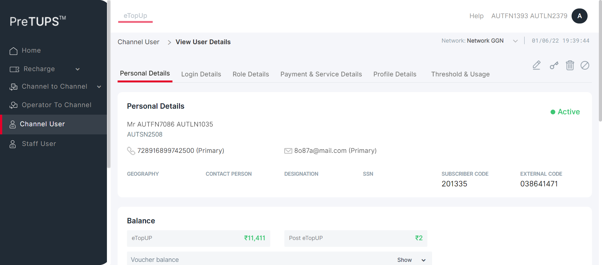
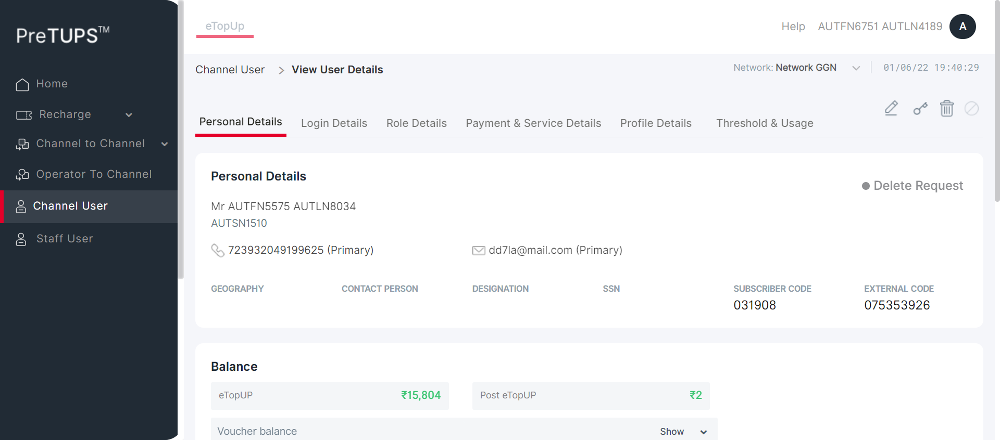
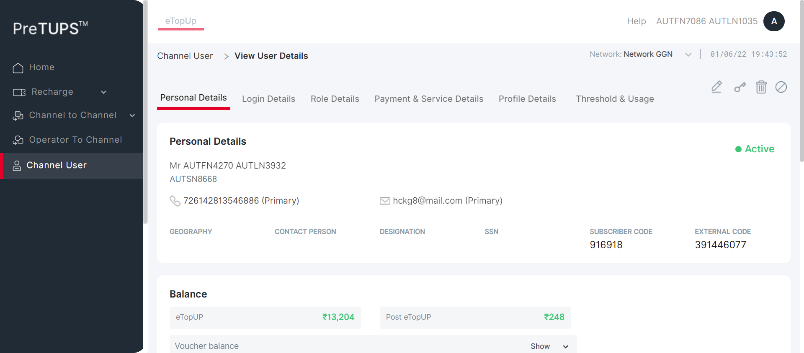
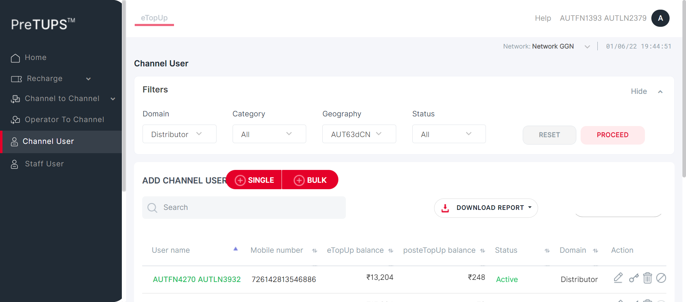
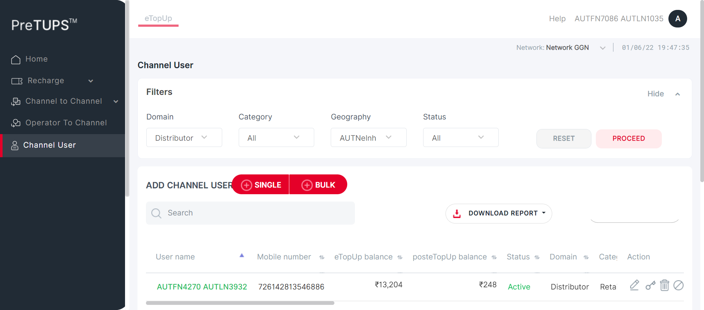
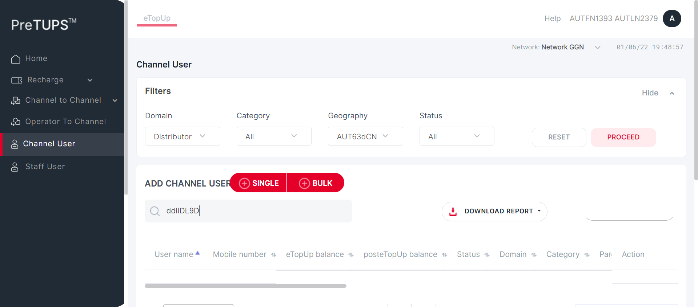
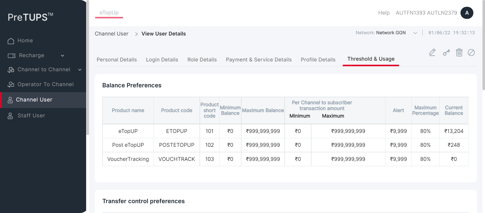
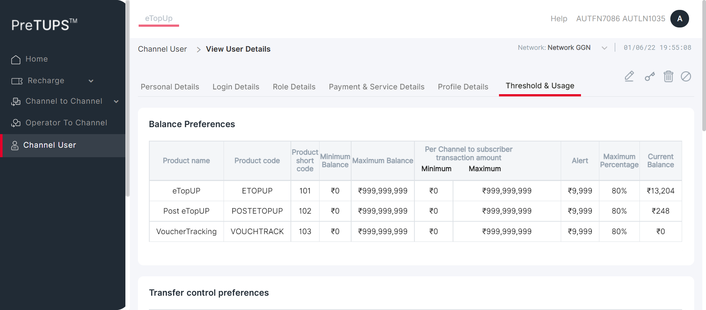

Tests
0 test(s) passed
16 test(s) failed, 40 others
Steps
24 step(s) passed
32 step(s) failed, 3,012 others
Tests
-
[Pre-Requisite]View Channel User Revamp Jun 1, 2022 07:35:50 PM failJun 1, 2022 07:35:50 PM Jun 1, 2022 07:57:18 PM 0h 21m 27s+955ms
-
PREVAMPVCU1: To verify that Channel User is able to View Channel User for Dealer with MSISDN successfully by Super Distributor.Jun 1, 2022 07:35:50 PM 0h 0m 33s+116ms failPre-Requisite
Status Timestamp Details info_outline 7:35:50 PM Category Code for Super Distributor: DIST info_outline 7:35:50 PM Entered webInterface(Super Distributor) info_outline 7:35:50 PM webInterface() :: select query: Select WEB_INTERFACE_ALLOWED from categories where category_name= ? info_outline 7:35:51 PM Database Returns: WEB_INTERFACE_ALLOWED (Y) info_outline 7:35:51 PM Exited webInterface() info_outline 7:35:51 PM Entered PerformViewChannelUserByMSISDN(Super Distributor, Dealer, 724699085750159, 1357, Root, 2, Super Distributor) info_outline 7:35:51 PM Login ID Found as: AUT_48675 info_outline 7:35:51 PM Password Found as: com@2468 info_outline 7:35:51 PM LOGINID : AUT_48675 info_outline 7:35:51 PM LoginID found as: AUT_48675 info_outline 7:35:51 PM Password found as: com@2468 info_outline 7:35:51 PM Username found as: AUTFN1393 AUTLN2379 info_outline 7:35:53 PM Trying to select Language info_outline 7:35:53 PM Language selected successfully as: English info_outline 7:35:53 PM Trying to enter Login ID info_outline 7:35:53 PM Login ID entered successfully as: AUT_48675 info_outline 7:35:53 PM Trying to enter Password info_outline 7:35:53 PM Password entered successfully as: com@2468 info_outline 7:35:53 PM Trying to click Login Button info_outline 7:35:53 PM Login button clicked successfully info_outline 7:35:54 PM Error Message Found on Login Screen: info_outline 7:35:54 PM Waiting for spinner info_outline 7:35:54 PM Waiting for spinner to stop info_outline 7:35:55 PM Spinner stopped info_outline 7:35:55 PM Trying clicking Channel User Heading.. info_outline 7:35:56 PM User clicked Channel User Heading. info_outline 7:35:56 PM Waiting for spinner info_outline 7:35:56 PM Waiting for spinner to stop info_outline 7:35:57 PM Spinner stopped info_outline 7:35:57 PM Trying to enter search by field Of Child User.. info_outline 7:36:00 PM Field entered :724699085750159 info_outline 7:36:00 PM Trying to click on the User Name of the Child User.. info_outline 7:36:00 PM Clicked on the User Name of the Child User. info_outline 7:36:00 PM Waiting for spinner info_outline 7:36:00 PM Waiting for spinner to stop info_outline 7:36:01 PM Spinner stopped info_outline 7:36:01 PM Trying to get the UserName info_outline 7:36:01 PM Fetched User Name of Child User :Mr AUTFN6751 AUTLN4189 info_outline 7:36:01 PM Fetched User Name :AUTFN6751 AUTLN4189 info_outline 7:36:01 PM Trying to get the MSISDN info_outline 7:36:01 PM Fetched MSISDN of Child User :724699085750159 (Primary) info_outline 7:36:01 PM Fetched MSISDN :724699085750159 info_outline 7:36:01 PM Trying to get the Geography info_outline 7:36:01 PM Fetched Geography of Child User : info_outline 7:36:01 PM Trying to get the External Code info_outline 7:36:02 PM Fetched External Code of Child User :516477322 info_outline 7:36:02 PM Trying to get the Channel User Domain info_outline 7:36:02 PM Fetched Domain of Child User :Distributor info_outline 7:36:02 PM Trying to get the Channel User Category info_outline 7:36:02 PM Fetched Category of Child User :Dealer info_outline 7:36:02 PM Trying to get the Channel User's Parent Category info_outline 7:36:02 PM Fetched Parent Category of Child User :Super Distributor info_outline 7:36:02 PM User Name fetched from DataProvider :AUTFN6751 AUTLN4189 info_outline 7:36:02 PM MSISDN fetched from DataProvider :724699085750159 info_outline 7:36:02 PM Geography fetched from DataProvider :AUTNelnh info_outline 7:36:02 PM External Code fetched from DataProvider :516477322 info_outline 7:36:02 PM Domain fetched from DataProvider :Distributor info_outline 7:36:02 PM Category fetched from DataProvider :Dealer info_outline 7:36:02 PM Parent Category fetched from DataProvider :Super Distributor info_outline 7:36:02 PM View Channel User is not successful with expected details in the Personal Details Tab cancel 7:36:02 PM View Channel User is not successful with expected details in the Personal Details Details Tab error 7:36:23 PM Error while getting SSH Server Instance : com.jcraft.jsch.JSchException: java.net.ConnectException: Connection timed out: connect cancel 7:36:23 PM Catalina Log
info_outline 7:36:23 PM -
PREVAMPVCU1: To verify that Channel User is able to View Channel User for Agent with MSISDN successfully by Super Distributor.Jun 1, 2022 07:36:24 PM 0h 0m 30s+896ms failPre-Requisite
Status Timestamp Details info_outline 7:36:24 PM Category Code for Super Distributor: DIST info_outline 7:36:24 PM Entered webInterface(Super Distributor) info_outline 7:36:24 PM webInterface() :: select query: Select WEB_INTERFACE_ALLOWED from categories where category_name= ? info_outline 7:36:25 PM Database Returns: WEB_INTERFACE_ALLOWED (Y) info_outline 7:36:25 PM Exited webInterface() info_outline 7:36:25 PM Entered PerformViewChannelUserByMSISDN(Super Distributor, Agent, 728916899742500, 1357, Root, 3, Super Distributor) info_outline 7:36:25 PM Login ID Found as: AUT_48675 info_outline 7:36:25 PM Password Found as: com@2468 info_outline 7:36:25 PM LOGINID : AUT_48675 info_outline 7:36:25 PM LoginID found as: AUT_48675 info_outline 7:36:25 PM Password found as: com@2468 info_outline 7:36:25 PM Username found as: AUTFN1393 AUTLN2379 info_outline 7:36:26 PM Trying to select Language info_outline 7:36:26 PM Language selected successfully as: English info_outline 7:36:26 PM Trying to enter Login ID info_outline 7:36:26 PM Login ID entered successfully as: AUT_48675 info_outline 7:36:26 PM Trying to enter Password info_outline 7:36:27 PM Password entered successfully as: com@2468 info_outline 7:36:27 PM Trying to click Login Button info_outline 7:36:27 PM Login button clicked successfully info_outline 7:36:27 PM Error Message Found on Login Screen: info_outline 7:36:27 PM Waiting for spinner info_outline 7:36:27 PM Waiting for spinner to stop info_outline 7:36:29 PM Spinner stopped info_outline 7:36:30 PM Trying clicking Channel User Heading.. info_outline 7:36:30 PM User clicked Channel User Heading. info_outline 7:36:30 PM Waiting for spinner info_outline 7:36:30 PM Waiting for spinner to stop info_outline 7:36:31 PM Spinner stopped info_outline 7:36:31 PM Trying to enter search by field Of Child User.. info_outline 7:36:31 PM Field entered :728916899742500 info_outline 7:36:31 PM Trying to click on the User Name of the Child User.. info_outline 7:36:31 PM Clicked on the User Name of the Child User. info_outline 7:36:31 PM Waiting for spinner info_outline 7:36:31 PM Waiting for spinner to stop info_outline 7:36:33 PM Spinner stopped info_outline 7:36:33 PM Trying to get the UserName info_outline 7:36:33 PM Fetched User Name of Child User :Mr AUTFN7086 AUTLN1035 info_outline 7:36:33 PM Fetched User Name :AUTFN7086 AUTLN1035 info_outline 7:36:33 PM Trying to get the MSISDN info_outline 7:36:33 PM Fetched MSISDN of Child User :728916899742500 (Primary) info_outline 7:36:33 PM Fetched MSISDN :728916899742500 info_outline 7:36:33 PM Trying to get the Geography info_outline 7:36:33 PM Fetched Geography of Child User : info_outline 7:36:33 PM Trying to get the External Code info_outline 7:36:33 PM Fetched External Code of Child User :038641471 info_outline 7:36:33 PM Trying to get the Channel User Domain info_outline 7:36:33 PM Fetched Domain of Child User :Distributor info_outline 7:36:33 PM Trying to get the Channel User Category info_outline 7:36:34 PM Fetched Category of Child User :Agent info_outline 7:36:34 PM Trying to get the Channel User's Parent Category info_outline 7:36:34 PM Fetched Parent Category of Child User :Super Distributor info_outline 7:36:34 PM User Name fetched from DataProvider :AUTFN7086 AUTLN1035 info_outline 7:36:34 PM MSISDN fetched from DataProvider :728916899742500 info_outline 7:36:34 PM Geography fetched from DataProvider :AUTNelnh info_outline 7:36:34 PM External Code fetched from DataProvider :038641471 info_outline 7:36:34 PM Domain fetched from DataProvider :Distributor info_outline 7:36:34 PM Category fetched from DataProvider :Agent info_outline 7:36:34 PM Parent Category fetched from DataProvider :Super Distributor info_outline 7:36:34 PM View Channel User is not successful with expected details in the Personal Details Tab cancel 7:36:34 PM View Channel User is not successful with expected details in the Personal Details Details Tab error 7:36:55 PM Error while getting SSH Server Instance : com.jcraft.jsch.JSchException: java.net.ConnectException: Connection timed out: connect cancel 7:36:55 PM Catalina Log
info_outline 7:36:55 PM -
PREVAMPVCU1: To verify that Channel User is able to View Channel User for Agent with MSISDN successfully by Super Distributor.Jun 1, 2022 07:36:55 PM 0h 0m 4s+828ms skipPre-Requisite
Status Timestamp Details info_outline 7:36:55 PM Category Code for Super Distributor: DIST info_outline 7:36:56 PM Entered webInterface(Super Distributor) info_outline 7:36:56 PM webInterface() :: select query: Select WEB_INTERFACE_ALLOWED from categories where category_name= ? info_outline 7:36:56 PM Database Returns: WEB_INTERFACE_ALLOWED (Y) info_outline 7:36:56 PM Exited webInterface() info_outline 7:36:56 PM Entered PerformViewChannelUserByMSISDN(Super Distributor, Agent, 723932049199625, 1357, Root, 4, Dealer) info_outline 7:36:56 PM Login ID Found as: AUT_48675 info_outline 7:36:56 PM Password Found as: com@2468 info_outline 7:36:56 PM LOGINID : AUT_48675 info_outline 7:36:56 PM LoginID found as: AUT_48675 info_outline 7:36:56 PM Password found as: com@2468 info_outline 7:36:56 PM Username found as: AUTFN1393 AUTLN2379 info_outline 7:36:57 PM Trying to select Language info_outline 7:36:57 PM Language selected successfully as: English info_outline 7:36:57 PM Trying to enter Login ID info_outline 7:36:57 PM Login ID entered successfully as: AUT_48675 info_outline 7:36:57 PM Trying to enter Password info_outline 7:36:58 PM Password entered successfully as: com@2468 info_outline 7:36:58 PM Trying to click Login Button info_outline 7:36:58 PM Login button clicked successfully info_outline 7:36:58 PM Error Message Found on Login Screen: info_outline 7:36:58 PM Waiting for spinner info_outline 7:36:58 PM Waiting for spinner to stop info_outline 7:37:00 PM Spinner stopped redo 7:37:00 PM View Channel User cannot be performed by Super Distributor for Agent [ For Parent Dealer ] -
PREVAMPVCU1: To verify that Channel User is able to View Channel User for Retailer with MSISDN successfully by Super Distributor.Jun 1, 2022 07:37:00 PM 0h 0m 3s+943ms skipPre-Requisite
Status Timestamp Details info_outline 7:37:00 PM Category Code for Super Distributor: DIST info_outline 7:37:01 PM Entered webInterface(Super Distributor) info_outline 7:37:01 PM webInterface() :: select query: Select WEB_INTERFACE_ALLOWED from categories where category_name= ? info_outline 7:37:01 PM Database Returns: WEB_INTERFACE_ALLOWED (Y) info_outline 7:37:01 PM Exited webInterface() info_outline 7:37:01 PM Entered PerformViewChannelUserByMSISDN(Super Distributor, Retailer, 726142813546886, 1357, Root, 5, Agent) info_outline 7:37:01 PM Login ID Found as: AUT_48675 info_outline 7:37:01 PM Password Found as: com@2468 info_outline 7:37:01 PM LOGINID : AUT_48675 info_outline 7:37:01 PM LoginID found as: AUT_48675 info_outline 7:37:01 PM Password found as: com@2468 info_outline 7:37:01 PM Username found as: AUTFN1393 AUTLN2379 info_outline 7:37:01 PM Trying to select Language info_outline 7:37:02 PM Language selected successfully as: English info_outline 7:37:02 PM Trying to enter Login ID info_outline 7:37:02 PM Login ID entered successfully as: AUT_48675 info_outline 7:37:02 PM Trying to enter Password info_outline 7:37:02 PM Password entered successfully as: com@2468 info_outline 7:37:02 PM Trying to click Login Button info_outline 7:37:02 PM Login button clicked successfully info_outline 7:37:02 PM Error Message Found on Login Screen: info_outline 7:37:02 PM Waiting for spinner info_outline 7:37:02 PM Waiting for spinner to stop info_outline 7:37:04 PM Spinner stopped redo 7:37:04 PM View Channel User cannot be performed by Super Distributor for Agent [ For Parent Agent ] -
PREVAMPVCU1: To verify that Channel User is able to View Channel User for Agent with MSISDN successfully by Dealer.Jun 1, 2022 07:37:04 PM 0h 0m 4s+463ms skipPre-Requisite
Status Timestamp Details info_outline 7:37:05 PM Category Code for Dealer: SE info_outline 7:37:05 PM Entered webInterface(Dealer) info_outline 7:37:05 PM webInterface() :: select query: Select WEB_INTERFACE_ALLOWED from categories where category_name= ? info_outline 7:37:05 PM Database Returns: WEB_INTERFACE_ALLOWED (Y) info_outline 7:37:05 PM Exited webInterface() info_outline 7:37:05 PM Entered PerformViewChannelUserByMSISDN(Dealer, Agent, 728916899742500, 2468, Super Distributor, 3, Super Distributor) info_outline 7:37:05 PM Login ID Found as: AUT_19995 info_outline 7:37:05 PM Password Found as: com@2468 info_outline 7:37:05 PM LOGINID : AUT_19995 info_outline 7:37:05 PM LoginID found as: AUT_19995 info_outline 7:37:05 PM Password found as: com@2468 info_outline 7:37:05 PM Username found as: AUTFN6751 AUTLN4189 info_outline 7:37:05 PM Trying to select Language info_outline 7:37:06 PM Language selected successfully as: English info_outline 7:37:06 PM Trying to enter Login ID info_outline 7:37:06 PM Login ID entered successfully as: AUT_19995 info_outline 7:37:06 PM Trying to enter Password info_outline 7:37:06 PM Password entered successfully as: com@2468 info_outline 7:37:06 PM Trying to click Login Button info_outline 7:37:06 PM Login button clicked successfully info_outline 7:37:06 PM Error Message Found on Login Screen: info_outline 7:37:06 PM Waiting for spinner info_outline 7:37:07 PM Waiting for spinner to stop info_outline 7:37:09 PM Spinner stopped redo 7:37:09 PM View Channel User cannot be performed by Dealer for Agent [ For Parent Super Distributor ] -
PREVAMPVCU1: To verify that Channel User is able to View Channel User for Agent with MSISDN successfully by Dealer.Jun 1, 2022 07:37:09 PM 0h 0m 59s+683ms failPre-Requisite
Status Timestamp Details info_outline 7:37:09 PM Category Code for Dealer: SE info_outline 7:37:09 PM Entered webInterface(Dealer) info_outline 7:37:09 PM webInterface() :: select query: Select WEB_INTERFACE_ALLOWED from categories where category_name= ? info_outline 7:37:09 PM Database Returns: WEB_INTERFACE_ALLOWED (Y) info_outline 7:37:09 PM Exited webInterface() info_outline 7:37:09 PM Entered PerformViewChannelUserByMSISDN(Dealer, Agent, 723932049199625, 2468, Super Distributor, 4, Dealer) info_outline 7:37:10 PM Login ID Found as: AUT_19995 info_outline 7:37:10 PM Password Found as: com@2468 info_outline 7:37:10 PM LOGINID : AUT_19995 info_outline 7:37:10 PM LoginID found as: AUT_19995 info_outline 7:37:10 PM Password found as: com@2468 info_outline 7:37:10 PM Username found as: AUTFN6751 AUTLN4189 info_outline 7:37:10 PM Trying to select Language info_outline 7:37:10 PM Language selected successfully as: English info_outline 7:37:10 PM Trying to enter Login ID info_outline 7:37:11 PM Login ID entered successfully as: AUT_19995 info_outline 7:37:11 PM Trying to enter Password info_outline 7:37:11 PM Password entered successfully as: com@2468 info_outline 7:37:11 PM Trying to click Login Button info_outline 7:37:11 PM Login button clicked successfully info_outline 7:37:11 PM Error Message Found on Login Screen: info_outline 7:37:11 PM Waiting for spinner info_outline 7:37:11 PM Waiting for spinner to stop info_outline 7:37:13 PM Spinner stopped info_outline 7:37:13 PM Trying clicking Channel User Heading.. info_outline 7:37:13 PM User clicked Channel User Heading. info_outline 7:37:13 PM Waiting for spinner info_outline 7:37:44 PM Element not found info_outline 7:37:44 PM Spinner stopped info_outline 7:37:44 PM Trying to enter search by field Of Child User.. info_outline 7:37:45 PM Field entered :723932049199625 info_outline 7:37:45 PM Trying to click on the User Name of the Child User.. info_outline 7:37:45 PM Clicked on the User Name of the Child User. info_outline 7:37:45 PM Waiting for spinner info_outline 7:37:45 PM Waiting for spinner to stop info_outline 7:37:47 PM Spinner stopped info_outline 7:37:47 PM Trying to get the UserName info_outline 7:37:47 PM Fetched User Name of Child User :Mr AUTFN5575 AUTLN8034 info_outline 7:37:47 PM Fetched User Name :AUTFN5575 AUTLN8034 info_outline 7:37:47 PM Trying to get the MSISDN info_outline 7:37:47 PM Fetched MSISDN of Child User :723932049199625 (Primary) info_outline 7:37:47 PM Fetched MSISDN :723932049199625 info_outline 7:37:47 PM Trying to get the Geography info_outline 7:37:47 PM Fetched Geography of Child User : info_outline 7:37:47 PM Trying to get the External Code info_outline 7:37:47 PM Fetched External Code of Child User :075353926 info_outline 7:37:47 PM Trying to get the Channel User Domain info_outline 7:37:47 PM Fetched Domain of Child User :Distributor info_outline 7:37:47 PM Trying to get the Channel User Category info_outline 7:37:47 PM Fetched Category of Child User :Agent info_outline 7:37:47 PM Trying to get the Channel User's Parent Category info_outline 7:37:47 PM Fetched Parent Category of Child User :Dealer info_outline 7:37:47 PM User Name fetched from DataProvider :AUTFN5575 AUTLN8034 info_outline 7:37:47 PM MSISDN fetched from DataProvider :723932049199625 info_outline 7:37:47 PM Geography fetched from DataProvider :AUTNelnh info_outline 7:37:47 PM External Code fetched from DataProvider :075353926 info_outline 7:37:47 PM Domain fetched from DataProvider :Distributor info_outline 7:37:47 PM Category fetched from DataProvider :Agent info_outline 7:37:47 PM Parent Category fetched from DataProvider :Dealer info_outline 7:37:47 PM View Channel User is not successful with expected details in the Personal Details Tab cancel 7:37:47 PM View Channel User is not successful with expected details in the Personal Details Details Tab error 7:38:08 PM Error while getting SSH Server Instance : com.jcraft.jsch.JSchException: java.net.ConnectException: Connection timed out: connect cancel 7:38:08 PM Catalina Log
info_outline 7:38:09 PM -
PREVAMPVCU1: To verify that Channel User is able to View Channel User for Retailer with MSISDN successfully by Dealer.Jun 1, 2022 07:38:09 PM 0h 0m 4s+963ms skipPre-Requisite
Status Timestamp Details info_outline 7:38:09 PM Category Code for Dealer: SE info_outline 7:38:09 PM Entered webInterface(Dealer) info_outline 7:38:09 PM webInterface() :: select query: Select WEB_INTERFACE_ALLOWED from categories where category_name= ? info_outline 7:38:09 PM Database Returns: WEB_INTERFACE_ALLOWED (Y) info_outline 7:38:09 PM Exited webInterface() info_outline 7:38:09 PM Entered PerformViewChannelUserByMSISDN(Dealer, Retailer, 726142813546886, 2468, Super Distributor, 5, Agent) info_outline 7:38:09 PM Login ID Found as: AUT_19995 info_outline 7:38:09 PM Password Found as: com@2468 info_outline 7:38:09 PM LOGINID : AUT_19995 info_outline 7:38:10 PM LoginID found as: AUT_19995 info_outline 7:38:10 PM Password found as: com@2468 info_outline 7:38:10 PM Username found as: AUTFN6751 AUTLN4189 info_outline 7:38:10 PM Trying to select Language info_outline 7:38:11 PM Language selected successfully as: English info_outline 7:38:11 PM Trying to enter Login ID info_outline 7:38:11 PM Login ID entered successfully as: AUT_19995 info_outline 7:38:11 PM Trying to enter Password info_outline 7:38:11 PM Password entered successfully as: com@2468 info_outline 7:38:11 PM Trying to click Login Button info_outline 7:38:11 PM Login button clicked successfully info_outline 7:38:11 PM Error Message Found on Login Screen: info_outline 7:38:11 PM Waiting for spinner info_outline 7:38:11 PM Waiting for spinner to stop info_outline 7:38:14 PM Spinner stopped redo 7:38:14 PM View Channel User cannot be performed by Dealer for Agent [ For Parent Agent ] -
PREVAMPVCU1: To verify that Channel User is able to View Channel User for Retailer with MSISDN successfully by Agent.Jun 1, 2022 07:38:14 PM 0h 0m 32s+320ms failPre-Requisite
Status Timestamp Details info_outline 7:38:14 PM Category Code for Agent: AG info_outline 7:38:14 PM Entered webInterface(Agent) info_outline 7:38:14 PM webInterface() :: select query: Select WEB_INTERFACE_ALLOWED from categories where category_name= ? info_outline 7:38:14 PM Database Returns: WEB_INTERFACE_ALLOWED (Y) info_outline 7:38:14 PM Exited webInterface() info_outline 7:38:14 PM Entered PerformViewChannelUserByMSISDN(Agent, Retailer, 726142813546886, 1357, Super Distributor, 5, Agent) info_outline 7:38:15 PM Login ID Found as: AUT_08837 info_outline 7:38:15 PM Password Found as: com@2468 info_outline 7:38:15 PM LOGINID : AUT_08837 info_outline 7:38:15 PM LoginID found as: AUT_08837 info_outline 7:38:15 PM Password found as: com@2468 info_outline 7:38:15 PM Username found as: AUTFN7086 AUTLN1035 info_outline 7:38:15 PM Trying to select Language info_outline 7:38:15 PM Language selected successfully as: English info_outline 7:38:15 PM Trying to enter Login ID info_outline 7:38:16 PM Login ID entered successfully as: AUT_08837 info_outline 7:38:16 PM Trying to enter Password info_outline 7:38:16 PM Password entered successfully as: com@2468 info_outline 7:38:16 PM Trying to click Login Button info_outline 7:38:16 PM Login button clicked successfully info_outline 7:38:16 PM Error Message Found on Login Screen: info_outline 7:38:16 PM Waiting for spinner info_outline 7:38:16 PM Waiting for spinner to stop info_outline 7:38:18 PM Spinner stopped info_outline 7:38:18 PM Trying clicking Channel User Heading.. info_outline 7:38:19 PM User clicked Channel User Heading. info_outline 7:38:19 PM Waiting for spinner info_outline 7:38:19 PM Waiting for spinner to stop info_outline 7:38:19 PM Spinner stopped info_outline 7:38:19 PM Trying to enter search by field Of Child User.. info_outline 7:38:20 PM Field entered :726142813546886 info_outline 7:38:20 PM Trying to click on the User Name of the Child User.. info_outline 7:38:20 PM Clicked on the User Name of the Child User. info_outline 7:38:20 PM Waiting for spinner info_outline 7:38:20 PM Waiting for spinner to stop info_outline 7:38:22 PM Spinner stopped info_outline 7:38:22 PM Trying to get the UserName info_outline 7:38:22 PM Fetched User Name of Child User :Mr AUTFN4270 AUTLN3932 info_outline 7:38:22 PM Fetched User Name :AUTFN4270 AUTLN3932 info_outline 7:38:22 PM Trying to get the MSISDN info_outline 7:38:22 PM Fetched MSISDN of Child User :726142813546886 (Primary) info_outline 7:38:22 PM Fetched MSISDN :726142813546886 info_outline 7:38:22 PM Trying to get the Geography info_outline 7:38:22 PM Fetched Geography of Child User : info_outline 7:38:22 PM Trying to get the External Code info_outline 7:38:22 PM Fetched External Code of Child User :391446077 info_outline 7:38:22 PM Trying to get the Channel User Domain info_outline 7:38:22 PM Fetched Domain of Child User :Distributor info_outline 7:38:22 PM Trying to get the Channel User Category info_outline 7:38:22 PM Fetched Category of Child User :Retailer info_outline 7:38:22 PM Trying to get the Channel User's Parent Category info_outline 7:38:22 PM Fetched Parent Category of Child User :Agent info_outline 7:38:22 PM User Name fetched from DataProvider :AUTFN4270 AUTLN3932 info_outline 7:38:22 PM MSISDN fetched from DataProvider :726142813546886 info_outline 7:38:22 PM Geography fetched from DataProvider :AUTNelnh info_outline 7:38:22 PM External Code fetched from DataProvider :391446077 info_outline 7:38:22 PM Domain fetched from DataProvider :Distributor info_outline 7:38:22 PM Category fetched from DataProvider :Retailer info_outline 7:38:22 PM Parent Category fetched from DataProvider :Agent info_outline 7:38:22 PM View Channel User is not successful with expected details in the Personal Details Tab cancel 7:38:22 PM View Channel User is not successful with expected details in the Personal Details Details Tab error 7:38:43 PM Error while getting SSH Server Instance : com.jcraft.jsch.JSchException: java.net.ConnectException: Connection timed out: connect cancel 7:38:43 PM Catalina Log
info_outline 7:38:44 PM low_priority 7:38:44 PM java.lang.NullPointerException
low_priority 7:38:44 PM java.lang.NullPointerException
low_priority 7:38:44 PM java.lang.NullPointerException
low_priority 7:38:45 PM java.lang.NullPointerException
low_priority 7:38:45 PM java.lang.NullPointerException
low_priority 7:38:45 PM java.lang.NullPointerException
info_outline 7:38:46 PM Entered :: getSystemPreference(TRF_RULE_USER_LEVEL_ALLOW) info_outline 7:38:46 PM Query Repository Returns: DEFAULT_VALUE (true) -
PREVAMPVCU2: To verify that Channel User is able to View Channel User for Dealer with LoginID successfully by Super Distributor.Jun 1, 2022 07:38:46 PM 0h 0m 29s+128ms failPre-Requisite
Status Timestamp Details info_outline 7:38:46 PM Category Code for Super Distributor: DIST info_outline 7:38:47 PM Entered webInterface(Super Distributor) info_outline 7:38:47 PM webInterface() :: select query: Select WEB_INTERFACE_ALLOWED from categories where category_name= ? info_outline 7:38:47 PM Database Returns: WEB_INTERFACE_ALLOWED (Y) info_outline 7:38:47 PM Exited webInterface() info_outline 7:38:47 PM Entered PerformViewChannelUserByLoginID(Super Distributor, Dealer, 724699085750159, 1357, Root, 2) info_outline 7:38:47 PM LoginID found as: AUT_48675 info_outline 7:38:47 PM Password found as: com@2468 info_outline 7:38:47 PM Username found as: AUTFN1393 AUTLN2379 info_outline 7:38:48 PM Trying to select Language info_outline 7:38:48 PM Language selected successfully as: English info_outline 7:38:48 PM Trying to enter Login ID info_outline 7:38:48 PM Login ID entered successfully as: AUT_48675 info_outline 7:38:48 PM Trying to enter Password info_outline 7:38:49 PM Password entered successfully as: com@2468 info_outline 7:38:49 PM Trying to click Login Button info_outline 7:38:49 PM Login button clicked successfully info_outline 7:38:49 PM Error Message Found on Login Screen: info_outline 7:38:49 PM Waiting for spinner info_outline 7:38:49 PM Waiting for spinner to stop info_outline 7:38:50 PM Spinner stopped info_outline 7:38:50 PM Trying clicking Channel User Heading.. info_outline 7:38:50 PM User clicked Channel User Heading. info_outline 7:38:50 PM Waiting for spinner info_outline 7:38:51 PM Waiting for spinner to stop info_outline 7:38:52 PM Spinner stopped info_outline 7:38:52 PM Trying to enter search by field Of Child User.. info_outline 7:38:52 PM Field entered :AUT_19995 info_outline 7:38:52 PM Trying to click on the User Name of the Child User.. info_outline 7:38:52 PM Clicked on the User Name of the Child User. info_outline 7:38:52 PM Waiting for spinner info_outline 7:38:52 PM Waiting for spinner to stop info_outline 7:38:54 PM Spinner stopped info_outline 7:38:54 PM Trying to get the UserName info_outline 7:38:54 PM Fetched User Name of Child User :Mr AUTFN6751 AUTLN4189 info_outline 7:38:54 PM Fetched User Name :AUTFN6751 AUTLN4189 info_outline 7:38:54 PM Trying to get the MSISDN info_outline 7:38:54 PM Fetched MSISDN of Child User :724699085750159 (Primary) info_outline 7:38:54 PM Fetched MSISDN :724699085750159 info_outline 7:38:54 PM Trying to get the Geography info_outline 7:38:54 PM Fetched Geography of Child User : info_outline 7:38:54 PM Trying to get the External Code info_outline 7:38:54 PM Fetched External Code of Child User :516477322 info_outline 7:38:54 PM Trying to get the Channel User Domain info_outline 7:38:54 PM Fetched Domain of Child User :Distributor info_outline 7:38:54 PM Trying to get the Channel User Category info_outline 7:38:54 PM Fetched Category of Child User :Dealer info_outline 7:38:54 PM Trying to get the Channel User's Parent Category info_outline 7:38:54 PM Fetched Parent Category of Child User :Super Distributor info_outline 7:38:54 PM User Name fetched from DataProvider :AUTFN6751 AUTLN4189 info_outline 7:38:54 PM MSISDN fetched from DataProvider :724699085750159 info_outline 7:38:54 PM Geography fetched from DataProvider :AUTNelnh info_outline 7:38:54 PM External Code fetched from DataProvider :516477322 info_outline 7:38:54 PM Domain fetched from DataProvider :Distributor info_outline 7:38:54 PM Category fetched from DataProvider :Dealer info_outline 7:38:54 PM Parent Category fetched from DataProvider :Super Distributor info_outline 7:38:54 PM View Channel User is not successful with expected details in the Personal Details Tab cancel 7:38:54 PM View Channel User is not successful with expected details in the Personal Details Details Tab error 7:39:15 PM Error while getting SSH Server Instance : com.jcraft.jsch.JSchException: java.net.ConnectException: Connection timed out: connect cancel 7:39:15 PM Catalina Log
info_outline 7:39:15 PM -
PREVAMPVCU2: To verify that Channel User is able to View Channel User for Agent with LoginID successfully by Super Distributor.Jun 1, 2022 07:39:16 PM 0h 0m 28s+894ms failPre-Requisite
Status Timestamp Details info_outline 7:39:16 PM Category Code for Super Distributor: DIST info_outline 7:39:16 PM Entered webInterface(Super Distributor) info_outline 7:39:16 PM webInterface() :: select query: Select WEB_INTERFACE_ALLOWED from categories where category_name= ? info_outline 7:39:16 PM Database Returns: WEB_INTERFACE_ALLOWED (Y) info_outline 7:39:16 PM Exited webInterface() info_outline 7:39:16 PM Entered PerformViewChannelUserByLoginID(Super Distributor, Agent, 728916899742500, 1357, Root, 3) info_outline 7:39:16 PM LoginID found as: AUT_48675 info_outline 7:39:16 PM Password found as: com@2468 info_outline 7:39:16 PM Username found as: AUTFN1393 AUTLN2379 info_outline 7:39:17 PM Trying to select Language info_outline 7:39:17 PM Language selected successfully as: English info_outline 7:39:17 PM Trying to enter Login ID info_outline 7:39:17 PM Login ID entered successfully as: AUT_48675 info_outline 7:39:17 PM Trying to enter Password info_outline 7:39:17 PM Password entered successfully as: com@2468 info_outline 7:39:17 PM Trying to click Login Button info_outline 7:39:18 PM Login button clicked successfully info_outline 7:39:18 PM Error Message Found on Login Screen: info_outline 7:39:18 PM Waiting for spinner info_outline 7:39:18 PM Waiting for spinner to stop info_outline 7:39:20 PM Spinner stopped info_outline 7:39:20 PM Trying clicking Channel User Heading.. info_outline 7:39:20 PM User clicked Channel User Heading. info_outline 7:39:20 PM Waiting for spinner info_outline 7:39:20 PM Waiting for spinner to stop info_outline 7:39:21 PM Spinner stopped info_outline 7:39:21 PM Trying to enter search by field Of Child User.. info_outline 7:39:21 PM Field entered :AUT_08837 info_outline 7:39:21 PM Trying to click on the User Name of the Child User.. info_outline 7:39:21 PM Clicked on the User Name of the Child User. info_outline 7:39:21 PM Waiting for spinner info_outline 7:39:21 PM Waiting for spinner to stop info_outline 7:39:23 PM Spinner stopped info_outline 7:39:23 PM Trying to get the UserName info_outline 7:39:23 PM Fetched User Name of Child User :Mr AUTFN7086 AUTLN1035 info_outline 7:39:23 PM Fetched User Name :AUTFN7086 AUTLN1035 info_outline 7:39:23 PM Trying to get the MSISDN info_outline 7:39:23 PM Fetched MSISDN of Child User :728916899742500 (Primary) info_outline 7:39:23 PM Fetched MSISDN :728916899742500 info_outline 7:39:23 PM Trying to get the Geography info_outline 7:39:23 PM Fetched Geography of Child User : info_outline 7:39:23 PM Trying to get the External Code info_outline 7:39:23 PM Fetched External Code of Child User :038641471 info_outline 7:39:23 PM Trying to get the Channel User Domain info_outline 7:39:23 PM Fetched Domain of Child User :Distributor info_outline 7:39:23 PM Trying to get the Channel User Category info_outline 7:39:23 PM Fetched Category of Child User :Agent info_outline 7:39:23 PM Trying to get the Channel User's Parent Category info_outline 7:39:23 PM Fetched Parent Category of Child User :Super Distributor info_outline 7:39:23 PM User Name fetched from DataProvider :AUTFN7086 AUTLN1035 info_outline 7:39:23 PM MSISDN fetched from DataProvider :728916899742500 info_outline 7:39:23 PM Geography fetched from DataProvider :AUTNelnh info_outline 7:39:23 PM External Code fetched from DataProvider :038641471 info_outline 7:39:23 PM Domain fetched from DataProvider :Distributor info_outline 7:39:23 PM Category fetched from DataProvider :Agent info_outline 7:39:23 PM Parent Category fetched from DataProvider :Super Distributor info_outline 7:39:23 PM View Channel User is not successful with expected details in the Personal Details Tab cancel 7:39:23 PM View Channel User is not successful with expected details in the Personal Details Details Tab error 7:39:44 PM Error while getting SSH Server Instance : com.jcraft.jsch.JSchException: java.net.ConnectException: Connection timed out: connect cancel 7:39:44 PM Catalina Log
info_outline 7:39:44 PM  -
PREVAMPVCU2: To verify that Channel User is able to View Channel User for Agent with LoginID successfully by Super Distributor.Jun 1, 2022 07:39:45 PM 0h 0m 5s+413ms skipPre-Requisite
Status Timestamp Details info_outline 7:39:45 PM Category Code for Super Distributor: DIST info_outline 7:39:45 PM Entered webInterface(Super Distributor) info_outline 7:39:45 PM webInterface() :: select query: Select WEB_INTERFACE_ALLOWED from categories where category_name= ? info_outline 7:39:45 PM Database Returns: WEB_INTERFACE_ALLOWED (Y) info_outline 7:39:45 PM Exited webInterface() info_outline 7:39:45 PM Entered PerformViewChannelUserByLoginID(Super Distributor, Agent, 723932049199625, 1357, Root, 4) info_outline 7:39:45 PM LoginID found as: AUT_48675 info_outline 7:39:45 PM Password found as: com@2468 info_outline 7:39:45 PM Username found as: AUTFN1393 AUTLN2379 info_outline 7:39:46 PM Trying to select Language info_outline 7:39:46 PM Language selected successfully as: English info_outline 7:39:46 PM Trying to enter Login ID info_outline 7:39:47 PM Login ID entered successfully as: AUT_48675 info_outline 7:39:47 PM Trying to enter Password info_outline 7:39:47 PM Password entered successfully as: com@2468 info_outline 7:39:47 PM Trying to click Login Button info_outline 7:39:47 PM Login button clicked successfully info_outline 7:39:47 PM Error Message Found on Login Screen: info_outline 7:39:47 PM Waiting for spinner info_outline 7:39:47 PM Waiting for spinner to stop info_outline 7:39:49 PM Spinner stopped info_outline 7:39:49 PM Trying clicking Channel User Heading.. info_outline 7:39:49 PM User clicked Channel User Heading. info_outline 7:39:49 PM Waiting for spinner info_outline 7:39:49 PM Waiting for spinner to stop info_outline 7:39:50 PM Spinner stopped redo 7:39:50 PM View Channel User cannot be performed by Super Distributor for Agent [ For Parent Dealer ] -
PREVAMPVCU2: To verify that Channel User is able to View Channel User for Retailer with LoginID successfully by Super Distributor.Jun 1, 2022 07:39:50 PM 0h 0m 4s+717ms skipPre-Requisite
Status Timestamp Details info_outline 7:39:50 PM Category Code for Super Distributor: DIST info_outline 7:39:50 PM Entered webInterface(Super Distributor) info_outline 7:39:50 PM webInterface() :: select query: Select WEB_INTERFACE_ALLOWED from categories where category_name= ? info_outline 7:39:51 PM Database Returns: WEB_INTERFACE_ALLOWED (Y) info_outline 7:39:51 PM Exited webInterface() info_outline 7:39:51 PM Entered PerformViewChannelUserByLoginID(Super Distributor, Retailer, 726142813546886, 1357, Root, 5) info_outline 7:39:51 PM LoginID found as: AUT_48675 info_outline 7:39:51 PM Password found as: com@2468 info_outline 7:39:51 PM Username found as: AUTFN1393 AUTLN2379 info_outline 7:39:51 PM Trying to select Language info_outline 7:39:52 PM Language selected successfully as: English info_outline 7:39:52 PM Trying to enter Login ID info_outline 7:39:52 PM Login ID entered successfully as: AUT_48675 info_outline 7:39:52 PM Trying to enter Password info_outline 7:39:52 PM Password entered successfully as: com@2468 info_outline 7:39:52 PM Trying to click Login Button info_outline 7:39:52 PM Login button clicked successfully info_outline 7:39:52 PM Error Message Found on Login Screen: info_outline 7:39:52 PM Waiting for spinner info_outline 7:39:52 PM Waiting for spinner to stop info_outline 7:39:53 PM Spinner stopped info_outline 7:39:53 PM Trying clicking Channel User Heading.. info_outline 7:39:54 PM User clicked Channel User Heading. info_outline 7:39:54 PM Waiting for spinner info_outline 7:39:54 PM Waiting for spinner to stop info_outline 7:39:55 PM Spinner stopped redo 7:39:55 PM View Channel User cannot be performed by Super Distributor for Agent [ For Parent Agent ] -
PREVAMPVCU2: To verify that Channel User is able to View Channel User for Agent with LoginID successfully by Dealer.Jun 1, 2022 07:39:55 PM 0h 0m 5s+290ms skipPre-Requisite
Status Timestamp Details info_outline 7:39:55 PM Category Code for Dealer: SE info_outline 7:39:55 PM Entered webInterface(Dealer) info_outline 7:39:55 PM webInterface() :: select query: Select WEB_INTERFACE_ALLOWED from categories where category_name= ? info_outline 7:39:55 PM Database Returns: WEB_INTERFACE_ALLOWED (Y) info_outline 7:39:55 PM Exited webInterface() info_outline 7:39:55 PM Entered PerformViewChannelUserByLoginID(Dealer, Agent, 728916899742500, 2468, Super Distributor, 3) info_outline 7:39:56 PM LoginID found as: AUT_19995 info_outline 7:39:56 PM Password found as: com@2468 info_outline 7:39:56 PM Username found as: AUTFN6751 AUTLN4189 info_outline 7:39:56 PM Trying to select Language info_outline 7:39:56 PM Language selected successfully as: English info_outline 7:39:56 PM Trying to enter Login ID info_outline 7:39:57 PM Login ID entered successfully as: AUT_19995 info_outline 7:39:57 PM Trying to enter Password info_outline 7:39:57 PM Password entered successfully as: com@2468 info_outline 7:39:57 PM Trying to click Login Button info_outline 7:39:57 PM Login button clicked successfully info_outline 7:39:57 PM Error Message Found on Login Screen: info_outline 7:39:57 PM Waiting for spinner info_outline 7:39:57 PM Waiting for spinner to stop info_outline 7:39:59 PM Spinner stopped info_outline 7:40:00 PM Trying clicking Channel User Heading.. info_outline 7:40:00 PM User clicked Channel User Heading. info_outline 7:40:00 PM Waiting for spinner info_outline 7:40:00 PM Waiting for spinner to stop info_outline 7:40:00 PM Spinner stopped redo 7:40:00 PM View Channel User cannot be performed by Dealer for Agent [ For Parent Super Distributor ] -
PREVAMPVCU2: To verify that Channel User is able to View Channel User for Agent with LoginID successfully by Dealer.Jun 1, 2022 07:40:01 PM 0h 0m 28s+736ms failPre-Requisite
Status Timestamp Details info_outline 7:40:01 PM Category Code for Dealer: SE info_outline 7:40:01 PM Entered webInterface(Dealer) info_outline 7:40:01 PM webInterface() :: select query: Select WEB_INTERFACE_ALLOWED from categories where category_name= ? info_outline 7:40:01 PM Database Returns: WEB_INTERFACE_ALLOWED (Y) info_outline 7:40:01 PM Exited webInterface() info_outline 7:40:01 PM Entered PerformViewChannelUserByLoginID(Dealer, Agent, 723932049199625, 2468, Super Distributor, 4) info_outline 7:40:01 PM LoginID found as: AUT_19995 info_outline 7:40:01 PM Password found as: com@2468 info_outline 7:40:01 PM Username found as: AUTFN6751 AUTLN4189 info_outline 7:40:01 PM Trying to select Language info_outline 7:40:02 PM Language selected successfully as: English info_outline 7:40:02 PM Trying to enter Login ID info_outline 7:40:02 PM Login ID entered successfully as: AUT_19995 info_outline 7:40:02 PM Trying to enter Password info_outline 7:40:02 PM Password entered successfully as: com@2468 info_outline 7:40:02 PM Trying to click Login Button info_outline 7:40:02 PM Login button clicked successfully info_outline 7:40:02 PM Error Message Found on Login Screen: info_outline 7:40:02 PM Waiting for spinner info_outline 7:40:03 PM Waiting for spinner to stop info_outline 7:40:05 PM Spinner stopped info_outline 7:40:05 PM Trying clicking Channel User Heading.. info_outline 7:40:05 PM User clicked Channel User Heading. info_outline 7:40:05 PM Waiting for spinner info_outline 7:40:05 PM Waiting for spinner to stop info_outline 7:40:06 PM Spinner stopped info_outline 7:40:06 PM Trying to enter search by field Of Child User.. info_outline 7:40:06 PM Field entered :AUT_87570 info_outline 7:40:06 PM Trying to click on the User Name of the Child User.. info_outline 7:40:06 PM Clicked on the User Name of the Child User. info_outline 7:40:06 PM Waiting for spinner info_outline 7:40:06 PM Waiting for spinner to stop info_outline 7:40:07 PM Spinner stopped info_outline 7:40:07 PM Trying to get the UserName info_outline 7:40:07 PM Fetched User Name of Child User :Mr AUTFN5575 AUTLN8034 info_outline 7:40:07 PM Fetched User Name :AUTFN5575 AUTLN8034 info_outline 7:40:07 PM Trying to get the MSISDN info_outline 7:40:07 PM Fetched MSISDN of Child User :723932049199625 (Primary) info_outline 7:40:07 PM Fetched MSISDN :723932049199625 info_outline 7:40:07 PM Trying to get the Geography info_outline 7:40:08 PM Fetched Geography of Child User : info_outline 7:40:08 PM Trying to get the External Code info_outline 7:40:08 PM Fetched External Code of Child User :075353926 info_outline 7:40:08 PM Trying to get the Channel User Domain info_outline 7:40:08 PM Fetched Domain of Child User :Distributor info_outline 7:40:08 PM Trying to get the Channel User Category info_outline 7:40:08 PM Fetched Category of Child User :Agent info_outline 7:40:08 PM Trying to get the Channel User's Parent Category info_outline 7:40:08 PM Fetched Parent Category of Child User :Dealer info_outline 7:40:08 PM User Name fetched from DataProvider :AUTFN5575 AUTLN8034 info_outline 7:40:08 PM MSISDN fetched from DataProvider :723932049199625 info_outline 7:40:08 PM Geography fetched from DataProvider :AUTNelnh info_outline 7:40:08 PM External Code fetched from DataProvider :075353926 info_outline 7:40:08 PM Domain fetched from DataProvider :Distributor info_outline 7:40:08 PM Category fetched from DataProvider :Agent info_outline 7:40:08 PM Parent Category fetched from DataProvider :Dealer info_outline 7:40:08 PM View Channel User is not successful with expected details in the Personal Details Tab cancel 7:40:08 PM View Channel User is not successful with expected details in the Personal Details Details Tab error 7:40:29 PM Error while getting SSH Server Instance : com.jcraft.jsch.JSchException: java.net.ConnectException: Connection timed out: connect cancel 7:40:29 PM Catalina Log
info_outline 7:40:29 PM  -
PREVAMPVCU2: To verify that Channel User is able to View Channel User for Retailer with LoginID successfully by Dealer.Jun 1, 2022 07:40:29 PM 0h 0m 5s+777ms skipPre-Requisite
Status Timestamp Details info_outline 7:40:30 PM Category Code for Dealer: SE info_outline 7:40:30 PM Entered webInterface(Dealer) info_outline 7:40:30 PM webInterface() :: select query: Select WEB_INTERFACE_ALLOWED from categories where category_name= ? info_outline 7:40:30 PM Database Returns: WEB_INTERFACE_ALLOWED (Y) info_outline 7:40:30 PM Exited webInterface() info_outline 7:40:30 PM Entered PerformViewChannelUserByLoginID(Dealer, Retailer, 726142813546886, 2468, Super Distributor, 5) info_outline 7:40:30 PM LoginID found as: AUT_19995 info_outline 7:40:30 PM Password found as: com@2468 info_outline 7:40:30 PM Username found as: AUTFN6751 AUTLN4189 info_outline 7:40:31 PM Trying to select Language info_outline 7:40:31 PM Language selected successfully as: English info_outline 7:40:31 PM Trying to enter Login ID info_outline 7:40:31 PM Login ID entered successfully as: AUT_19995 info_outline 7:40:31 PM Trying to enter Password info_outline 7:40:32 PM Password entered successfully as: com@2468 info_outline 7:40:32 PM Trying to click Login Button info_outline 7:40:32 PM Login button clicked successfully info_outline 7:40:32 PM Error Message Found on Login Screen: info_outline 7:40:32 PM Waiting for spinner info_outline 7:40:32 PM Waiting for spinner to stop info_outline 7:40:34 PM Spinner stopped info_outline 7:40:34 PM Trying clicking Channel User Heading.. info_outline 7:40:35 PM User clicked Channel User Heading. info_outline 7:40:35 PM Waiting for spinner info_outline 7:40:35 PM Waiting for spinner to stop info_outline 7:40:35 PM Spinner stopped redo 7:40:35 PM View Channel User cannot be performed by Dealer for Agent [ For Parent Agent ] -
PREVAMPVCU2: To verify that Channel User is able to View Channel User for Retailer with LoginID successfully by Agent.Jun 1, 2022 07:40:35 PM 0h 0m 31s+509ms failPre-Requisite
Status Timestamp Details info_outline 7:40:35 PM Category Code for Agent: AG info_outline 7:40:36 PM Entered webInterface(Agent) info_outline 7:40:36 PM webInterface() :: select query: Select WEB_INTERFACE_ALLOWED from categories where category_name= ? info_outline 7:40:36 PM Database Returns: WEB_INTERFACE_ALLOWED (Y) info_outline 7:40:36 PM Exited webInterface() info_outline 7:40:36 PM Entered PerformViewChannelUserByLoginID(Agent, Retailer, 726142813546886, 1357, Super Distributor, 5) info_outline 7:40:36 PM LoginID found as: AUT_08837 info_outline 7:40:36 PM Password found as: com@2468 info_outline 7:40:36 PM Username found as: AUTFN7086 AUTLN1035 info_outline 7:40:36 PM Trying to select Language info_outline 7:40:37 PM Language selected successfully as: English info_outline 7:40:37 PM Trying to enter Login ID info_outline 7:40:37 PM Login ID entered successfully as: AUT_08837 info_outline 7:40:37 PM Trying to enter Password info_outline 7:40:37 PM Password entered successfully as: com@2468 info_outline 7:40:37 PM Trying to click Login Button info_outline 7:40:37 PM Login button clicked successfully info_outline 7:40:37 PM Error Message Found on Login Screen: info_outline 7:40:37 PM Waiting for spinner info_outline 7:40:37 PM Waiting for spinner to stop info_outline 7:40:38 PM Spinner stopped info_outline 7:40:38 PM Trying clicking Channel User Heading.. info_outline 7:40:40 PM User clicked Channel User Heading. info_outline 7:40:40 PM Waiting for spinner info_outline 7:40:40 PM Waiting for spinner to stop info_outline 7:40:41 PM Spinner stopped info_outline 7:40:41 PM Trying to enter search by field Of Child User.. info_outline 7:40:41 PM Field entered :AUT_41726 info_outline 7:40:41 PM Trying to click on the User Name of the Child User.. info_outline 7:40:41 PM Clicked on the User Name of the Child User. info_outline 7:40:41 PM Waiting for spinner info_outline 7:40:41 PM Waiting for spinner to stop info_outline 7:40:42 PM Spinner stopped info_outline 7:40:42 PM Trying to get the UserName info_outline 7:40:43 PM Fetched User Name of Child User :Mr AUTFN4270 AUTLN3932 info_outline 7:40:43 PM Fetched User Name :AUTFN4270 AUTLN3932 info_outline 7:40:43 PM Trying to get the MSISDN info_outline 7:40:43 PM Fetched MSISDN of Child User :726142813546886 (Primary) info_outline 7:40:43 PM Fetched MSISDN :726142813546886 info_outline 7:40:43 PM Trying to get the Geography info_outline 7:40:43 PM Fetched Geography of Child User : info_outline 7:40:43 PM Trying to get the External Code info_outline 7:40:43 PM Fetched External Code of Child User :391446077 info_outline 7:40:43 PM Trying to get the Channel User Domain info_outline 7:40:43 PM Fetched Domain of Child User :Distributor info_outline 7:40:43 PM Trying to get the Channel User Category info_outline 7:40:43 PM Fetched Category of Child User :Retailer info_outline 7:40:43 PM Trying to get the Channel User's Parent Category info_outline 7:40:43 PM Fetched Parent Category of Child User :Agent info_outline 7:40:43 PM User Name fetched from DataProvider :AUTFN4270 AUTLN3932 info_outline 7:40:43 PM MSISDN fetched from DataProvider :726142813546886 info_outline 7:40:43 PM Geography fetched from DataProvider :AUTNelnh info_outline 7:40:43 PM External Code fetched from DataProvider :391446077 info_outline 7:40:43 PM Domain fetched from DataProvider :Distributor info_outline 7:40:43 PM Category fetched from DataProvider :Retailer info_outline 7:40:43 PM Parent Category fetched from DataProvider :Agent info_outline 7:40:43 PM View Channel User is not successful with expected details in the Personal Details Tab cancel 7:40:43 PM View Channel User is not successful with expected details in the Personal Details Details Tab error 7:41:04 PM Error while getting SSH Server Instance : com.jcraft.jsch.JSchException: java.net.ConnectException: Connection timed out: connect cancel 7:41:04 PM Catalina Log
info_outline 7:41:04 PM low_priority 7:41:05 PM java.lang.NullPointerException
low_priority 7:41:05 PM java.lang.NullPointerException
low_priority 7:41:05 PM java.lang.NullPointerException
low_priority 7:41:05 PM java.lang.NullPointerException
low_priority 7:41:05 PM java.lang.NullPointerException
low_priority 7:41:06 PM java.lang.NullPointerException
info_outline 7:41:07 PM Entered :: getSystemPreference(TRF_RULE_USER_LEVEL_ALLOW) info_outline 7:41:07 PM Query Repository Returns: DEFAULT_VALUE (true) -
PREVAMPVCU3: To verify that Channel User is able to View Channel User for Dealer with User Name successfully by Super Distributor.Jun 1, 2022 07:41:07 PM 0h 0m 28s+975ms failPre-Requisite
Status Timestamp Details info_outline 7:41:07 PM Category Code for Super Distributor: DIST info_outline 7:41:07 PM Entered webInterface(Super Distributor) info_outline 7:41:07 PM webInterface() :: select query: Select WEB_INTERFACE_ALLOWED from categories where category_name= ? info_outline 7:41:07 PM Database Returns: WEB_INTERFACE_ALLOWED (Y) info_outline 7:41:07 PM Exited webInterface() info_outline 7:41:07 PM Entered PerformViewChannelUserByUserName(Super Distributor, Dealer, 724699085750159, 1357, Root, 2) info_outline 7:41:07 PM LoginID found as: AUT_48675 info_outline 7:41:07 PM Password found as: com@2468 info_outline 7:41:07 PM Username found as: AUTFN1393 AUTLN2379 info_outline 7:41:08 PM Trying to select Language info_outline 7:41:09 PM Language selected successfully as: English info_outline 7:41:09 PM Trying to enter Login ID info_outline 7:41:09 PM Login ID entered successfully as: AUT_48675 info_outline 7:41:09 PM Trying to enter Password info_outline 7:41:09 PM Password entered successfully as: com@2468 info_outline 7:41:09 PM Trying to click Login Button info_outline 7:41:09 PM Login button clicked successfully info_outline 7:41:09 PM Error Message Found on Login Screen: info_outline 7:41:09 PM Waiting for spinner info_outline 7:41:09 PM Waiting for spinner to stop info_outline 7:41:11 PM Spinner stopped info_outline 7:41:11 PM Fetched User Name: AUTFN6751 AUTLN4189 info_outline 7:41:11 PM Trying clicking Channel User Heading.. info_outline 7:41:11 PM User clicked Channel User Heading. info_outline 7:41:11 PM Waiting for spinner info_outline 7:41:11 PM Waiting for spinner to stop info_outline 7:41:12 PM Spinner stopped info_outline 7:41:12 PM Trying to enter search by field Of Child User.. info_outline 7:41:13 PM Field entered :AUTFN6751 AUTLN4189 info_outline 7:41:13 PM Trying to click on the User Name of the Child User.. info_outline 7:41:13 PM Clicked on the User Name of the Child User:AUTFN6751 AUTLN4189 info_outline 7:41:13 PM Waiting for spinner info_outline 7:41:13 PM Waiting for spinner to stop info_outline 7:41:14 PM Spinner stopped info_outline 7:41:14 PM Trying to get the UserName info_outline 7:41:14 PM Fetched User Name of Child User :Mr AUTFN6751 AUTLN4189 info_outline 7:41:14 PM Fetched User Name :AUTFN6751 AUTLN4189 info_outline 7:41:14 PM Trying to get the MSISDN info_outline 7:41:14 PM Fetched MSISDN of Child User :724699085750159 (Primary) info_outline 7:41:14 PM Fetched MSISDN :724699085750159 info_outline 7:41:14 PM Trying to get the Geography info_outline 7:41:14 PM Fetched Geography of Child User : info_outline 7:41:14 PM Trying to get the External Code info_outline 7:41:14 PM Fetched External Code of Child User :516477322 info_outline 7:41:14 PM Trying to get the Channel User Domain info_outline 7:41:14 PM Fetched Domain of Child User :Distributor info_outline 7:41:14 PM Trying to get the Channel User Category info_outline 7:41:14 PM Fetched Category of Child User :Dealer info_outline 7:41:14 PM Trying to get the Channel User's Parent Category info_outline 7:41:14 PM Fetched Parent Category of Child User :Super Distributor info_outline 7:41:14 PM User Name fetched from DataProvider :AUTFN6751 AUTLN4189 info_outline 7:41:14 PM MSISDN fetched from DataProvider :724699085750159 info_outline 7:41:14 PM Geography fetched from DataProvider :AUTNelnh info_outline 7:41:14 PM External Code fetched from DataProvider :516477322 info_outline 7:41:14 PM Domain fetched from DataProvider :Distributor info_outline 7:41:14 PM Category fetched from DataProvider :Dealer info_outline 7:41:14 PM Parent Category fetched from DataProvider :Super Distributor info_outline 7:41:14 PM View Channel User is not successful with expected details in the Personal Details Tab cancel 7:41:14 PM View Channel User is not successful with expected details in the Personal Details Details Tab error 7:41:36 PM Error while getting SSH Server Instance : com.jcraft.jsch.JSchException: java.net.ConnectException: Connection timed out: connect cancel 7:41:36 PM Catalina Log
info_outline 7:41:36 PM -
PREVAMPVCU3: To verify that Channel User is able to View Channel User for Agent with User Name successfully by Super Distributor.Jun 1, 2022 07:41:36 PM 0h 0m 29s+662ms failPre-Requisite
Status Timestamp Details info_outline 7:41:36 PM Category Code for Super Distributor: DIST info_outline 7:41:36 PM Entered webInterface(Super Distributor) info_outline 7:41:36 PM webInterface() :: select query: Select WEB_INTERFACE_ALLOWED from categories where category_name= ? info_outline 7:41:37 PM Database Returns: WEB_INTERFACE_ALLOWED (Y) info_outline 7:41:37 PM Exited webInterface() info_outline 7:41:37 PM Entered PerformViewChannelUserByUserName(Super Distributor, Agent, 728916899742500, 1357, Root, 3) info_outline 7:41:37 PM LoginID found as: AUT_48675 info_outline 7:41:37 PM Password found as: com@2468 info_outline 7:41:37 PM Username found as: AUTFN1393 AUTLN2379 info_outline 7:41:37 PM Trying to select Language info_outline 7:41:38 PM Language selected successfully as: English info_outline 7:41:38 PM Trying to enter Login ID info_outline 7:41:38 PM Login ID entered successfully as: AUT_48675 info_outline 7:41:38 PM Trying to enter Password info_outline 7:41:38 PM Password entered successfully as: com@2468 info_outline 7:41:38 PM Trying to click Login Button info_outline 7:41:39 PM Login button clicked successfully info_outline 7:41:39 PM Error Message Found on Login Screen: info_outline 7:41:39 PM Waiting for spinner info_outline 7:41:39 PM Waiting for spinner to stop info_outline 7:41:41 PM Spinner stopped info_outline 7:41:41 PM Fetched User Name: AUTFN7086 AUTLN1035 info_outline 7:41:41 PM Trying clicking Channel User Heading.. info_outline 7:41:41 PM User clicked Channel User Heading. info_outline 7:41:41 PM Waiting for spinner info_outline 7:41:41 PM Waiting for spinner to stop info_outline 7:41:42 PM Spinner stopped info_outline 7:41:42 PM Trying to enter search by field Of Child User.. info_outline 7:41:42 PM Field entered :AUTFN7086 AUTLN1035 info_outline 7:41:42 PM Trying to click on the User Name of the Child User.. info_outline 7:41:43 PM Clicked on the User Name of the Child User:AUTFN7086 AUTLN1035 info_outline 7:41:43 PM Waiting for spinner info_outline 7:41:43 PM Waiting for spinner to stop info_outline 7:41:44 PM Spinner stopped info_outline 7:41:44 PM Trying to get the UserName info_outline 7:41:44 PM Fetched User Name of Child User :Mr AUTFN7086 AUTLN1035 info_outline 7:41:44 PM Fetched User Name :AUTFN7086 AUTLN1035 info_outline 7:41:44 PM Trying to get the MSISDN info_outline 7:41:44 PM Fetched MSISDN of Child User :728916899742500 (Primary) info_outline 7:41:44 PM Fetched MSISDN :728916899742500 info_outline 7:41:44 PM Trying to get the Geography info_outline 7:41:44 PM Fetched Geography of Child User : info_outline 7:41:44 PM Trying to get the External Code info_outline 7:41:44 PM Fetched External Code of Child User :038641471 info_outline 7:41:44 PM Trying to get the Channel User Domain info_outline 7:41:44 PM Fetched Domain of Child User :Distributor info_outline 7:41:44 PM Trying to get the Channel User Category info_outline 7:41:44 PM Fetched Category of Child User :Agent info_outline 7:41:44 PM Trying to get the Channel User's Parent Category info_outline 7:41:44 PM Fetched Parent Category of Child User :Super Distributor info_outline 7:41:44 PM User Name fetched from DataProvider :AUTFN7086 AUTLN1035 info_outline 7:41:44 PM MSISDN fetched from DataProvider :728916899742500 info_outline 7:41:44 PM Geography fetched from DataProvider :AUTNelnh info_outline 7:41:44 PM External Code fetched from DataProvider :038641471 info_outline 7:41:44 PM Domain fetched from DataProvider :Distributor info_outline 7:41:44 PM Category fetched from DataProvider :Agent info_outline 7:41:44 PM Parent Category fetched from DataProvider :Super Distributor info_outline 7:41:44 PM View Channel User is not successful with expected details in the Personal Details Tab cancel 7:41:44 PM View Channel User is not successful with expected details in the Personal Details Details Tab error 7:42:05 PM Error while getting SSH Server Instance : com.jcraft.jsch.JSchException: java.net.ConnectException: Connection timed out: connect cancel 7:42:05 PM Catalina Log
info_outline 7:42:06 PM -
PREVAMPVCU3: To verify that Channel User is able to View Channel User for Agent with User Name successfully by Super Distributor.Jun 1, 2022 07:42:06 PM 0h 0m 4s+847ms skipPre-Requisite
Status Timestamp Details info_outline 7:42:06 PM Category Code for Super Distributor: DIST info_outline 7:42:06 PM Entered webInterface(Super Distributor) info_outline 7:42:06 PM webInterface() :: select query: Select WEB_INTERFACE_ALLOWED from categories where category_name= ? info_outline 7:42:06 PM Database Returns: WEB_INTERFACE_ALLOWED (Y) info_outline 7:42:06 PM Exited webInterface() info_outline 7:42:06 PM Entered PerformViewChannelUserByUserName(Super Distributor, Agent, 723932049199625, 1357, Root, 4) info_outline 7:42:06 PM LoginID found as: AUT_48675 info_outline 7:42:06 PM Password found as: com@2468 info_outline 7:42:06 PM Username found as: AUTFN1393 AUTLN2379 info_outline 7:42:07 PM Trying to select Language info_outline 7:42:07 PM Language selected successfully as: English info_outline 7:42:07 PM Trying to enter Login ID info_outline 7:42:07 PM Login ID entered successfully as: AUT_48675 info_outline 7:42:07 PM Trying to enter Password info_outline 7:42:08 PM Password entered successfully as: com@2468 info_outline 7:42:08 PM Trying to click Login Button info_outline 7:42:08 PM Login button clicked successfully info_outline 7:42:08 PM Error Message Found on Login Screen: info_outline 7:42:08 PM Waiting for spinner info_outline 7:42:08 PM Waiting for spinner to stop info_outline 7:42:09 PM Spinner stopped info_outline 7:42:09 PM Fetched User Name: AUTFN5575 AUTLN8034 info_outline 7:42:09 PM Trying clicking Channel User Heading.. info_outline 7:42:09 PM User clicked Channel User Heading. info_outline 7:42:09 PM Waiting for spinner info_outline 7:42:10 PM Waiting for spinner to stop info_outline 7:42:11 PM Spinner stopped redo 7:42:11 PM View Channel User cannot be performed by Super Distributor for Agent [ For Parent Dealer ] -
PREVAMPVCU3: To verify that Channel User is able to View Channel User for Retailer with User Name successfully by Super Distributor.Jun 1, 2022 07:42:11 PM 0h 0m 4s+666ms skipPre-Requisite
Status Timestamp Details info_outline 7:42:11 PM Category Code for Super Distributor: DIST info_outline 7:42:11 PM Entered webInterface(Super Distributor) info_outline 7:42:11 PM webInterface() :: select query: Select WEB_INTERFACE_ALLOWED from categories where category_name= ? info_outline 7:42:11 PM Database Returns: WEB_INTERFACE_ALLOWED (Y) info_outline 7:42:11 PM Exited webInterface() info_outline 7:42:11 PM Entered PerformViewChannelUserByUserName(Super Distributor, Retailer, 726142813546886, 1357, Root, 5) info_outline 7:42:11 PM LoginID found as: AUT_48675 info_outline 7:42:11 PM Password found as: com@2468 info_outline 7:42:11 PM Username found as: AUTFN1393 AUTLN2379 info_outline 7:42:11 PM Trying to select Language info_outline 7:42:12 PM Language selected successfully as: English info_outline 7:42:12 PM Trying to enter Login ID info_outline 7:42:12 PM Login ID entered successfully as: AUT_48675 info_outline 7:42:12 PM Trying to enter Password info_outline 7:42:12 PM Password entered successfully as: com@2468 info_outline 7:42:12 PM Trying to click Login Button info_outline 7:42:12 PM Login button clicked successfully info_outline 7:42:12 PM Error Message Found on Login Screen: info_outline 7:42:12 PM Waiting for spinner info_outline 7:42:12 PM Waiting for spinner to stop info_outline 7:42:15 PM Spinner stopped info_outline 7:42:15 PM Fetched User Name: AUTFN4270 AUTLN3932 info_outline 7:42:15 PM Trying clicking Channel User Heading.. info_outline 7:42:15 PM User clicked Channel User Heading. info_outline 7:42:15 PM Waiting for spinner info_outline 7:42:15 PM Waiting for spinner to stop info_outline 7:42:15 PM Spinner stopped redo 7:42:15 PM View Channel User cannot be performed by Super Distributor for Agent [ For Parent Agent ] -
PREVAMPVCU3: To verify that Channel User is able to View Channel User for Agent with User Name successfully by Dealer.Jun 1, 2022 07:42:16 PM 0h 0m 4s+187ms skipPre-Requisite
Status Timestamp Details info_outline 7:42:16 PM Category Code for Dealer: SE info_outline 7:42:16 PM Entered webInterface(Dealer) info_outline 7:42:16 PM webInterface() :: select query: Select WEB_INTERFACE_ALLOWED from categories where category_name= ? info_outline 7:42:16 PM Database Returns: WEB_INTERFACE_ALLOWED (Y) info_outline 7:42:16 PM Exited webInterface() info_outline 7:42:16 PM Entered PerformViewChannelUserByUserName(Dealer, Agent, 728916899742500, 2468, Super Distributor, 3) info_outline 7:42:16 PM LoginID found as: AUT_19995 info_outline 7:42:16 PM Password found as: com@2468 info_outline 7:42:16 PM Username found as: AUTFN6751 AUTLN4189 info_outline 7:42:16 PM Trying to select Language info_outline 7:42:17 PM Language selected successfully as: English info_outline 7:42:17 PM Trying to enter Login ID info_outline 7:42:17 PM Login ID entered successfully as: AUT_19995 info_outline 7:42:17 PM Trying to enter Password info_outline 7:42:17 PM Password entered successfully as: com@2468 info_outline 7:42:17 PM Trying to click Login Button info_outline 7:42:17 PM Login button clicked successfully info_outline 7:42:17 PM Error Message Found on Login Screen: info_outline 7:42:17 PM Waiting for spinner info_outline 7:42:17 PM Waiting for spinner to stop info_outline 7:42:18 PM Spinner stopped info_outline 7:42:18 PM Fetched User Name: AUTFN7086 AUTLN1035 info_outline 7:42:18 PM Trying clicking Channel User Heading.. info_outline 7:42:19 PM User clicked Channel User Heading. info_outline 7:42:19 PM Waiting for spinner info_outline 7:42:19 PM Waiting for spinner to stop info_outline 7:42:20 PM Spinner stopped redo 7:42:20 PM View Channel User cannot be performed by Dealer for Agent [ For Parent Super Distributor ] -
PREVAMPVCU3: To verify that Channel User is able to View Channel User for Agent with User Name successfully by Dealer.Jun 1, 2022 07:42:20 PM 0h 0m 27s+926ms failPre-Requisite
Status Timestamp Details info_outline 7:42:20 PM Category Code for Dealer: SE info_outline 7:42:20 PM Entered webInterface(Dealer) info_outline 7:42:20 PM webInterface() :: select query: Select WEB_INTERFACE_ALLOWED from categories where category_name= ? info_outline 7:42:20 PM Database Returns: WEB_INTERFACE_ALLOWED (Y) info_outline 7:42:20 PM Exited webInterface() info_outline 7:42:20 PM Entered PerformViewChannelUserByUserName(Dealer, Agent, 723932049199625, 2468, Super Distributor, 4) info_outline 7:42:20 PM LoginID found as: AUT_19995 info_outline 7:42:20 PM Password found as: com@2468 info_outline 7:42:20 PM Username found as: AUTFN6751 AUTLN4189 info_outline 7:42:20 PM Trying to select Language info_outline 7:42:21 PM Language selected successfully as: English info_outline 7:42:21 PM Trying to enter Login ID info_outline 7:42:21 PM Login ID entered successfully as: AUT_19995 info_outline 7:42:21 PM Trying to enter Password info_outline 7:42:21 PM Password entered successfully as: com@2468 info_outline 7:42:21 PM Trying to click Login Button info_outline 7:42:21 PM Login button clicked successfully info_outline 7:42:21 PM Error Message Found on Login Screen: info_outline 7:42:21 PM Waiting for spinner info_outline 7:42:21 PM Waiting for spinner to stop info_outline 7:42:24 PM Spinner stopped info_outline 7:42:24 PM Fetched User Name: AUTFN5575 AUTLN8034 info_outline 7:42:24 PM Trying clicking Channel User Heading.. info_outline 7:42:24 PM User clicked Channel User Heading. info_outline 7:42:24 PM Waiting for spinner info_outline 7:42:24 PM Waiting for spinner to stop info_outline 7:42:25 PM Spinner stopped info_outline 7:42:25 PM Trying to enter search by field Of Child User.. info_outline 7:42:25 PM Field entered :AUTFN5575 AUTLN8034 info_outline 7:42:25 PM Trying to click on the User Name of the Child User.. info_outline 7:42:25 PM Clicked on the User Name of the Child User:AUTFN5575 AUTLN8034 info_outline 7:42:25 PM Waiting for spinner info_outline 7:42:25 PM Waiting for spinner to stop info_outline 7:42:26 PM Spinner stopped info_outline 7:42:26 PM Trying to get the UserName info_outline 7:42:26 PM Fetched User Name of Child User :Mr AUTFN5575 AUTLN8034 info_outline 7:42:26 PM Fetched User Name :AUTFN5575 AUTLN8034 info_outline 7:42:26 PM Trying to get the MSISDN info_outline 7:42:26 PM Fetched MSISDN of Child User :723932049199625 (Primary) info_outline 7:42:26 PM Fetched MSISDN :723932049199625 info_outline 7:42:26 PM Trying to get the Geography info_outline 7:42:26 PM Fetched Geography of Child User : info_outline 7:42:26 PM Trying to get the External Code info_outline 7:42:26 PM Fetched External Code of Child User :075353926 info_outline 7:42:26 PM Trying to get the Channel User Domain info_outline 7:42:26 PM Fetched Domain of Child User :Distributor info_outline 7:42:26 PM Trying to get the Channel User Category info_outline 7:42:26 PM Fetched Category of Child User :Agent info_outline 7:42:26 PM Trying to get the Channel User's Parent Category info_outline 7:42:27 PM Fetched Parent Category of Child User :Dealer info_outline 7:42:27 PM User Name fetched from DataProvider :AUTFN5575 AUTLN8034 info_outline 7:42:27 PM MSISDN fetched from DataProvider :723932049199625 info_outline 7:42:27 PM Geography fetched from DataProvider :AUTNelnh info_outline 7:42:27 PM External Code fetched from DataProvider :075353926 info_outline 7:42:27 PM Domain fetched from DataProvider :Distributor info_outline 7:42:27 PM Category fetched from DataProvider :Agent info_outline 7:42:27 PM Parent Category fetched from DataProvider :Dealer info_outline 7:42:27 PM View Channel User is not successful with expected details in the Personal Details Tab cancel 7:42:27 PM View Channel User is not successful with expected details in the Personal Details Details Tab error 7:42:48 PM Error while getting SSH Server Instance : com.jcraft.jsch.JSchException: java.net.ConnectException: Connection timed out: connect cancel 7:42:48 PM Catalina Log
info_outline 7:42:48 PM -
PREVAMPVCU3: To verify that Channel User is able to View Channel User for Retailer with User Name successfully by Dealer.Jun 1, 2022 07:42:48 PM 0h 0m 34s+568ms skipPre-Requisite
Status Timestamp Details info_outline 7:42:48 PM Category Code for Dealer: SE info_outline 7:42:48 PM Entered webInterface(Dealer) info_outline 7:42:48 PM webInterface() :: select query: Select WEB_INTERFACE_ALLOWED from categories where category_name= ? info_outline 7:42:48 PM Database Returns: WEB_INTERFACE_ALLOWED (Y) info_outline 7:42:48 PM Exited webInterface() info_outline 7:42:48 PM Entered PerformViewChannelUserByUserName(Dealer, Retailer, 726142813546886, 2468, Super Distributor, 5) info_outline 7:42:48 PM LoginID found as: AUT_19995 info_outline 7:42:48 PM Password found as: com@2468 info_outline 7:42:48 PM Username found as: AUTFN6751 AUTLN4189 info_outline 7:42:49 PM Trying to select Language info_outline 7:42:49 PM Language selected successfully as: English info_outline 7:42:49 PM Trying to enter Login ID info_outline 7:42:49 PM Login ID entered successfully as: AUT_19995 info_outline 7:42:49 PM Trying to enter Password info_outline 7:42:49 PM Password entered successfully as: com@2468 info_outline 7:42:49 PM Trying to click Login Button info_outline 7:42:49 PM Login button clicked successfully info_outline 7:42:49 PM Error Message Found on Login Screen: info_outline 7:42:50 PM Waiting for spinner info_outline 7:42:50 PM Waiting for spinner to stop info_outline 7:42:52 PM Spinner stopped info_outline 7:42:52 PM Fetched User Name: AUTFN4270 AUTLN3932 info_outline 7:42:52 PM Trying clicking Channel User Heading.. info_outline 7:42:52 PM User clicked Channel User Heading. info_outline 7:42:52 PM Waiting for spinner info_outline 7:43:22 PM Element not found info_outline 7:43:22 PM Spinner stopped redo 7:43:22 PM View Channel User cannot be performed by Dealer for Agent [ For Parent Agent ] -
PREVAMPVCU3: To verify that Channel User is able to View Channel User for Retailer with User Name successfully by Agent.Jun 1, 2022 07:43:23 PM 0h 0m 32s+166ms failPre-Requisite
Status Timestamp Details info_outline 7:43:23 PM Category Code for Agent: AG info_outline 7:43:23 PM Entered webInterface(Agent) info_outline 7:43:23 PM webInterface() :: select query: Select WEB_INTERFACE_ALLOWED from categories where category_name= ? info_outline 7:43:23 PM Database Returns: WEB_INTERFACE_ALLOWED (Y) info_outline 7:43:23 PM Exited webInterface() info_outline 7:43:23 PM Entered PerformViewChannelUserByUserName(Agent, Retailer, 726142813546886, 1357, Super Distributor, 5) info_outline 7:43:23 PM LoginID found as: AUT_08837 info_outline 7:43:23 PM Password found as: com@2468 info_outline 7:43:23 PM Username found as: AUTFN7086 AUTLN1035 info_outline 7:43:24 PM Trying to select Language info_outline 7:43:24 PM Language selected successfully as: English info_outline 7:43:24 PM Trying to enter Login ID info_outline 7:43:25 PM Login ID entered successfully as: AUT_08837 info_outline 7:43:25 PM Trying to enter Password info_outline 7:43:25 PM Password entered successfully as: com@2468 info_outline 7:43:25 PM Trying to click Login Button info_outline 7:43:25 PM Login button clicked successfully info_outline 7:43:25 PM Error Message Found on Login Screen: info_outline 7:43:25 PM Waiting for spinner info_outline 7:43:25 PM Waiting for spinner to stop info_outline 7:43:28 PM Spinner stopped info_outline 7:43:28 PM Fetched User Name: AUTFN4270 AUTLN3932 info_outline 7:43:28 PM Trying clicking Channel User Heading.. info_outline 7:43:28 PM User clicked Channel User Heading. info_outline 7:43:28 PM Waiting for spinner info_outline 7:43:28 PM Waiting for spinner to stop info_outline 7:43:29 PM Spinner stopped info_outline 7:43:29 PM Trying to enter search by field Of Child User.. info_outline 7:43:29 PM Field entered :AUTFN4270 AUTLN3932 info_outline 7:43:29 PM Trying to click on the User Name of the Child User.. info_outline 7:43:29 PM Clicked on the User Name of the Child User:AUTFN4270 AUTLN3932 info_outline 7:43:29 PM Waiting for spinner info_outline 7:43:29 PM Waiting for spinner to stop info_outline 7:43:30 PM Spinner stopped info_outline 7:43:30 PM Trying to get the UserName info_outline 7:43:30 PM Fetched User Name of Child User :Mr AUTFN4270 AUTLN3932 info_outline 7:43:30 PM Fetched User Name :AUTFN4270 AUTLN3932 info_outline 7:43:30 PM Trying to get the MSISDN info_outline 7:43:30 PM Fetched MSISDN of Child User :726142813546886 (Primary) info_outline 7:43:30 PM Fetched MSISDN :726142813546886 info_outline 7:43:30 PM Trying to get the Geography info_outline 7:43:30 PM Fetched Geography of Child User : info_outline 7:43:30 PM Trying to get the External Code info_outline 7:43:31 PM Fetched External Code of Child User :391446077 info_outline 7:43:31 PM Trying to get the Channel User Domain info_outline 7:43:31 PM Fetched Domain of Child User :Distributor info_outline 7:43:31 PM Trying to get the Channel User Category info_outline 7:43:31 PM Fetched Category of Child User :Retailer info_outline 7:43:31 PM Trying to get the Channel User's Parent Category info_outline 7:43:31 PM Fetched Parent Category of Child User :Agent info_outline 7:43:31 PM User Name fetched from DataProvider :AUTFN4270 AUTLN3932 info_outline 7:43:31 PM MSISDN fetched from DataProvider :726142813546886 info_outline 7:43:31 PM Geography fetched from DataProvider :AUTNelnh info_outline 7:43:31 PM External Code fetched from DataProvider :391446077 info_outline 7:43:31 PM Domain fetched from DataProvider :Distributor info_outline 7:43:31 PM Category fetched from DataProvider :Retailer info_outline 7:43:31 PM Parent Category fetched from DataProvider :Agent info_outline 7:43:31 PM View Channel User is not successful with expected details in the Personal Details Tab cancel 7:43:31 PM View Channel User is not successful with expected details in the Personal Details Details Tab error 7:43:52 PM Error while getting SSH Server Instance : com.jcraft.jsch.JSchException: java.net.ConnectException: Connection timed out: connect cancel 7:43:52 PM Catalina Log
info_outline 7:43:52 PM  low_priority 7:43:53 PM java.lang.NullPointerException
low_priority 7:43:53 PM java.lang.NullPointerException
low_priority 7:43:53 PM java.lang.NullPointerException
low_priority 7:43:53 PM java.lang.NullPointerException
low_priority 7:43:54 PM java.lang.NullPointerException
low_priority 7:43:54 PM java.lang.NullPointerException
info_outline 7:43:55 PM Entered :: getSystemPreference(TRF_RULE_USER_LEVEL_ALLOW) info_outline 7:43:55 PM Query Repository Returns: DEFAULT_VALUE (true) -
PREVAMPVCU4: To verify that Channel User is able to reset the fields in View Channel User.Jun 1, 2022 07:43:55 PM 0h 0m 28s+509ms errorPre-Requisite
Status Timestamp Details info_outline 7:43:55 PM Category Code for Super Distributor: DIST info_outline 7:43:55 PM Entered webInterface(Super Distributor) info_outline 7:43:55 PM webInterface() :: select query: Select WEB_INTERFACE_ALLOWED from categories where category_name= ? info_outline 7:43:55 PM Database Returns: WEB_INTERFACE_ALLOWED (Y) info_outline 7:43:55 PM Exited webInterface() info_outline 7:43:55 PM Entered PerformViewChannelUserResetButton(Super Distributor, Dealer, 724699085750159, 1357, Root, 2) info_outline 7:43:55 PM Login ID Found as: AUT_48675 info_outline 7:43:55 PM Password Found as: com@2468 info_outline 7:43:55 PM LOGINID : AUT_48675 info_outline 7:43:55 PM LoginID found as: AUT_48675 info_outline 7:43:55 PM Password found as: com@2468 info_outline 7:43:55 PM Username found as: AUTFN1393 AUTLN2379 info_outline 7:43:56 PM Trying to select Language info_outline 7:43:57 PM Language selected successfully as: English info_outline 7:43:57 PM Trying to enter Login ID info_outline 7:43:57 PM Login ID entered successfully as: AUT_48675 info_outline 7:43:57 PM Trying to enter Password info_outline 7:43:57 PM Password entered successfully as: com@2468 info_outline 7:43:57 PM Trying to click Login Button info_outline 7:43:57 PM Login button clicked successfully info_outline 7:43:57 PM Error Message Found on Login Screen: info_outline 7:43:57 PM Waiting for spinner info_outline 7:43:57 PM Waiting for spinner to stop info_outline 7:44:00 PM Spinner stopped info_outline 7:44:00 PM Trying clicking Channel User Heading.. info_outline 7:44:00 PM User clicked Channel User Heading. info_outline 7:44:00 PM Waiting for spinner info_outline 7:44:00 PM Waiting for spinner to stop info_outline 7:44:00 PM Spinner stopped info_outline 7:44:00 PM Trying to enter search by field Of Child User.. info_outline 7:44:01 PM Field entered :GNk7LoFg info_outline 7:44:01 PM User click Reset button info_outline 7:44:01 PM User clicked Reset button info_outline 7:44:01 PM Waiting for spinner info_outline 7:44:01 PM Waiting for spinner to stop info_outline 7:44:02 PM Spinner stopped info_outline 7:44:02 PM Stored Subscriber MSISDN: info_outline 7:44:02 PM All fields are blank hence Reset button click successful error 7:44:23 PM Error while getting SSH Server Instance : com.jcraft.jsch.JSchException: java.net.ConnectException: Connection timed out: connect check_circle 7:44:23 PM Catalina Log
info_outline 7:44:23 PM -
PREVAMPVCU4: To verify that Channel User is able to reset the fields in View Channel User.Jun 1, 2022 07:44:24 PM 0h 0m 28s+221ms errorPre-Requisite
Status Timestamp Details info_outline 7:44:24 PM Category Code for Super Distributor: DIST info_outline 7:44:24 PM Entered webInterface(Super Distributor) info_outline 7:44:24 PM webInterface() :: select query: Select WEB_INTERFACE_ALLOWED from categories where category_name= ? info_outline 7:44:24 PM Database Returns: WEB_INTERFACE_ALLOWED (Y) info_outline 7:44:24 PM Exited webInterface() info_outline 7:44:24 PM Entered PerformViewChannelUserResetButton(Super Distributor, Agent, 728916899742500, 1357, Root, 3) info_outline 7:44:24 PM Login ID Found as: AUT_48675 info_outline 7:44:24 PM Password Found as: com@2468 info_outline 7:44:24 PM LOGINID : AUT_48675 info_outline 7:44:24 PM LoginID found as: AUT_48675 info_outline 7:44:24 PM Password found as: com@2468 info_outline 7:44:24 PM Username found as: AUTFN1393 AUTLN2379 info_outline 7:44:24 PM Trying to select Language info_outline 7:44:25 PM Language selected successfully as: English info_outline 7:44:25 PM Trying to enter Login ID info_outline 7:44:25 PM Login ID entered successfully as: AUT_48675 info_outline 7:44:25 PM Trying to enter Password info_outline 7:44:25 PM Password entered successfully as: com@2468 info_outline 7:44:25 PM Trying to click Login Button info_outline 7:44:25 PM Login button clicked successfully info_outline 7:44:25 PM Error Message Found on Login Screen: info_outline 7:44:25 PM Waiting for spinner info_outline 7:44:25 PM Waiting for spinner to stop info_outline 7:44:28 PM Spinner stopped info_outline 7:44:28 PM Trying clicking Channel User Heading.. info_outline 7:44:28 PM User clicked Channel User Heading. info_outline 7:44:28 PM Waiting for spinner info_outline 7:44:28 PM Waiting for spinner to stop info_outline 7:44:28 PM Spinner stopped info_outline 7:44:28 PM Trying to enter search by field Of Child User.. info_outline 7:44:30 PM Field entered :gcenlfDA info_outline 7:44:30 PM User click Reset button info_outline 7:44:30 PM User clicked Reset button info_outline 7:44:30 PM Waiting for spinner info_outline 7:44:30 PM Waiting for spinner to stop info_outline 7:44:30 PM Spinner stopped info_outline 7:44:30 PM Stored Subscriber MSISDN: info_outline 7:44:30 PM All fields are blank hence Reset button click successful error 7:44:51 PM Error while getting SSH Server Instance : com.jcraft.jsch.JSchException: java.net.ConnectException: Connection timed out: connect check_circle 7:44:51 PM Catalina Log
info_outline 7:44:52 PM  -
PREVAMPVCU4: To verify that Channel User is able to reset the fields in View Channel User.Jun 1, 2022 07:44:52 PM 0h 0m 28s+165ms errorPre-Requisite
Status Timestamp Details info_outline 7:44:52 PM Category Code for Super Distributor: DIST info_outline 7:44:52 PM Entered webInterface(Super Distributor) info_outline 7:44:52 PM webInterface() :: select query: Select WEB_INTERFACE_ALLOWED from categories where category_name= ? info_outline 7:44:52 PM Database Returns: WEB_INTERFACE_ALLOWED (Y) info_outline 7:44:52 PM Exited webInterface() info_outline 7:44:52 PM Entered PerformViewChannelUserResetButton(Super Distributor, Agent, 723932049199625, 1357, Root, 4) info_outline 7:44:52 PM Login ID Found as: AUT_48675 info_outline 7:44:52 PM Password Found as: com@2468 info_outline 7:44:52 PM LOGINID : AUT_48675 info_outline 7:44:52 PM LoginID found as: AUT_48675 info_outline 7:44:52 PM Password found as: com@2468 info_outline 7:44:52 PM Username found as: AUTFN1393 AUTLN2379 info_outline 7:44:53 PM Trying to select Language info_outline 7:44:53 PM Language selected successfully as: English info_outline 7:44:53 PM Trying to enter Login ID info_outline 7:44:54 PM Login ID entered successfully as: AUT_48675 info_outline 7:44:54 PM Trying to enter Password info_outline 7:44:54 PM Password entered successfully as: com@2468 info_outline 7:44:54 PM Trying to click Login Button info_outline 7:44:54 PM Login button clicked successfully info_outline 7:44:54 PM Error Message Found on Login Screen: info_outline 7:44:54 PM Waiting for spinner info_outline 7:44:54 PM Waiting for spinner to stop info_outline 7:44:56 PM Spinner stopped info_outline 7:44:57 PM Trying clicking Channel User Heading.. info_outline 7:44:57 PM User clicked Channel User Heading. info_outline 7:44:57 PM Waiting for spinner info_outline 7:44:57 PM Waiting for spinner to stop info_outline 7:44:57 PM Spinner stopped info_outline 7:44:57 PM Trying to enter search by field Of Child User.. info_outline 7:44:58 PM Field entered :mClCenaK info_outline 7:44:58 PM User click Reset button info_outline 7:44:58 PM User clicked Reset button info_outline 7:44:58 PM Waiting for spinner info_outline 7:44:58 PM Waiting for spinner to stop info_outline 7:44:59 PM Spinner stopped info_outline 7:44:59 PM Stored Subscriber MSISDN: info_outline 7:44:59 PM All fields are blank hence Reset button click successful error 7:45:20 PM Error while getting SSH Server Instance : com.jcraft.jsch.JSchException: java.net.ConnectException: Connection timed out: connect check_circle 7:45:20 PM Catalina Log
info_outline 7:45:20 PM -
PREVAMPVCU4: To verify that Channel User is able to reset the fields in View Channel User.Jun 1, 2022 07:45:20 PM 0h 0m 26s+579ms errorPre-Requisite
Status Timestamp Details info_outline 7:45:20 PM Category Code for Super Distributor: DIST info_outline 7:45:20 PM Entered webInterface(Super Distributor) info_outline 7:45:20 PM webInterface() :: select query: Select WEB_INTERFACE_ALLOWED from categories where category_name= ? info_outline 7:45:21 PM Database Returns: WEB_INTERFACE_ALLOWED (Y) info_outline 7:45:21 PM Exited webInterface() info_outline 7:45:21 PM Entered PerformViewChannelUserResetButton(Super Distributor, Retailer, 726142813546886, 1357, Root, 5) info_outline 7:45:21 PM Login ID Found as: AUT_48675 info_outline 7:45:21 PM Password Found as: com@2468 info_outline 7:45:21 PM LOGINID : AUT_48675 info_outline 7:45:21 PM LoginID found as: AUT_48675 info_outline 7:45:21 PM Password found as: com@2468 info_outline 7:45:21 PM Username found as: AUTFN1393 AUTLN2379 info_outline 7:45:21 PM Trying to select Language info_outline 7:45:21 PM Language selected successfully as: English info_outline 7:45:21 PM Trying to enter Login ID info_outline 7:45:22 PM Login ID entered successfully as: AUT_48675 info_outline 7:45:22 PM Trying to enter Password info_outline 7:45:22 PM Password entered successfully as: com@2468 info_outline 7:45:22 PM Trying to click Login Button info_outline 7:45:22 PM Login button clicked successfully info_outline 7:45:22 PM Error Message Found on Login Screen: info_outline 7:45:22 PM Waiting for spinner info_outline 7:45:22 PM Waiting for spinner to stop info_outline 7:45:23 PM Spinner stopped info_outline 7:45:23 PM Trying clicking Channel User Heading.. info_outline 7:45:23 PM User clicked Channel User Heading. info_outline 7:45:23 PM Waiting for spinner info_outline 7:45:23 PM Waiting for spinner to stop info_outline 7:45:25 PM Spinner stopped info_outline 7:45:25 PM Trying to enter search by field Of Child User.. info_outline 7:45:25 PM Field entered :oMDe60ji info_outline 7:45:25 PM User click Reset button info_outline 7:45:25 PM User clicked Reset button info_outline 7:45:25 PM Waiting for spinner info_outline 7:45:25 PM Waiting for spinner to stop info_outline 7:45:25 PM Spinner stopped info_outline 7:45:26 PM Stored Subscriber MSISDN: info_outline 7:45:26 PM All fields are blank hence Reset button click successful error 7:45:47 PM Error while getting SSH Server Instance : com.jcraft.jsch.JSchException: java.net.ConnectException: Connection timed out: connect check_circle 7:45:47 PM Catalina Log
info_outline 7:45:47 PM -
PREVAMPVCU4: To verify that Channel User is able to reset the fields in View Channel User.Jun 1, 2022 07:45:47 PM 0h 0m 26s+713ms errorPre-Requisite
Status Timestamp Details info_outline 7:45:47 PM Category Code for Dealer: SE info_outline 7:45:47 PM Entered webInterface(Dealer) info_outline 7:45:47 PM webInterface() :: select query: Select WEB_INTERFACE_ALLOWED from categories where category_name= ? info_outline 7:45:47 PM Database Returns: WEB_INTERFACE_ALLOWED (Y) info_outline 7:45:47 PM Exited webInterface() info_outline 7:45:47 PM Entered PerformViewChannelUserResetButton(Dealer, Agent, 728916899742500, 2468, Super Distributor, 3) info_outline 7:45:47 PM Login ID Found as: AUT_19995 info_outline 7:45:47 PM Password Found as: com@2468 info_outline 7:45:47 PM LOGINID : AUT_19995 info_outline 7:45:47 PM LoginID found as: AUT_19995 info_outline 7:45:47 PM Password found as: com@2468 info_outline 7:45:47 PM Username found as: AUTFN6751 AUTLN4189 info_outline 7:45:48 PM Trying to select Language info_outline 7:45:48 PM Language selected successfully as: English info_outline 7:45:48 PM Trying to enter Login ID info_outline 7:45:48 PM Login ID entered successfully as: AUT_19995 info_outline 7:45:48 PM Trying to enter Password info_outline 7:45:49 PM Password entered successfully as: com@2468 info_outline 7:45:49 PM Trying to click Login Button info_outline 7:45:49 PM Login button clicked successfully info_outline 7:45:49 PM Error Message Found on Login Screen: info_outline 7:45:49 PM Waiting for spinner info_outline 7:45:49 PM Waiting for spinner to stop info_outline 7:45:51 PM Spinner stopped info_outline 7:45:51 PM Trying clicking Channel User Heading.. info_outline 7:45:51 PM User clicked Channel User Heading. info_outline 7:45:51 PM Waiting for spinner info_outline 7:45:51 PM Waiting for spinner to stop info_outline 7:45:51 PM Spinner stopped info_outline 7:45:51 PM Trying to enter search by field Of Child User.. info_outline 7:45:52 PM Field entered :6llbMCDN info_outline 7:45:52 PM User click Reset button info_outline 7:45:52 PM User clicked Reset button info_outline 7:45:52 PM Waiting for spinner info_outline 7:45:52 PM Waiting for spinner to stop info_outline 7:45:52 PM Spinner stopped info_outline 7:45:52 PM Stored Subscriber MSISDN: info_outline 7:45:52 PM All fields are blank hence Reset button click successful error 7:46:14 PM Error while getting SSH Server Instance : com.jcraft.jsch.JSchException: java.net.ConnectException: Connection timed out: connect check_circle 7:46:14 PM Catalina Log
info_outline 7:46:14 PM -
PREVAMPVCU4: To verify that Channel User is able to reset the fields in View Channel User.Jun 1, 2022 07:46:14 PM 0h 0m 26s+957ms errorPre-Requisite
Status Timestamp Details info_outline 7:46:14 PM Category Code for Dealer: SE info_outline 7:46:14 PM Entered webInterface(Dealer) info_outline 7:46:14 PM webInterface() :: select query: Select WEB_INTERFACE_ALLOWED from categories where category_name= ? info_outline 7:46:14 PM Database Returns: WEB_INTERFACE_ALLOWED (Y) info_outline 7:46:14 PM Exited webInterface() info_outline 7:46:14 PM Entered PerformViewChannelUserResetButton(Dealer, Agent, 723932049199625, 2468, Super Distributor, 4) info_outline 7:46:14 PM Login ID Found as: AUT_19995 info_outline 7:46:14 PM Password Found as: com@2468 info_outline 7:46:14 PM LOGINID : AUT_19995 info_outline 7:46:14 PM LoginID found as: AUT_19995 info_outline 7:46:14 PM Password found as: com@2468 info_outline 7:46:14 PM Username found as: AUTFN6751 AUTLN4189 info_outline 7:46:15 PM Trying to select Language info_outline 7:46:15 PM Language selected successfully as: English info_outline 7:46:15 PM Trying to enter Login ID info_outline 7:46:15 PM Login ID entered successfully as: AUT_19995 info_outline 7:46:15 PM Trying to enter Password info_outline 7:46:15 PM Password entered successfully as: com@2468 info_outline 7:46:15 PM Trying to click Login Button info_outline 7:46:15 PM Login button clicked successfully info_outline 7:46:15 PM Error Message Found on Login Screen: info_outline 7:46:15 PM Waiting for spinner info_outline 7:46:16 PM Waiting for spinner to stop info_outline 7:46:18 PM Spinner stopped info_outline 7:46:18 PM Trying clicking Channel User Heading.. info_outline 7:46:18 PM User clicked Channel User Heading. info_outline 7:46:18 PM Waiting for spinner info_outline 7:46:18 PM Waiting for spinner to stop info_outline 7:46:19 PM Spinner stopped info_outline 7:46:19 PM Trying to enter search by field Of Child User.. info_outline 7:46:19 PM Field entered :hf6NigEC info_outline 7:46:19 PM User click Reset button info_outline 7:46:19 PM User clicked Reset button info_outline 7:46:19 PM Waiting for spinner info_outline 7:46:19 PM Waiting for spinner to stop info_outline 7:46:19 PM Spinner stopped info_outline 7:46:20 PM Stored Subscriber MSISDN: info_outline 7:46:20 PM All fields are blank hence Reset button click successful error 7:46:41 PM Error while getting SSH Server Instance : com.jcraft.jsch.JSchException: java.net.ConnectException: Connection timed out: connect check_circle 7:46:41 PM Catalina Log
info_outline 7:46:41 PM -
PREVAMPVCU4: To verify that Channel User is able to reset the fields in View Channel User.Jun 1, 2022 07:46:41 PM 0h 0m 26s+559ms errorPre-Requisite
Status Timestamp Details info_outline 7:46:41 PM Category Code for Dealer: SE info_outline 7:46:41 PM Entered webInterface(Dealer) info_outline 7:46:41 PM webInterface() :: select query: Select WEB_INTERFACE_ALLOWED from categories where category_name= ? info_outline 7:46:41 PM Database Returns: WEB_INTERFACE_ALLOWED (Y) info_outline 7:46:41 PM Exited webInterface() info_outline 7:46:41 PM Entered PerformViewChannelUserResetButton(Dealer, Retailer, 726142813546886, 2468, Super Distributor, 5) info_outline 7:46:41 PM Login ID Found as: AUT_19995 info_outline 7:46:41 PM Password Found as: com@2468 info_outline 7:46:41 PM LOGINID : AUT_19995 info_outline 7:46:41 PM LoginID found as: AUT_19995 info_outline 7:46:41 PM Password found as: com@2468 info_outline 7:46:41 PM Username found as: AUTFN6751 AUTLN4189 info_outline 7:46:42 PM Trying to select Language info_outline 7:46:42 PM Language selected successfully as: English info_outline 7:46:42 PM Trying to enter Login ID info_outline 7:46:42 PM Login ID entered successfully as: AUT_19995 info_outline 7:46:42 PM Trying to enter Password info_outline 7:46:42 PM Password entered successfully as: com@2468 info_outline 7:46:42 PM Trying to click Login Button info_outline 7:46:43 PM Login button clicked successfully info_outline 7:46:43 PM Error Message Found on Login Screen: info_outline 7:46:43 PM Waiting for spinner info_outline 7:46:43 PM Waiting for spinner to stop info_outline 7:46:44 PM Spinner stopped info_outline 7:46:44 PM Trying clicking Channel User Heading.. info_outline 7:46:44 PM User clicked Channel User Heading. info_outline 7:46:44 PM Waiting for spinner info_outline 7:46:44 PM Waiting for spinner to stop info_outline 7:46:45 PM Spinner stopped info_outline 7:46:45 PM Trying to enter search by field Of Child User.. info_outline 7:46:45 PM Field entered :5IeoLCKD info_outline 7:46:45 PM User click Reset button info_outline 7:46:46 PM User clicked Reset button info_outline 7:46:46 PM Waiting for spinner info_outline 7:46:46 PM Waiting for spinner to stop info_outline 7:46:46 PM Spinner stopped info_outline 7:46:46 PM Stored Subscriber MSISDN: info_outline 7:46:46 PM All fields are blank hence Reset button click successful error 7:47:07 PM Error while getting SSH Server Instance : com.jcraft.jsch.JSchException: java.net.ConnectException: Connection timed out: connect check_circle 7:47:07 PM Catalina Log
info_outline 7:47:08 PM -
PREVAMPVCU4: To verify that Channel User is able to reset the fields in View Channel User.Jun 1, 2022 07:47:08 PM 0h 0m 28s+267ms errorPre-Requisite
Status Timestamp Details info_outline 7:47:08 PM Category Code for Agent: AG info_outline 7:47:08 PM Entered webInterface(Agent) info_outline 7:47:08 PM webInterface() :: select query: Select WEB_INTERFACE_ALLOWED from categories where category_name= ? info_outline 7:47:08 PM Database Returns: WEB_INTERFACE_ALLOWED (Y) info_outline 7:47:08 PM Exited webInterface() info_outline 7:47:08 PM Entered PerformViewChannelUserResetButton(Agent, Retailer, 726142813546886, 1357, Super Distributor, 5) info_outline 7:47:08 PM Login ID Found as: AUT_08837 info_outline 7:47:08 PM Password Found as: com@2468 info_outline 7:47:08 PM LOGINID : AUT_08837 info_outline 7:47:08 PM LoginID found as: AUT_08837 info_outline 7:47:08 PM Password found as: com@2468 info_outline 7:47:08 PM Username found as: AUTFN7086 AUTLN1035 info_outline 7:47:08 PM Trying to select Language info_outline 7:47:09 PM Language selected successfully as: English info_outline 7:47:09 PM Trying to enter Login ID info_outline 7:47:09 PM Login ID entered successfully as: AUT_08837 info_outline 7:47:09 PM Trying to enter Password info_outline 7:47:09 PM Password entered successfully as: com@2468 info_outline 7:47:09 PM Trying to click Login Button info_outline 7:47:09 PM Login button clicked successfully info_outline 7:47:09 PM Error Message Found on Login Screen: info_outline 7:47:09 PM Waiting for spinner info_outline 7:47:09 PM Waiting for spinner to stop info_outline 7:47:12 PM Spinner stopped info_outline 7:47:12 PM Trying clicking Channel User Heading.. info_outline 7:47:12 PM User clicked Channel User Heading. info_outline 7:47:12 PM Waiting for spinner info_outline 7:47:12 PM Waiting for spinner to stop info_outline 7:47:12 PM Spinner stopped info_outline 7:47:12 PM Trying to enter search by field Of Child User.. info_outline 7:47:13 PM Field entered :om647MH4 info_outline 7:47:13 PM User click Reset button info_outline 7:47:13 PM User clicked Reset button info_outline 7:47:13 PM Waiting for spinner info_outline 7:47:13 PM Waiting for spinner to stop info_outline 7:47:13 PM Spinner stopped info_outline 7:47:13 PM Stored Subscriber MSISDN: info_outline 7:47:13 PM All fields are blank hence Reset button click successful error 7:47:35 PM Error while getting SSH Server Instance : com.jcraft.jsch.JSchException: java.net.ConnectException: Connection timed out: connect check_circle 7:47:35 PM Catalina Log
info_outline 7:47:35 PM  low_priority 7:47:35 PM java.lang.NullPointerException
low_priority 7:47:35 PM java.lang.NullPointerException
low_priority 7:47:35 PM java.lang.NullPointerException
low_priority 7:47:35 PM java.lang.NullPointerException
low_priority 7:47:35 PM java.lang.NullPointerException
low_priority 7:47:35 PM java.lang.NullPointerException
info_outline 7:47:36 PM Entered :: getSystemPreference(TRF_RULE_USER_LEVEL_ALLOW) info_outline 7:47:36 PM Query Repository Returns: DEFAULT_VALUE (true) -
PREVAMPVCU5: To verify that Channel User is able to not able to View Channel User with Invalid Search Field.Jun 1, 2022 07:47:36 PM 0h 0m 27s+267ms errorPre-Requisite
Status Timestamp Details info_outline 7:47:36 PM Category Code for Super Distributor: DIST info_outline 7:47:36 PM Entered webInterface(Super Distributor) info_outline 7:47:36 PM webInterface() :: select query: Select WEB_INTERFACE_ALLOWED from categories where category_name= ? info_outline 7:47:36 PM Database Returns: WEB_INTERFACE_ALLOWED (Y) info_outline 7:47:36 PM Exited webInterface() info_outline 7:47:36 PM Entered PerformViewChannelUserInvalidSearchField(Super Distributor, Dealer, 724699085750159, 1357, Root, 2) info_outline 7:47:36 PM Login ID Found as: AUT_48675 info_outline 7:47:36 PM Password Found as: com@2468 info_outline 7:47:36 PM LOGINID : AUT_48675 info_outline 7:47:36 PM LoginID found as: AUT_48675 info_outline 7:47:36 PM Password found as: com@2468 info_outline 7:47:36 PM Username found as: AUTFN1393 AUTLN2379 info_outline 7:47:37 PM Trying to select Language info_outline 7:47:37 PM Language selected successfully as: English info_outline 7:47:37 PM Trying to enter Login ID info_outline 7:47:38 PM Login ID entered successfully as: AUT_48675 info_outline 7:47:38 PM Trying to enter Password info_outline 7:47:38 PM Password entered successfully as: com@2468 info_outline 7:47:38 PM Trying to click Login Button info_outline 7:47:38 PM Login button clicked successfully info_outline 7:47:38 PM Error Message Found on Login Screen: info_outline 7:47:38 PM Waiting for spinner info_outline 7:47:38 PM Waiting for spinner to stop info_outline 7:47:40 PM Spinner stopped info_outline 7:47:40 PM Trying clicking Channel User Heading.. info_outline 7:47:41 PM User clicked Channel User Heading. info_outline 7:47:41 PM Waiting for spinner info_outline 7:47:41 PM Waiting for spinner to stop info_outline 7:47:41 PM Spinner stopped info_outline 7:47:41 PM Trying to enter search by field Of Child User.. info_outline 7:47:42 PM Field entered :Oa8jea1D info_outline 7:47:42 PM Trying to get the Search Field error displayed... info_outline 7:47:42 PM Error found in search field : No matching records found info_outline 7:47:42 PM Expected: No matching records found
Found: No matching records foundinfo_outline 7:47:42 PM Message Validation Success info_outline 7:47:42 PM info_outline 7:47:42 PM Validation Error Message for Search Field Found as: No matching records found error 7:48:03 PM Error while getting SSH Server Instance : com.jcraft.jsch.JSchException: java.net.ConnectException: Connection timed out: connect check_circle 7:48:03 PM Catalina Log
info_outline 7:48:03 PM -
PREVAMPVCU5: To verify that Channel User is able to not able to View Channel User with Invalid Search Field.Jun 1, 2022 07:48:03 PM 0h 0m 26s+623ms errorPre-Requisite
Status Timestamp Details info_outline 7:48:03 PM Category Code for Super Distributor: DIST info_outline 7:48:03 PM Entered webInterface(Super Distributor) info_outline 7:48:03 PM webInterface() :: select query: Select WEB_INTERFACE_ALLOWED from categories where category_name= ? info_outline 7:48:04 PM Database Returns: WEB_INTERFACE_ALLOWED (Y) info_outline 7:48:04 PM Exited webInterface() info_outline 7:48:04 PM Entered PerformViewChannelUserInvalidSearchField(Super Distributor, Agent, 728916899742500, 1357, Root, 3) info_outline 7:48:04 PM Login ID Found as: AUT_48675 info_outline 7:48:04 PM Password Found as: com@2468 info_outline 7:48:04 PM LOGINID : AUT_48675 info_outline 7:48:04 PM LoginID found as: AUT_48675 info_outline 7:48:04 PM Password found as: com@2468 info_outline 7:48:04 PM Username found as: AUTFN1393 AUTLN2379 info_outline 7:48:04 PM Trying to select Language info_outline 7:48:05 PM Language selected successfully as: English info_outline 7:48:05 PM Trying to enter Login ID info_outline 7:48:05 PM Login ID entered successfully as: AUT_48675 info_outline 7:48:05 PM Trying to enter Password info_outline 7:48:05 PM Password entered successfully as: com@2468 info_outline 7:48:05 PM Trying to click Login Button info_outline 7:48:05 PM Login button clicked successfully info_outline 7:48:05 PM Error Message Found on Login Screen: info_outline 7:48:05 PM Waiting for spinner info_outline 7:48:05 PM Waiting for spinner to stop info_outline 7:48:07 PM Spinner stopped info_outline 7:48:07 PM Trying clicking Channel User Heading.. info_outline 7:48:07 PM User clicked Channel User Heading. info_outline 7:48:07 PM Waiting for spinner info_outline 7:48:07 PM Waiting for spinner to stop info_outline 7:48:08 PM Spinner stopped info_outline 7:48:08 PM Trying to enter search by field Of Child User.. info_outline 7:48:08 PM Field entered :Gon1fnmj info_outline 7:48:08 PM Trying to get the Search Field error displayed... info_outline 7:48:08 PM Error found in search field : No matching records found info_outline 7:48:08 PM Expected: No matching records found
Found: No matching records foundinfo_outline 7:48:08 PM Message Validation Success info_outline 7:48:09 PM info_outline 7:48:09 PM Validation Error Message for Search Field Found as: No matching records found error 7:48:30 PM Error while getting SSH Server Instance : com.jcraft.jsch.JSchException: java.net.ConnectException: Connection timed out: connect check_circle 7:48:30 PM Catalina Log
info_outline 7:48:30 PM -
PREVAMPVCU5: To verify that Channel User is able to not able to View Channel User with Invalid Search Field.Jun 1, 2022 07:48:30 PM 0h 0m 27s+457ms errorPre-Requisite
Status Timestamp Details info_outline 7:48:30 PM Category Code for Super Distributor: DIST info_outline 7:48:30 PM Entered webInterface(Super Distributor) info_outline 7:48:30 PM webInterface() :: select query: Select WEB_INTERFACE_ALLOWED from categories where category_name= ? info_outline 7:48:30 PM Database Returns: WEB_INTERFACE_ALLOWED (Y) info_outline 7:48:30 PM Exited webInterface() info_outline 7:48:30 PM Entered PerformViewChannelUserInvalidSearchField(Super Distributor, Agent, 723932049199625, 1357, Root, 4) info_outline 7:48:30 PM Login ID Found as: AUT_48675 info_outline 7:48:30 PM Password Found as: com@2468 info_outline 7:48:30 PM LOGINID : AUT_48675 info_outline 7:48:30 PM LoginID found as: AUT_48675 info_outline 7:48:30 PM Password found as: com@2468 info_outline 7:48:30 PM Username found as: AUTFN1393 AUTLN2379 info_outline 7:48:31 PM Trying to select Language info_outline 7:48:31 PM Language selected successfully as: English info_outline 7:48:31 PM Trying to enter Login ID info_outline 7:48:32 PM Login ID entered successfully as: AUT_48675 info_outline 7:48:32 PM Trying to enter Password info_outline 7:48:32 PM Password entered successfully as: com@2468 info_outline 7:48:32 PM Trying to click Login Button info_outline 7:48:32 PM Login button clicked successfully info_outline 7:48:32 PM Error Message Found on Login Screen: info_outline 7:48:32 PM Waiting for spinner info_outline 7:48:32 PM Waiting for spinner to stop info_outline 7:48:34 PM Spinner stopped info_outline 7:48:34 PM Trying clicking Channel User Heading.. info_outline 7:48:35 PM User clicked Channel User Heading. info_outline 7:48:35 PM Waiting for spinner info_outline 7:48:35 PM Waiting for spinner to stop info_outline 7:48:35 PM Spinner stopped info_outline 7:48:35 PM Trying to enter search by field Of Child User.. info_outline 7:48:36 PM Field entered :ddIiDL9D info_outline 7:48:36 PM Trying to get the Search Field error displayed... info_outline 7:48:36 PM Error found in search field : No matching records found info_outline 7:48:36 PM Expected: No matching records found
Found: No matching records foundinfo_outline 7:48:36 PM Message Validation Success info_outline 7:48:36 PM info_outline 7:48:36 PM Validation Error Message for Search Field Found as: No matching records found error 7:48:57 PM Error while getting SSH Server Instance : com.jcraft.jsch.JSchException: java.net.ConnectException: Connection timed out: connect check_circle 7:48:57 PM Catalina Log
info_outline 7:48:57 PM  -
PREVAMPVCU5: To verify that Channel User is able to not able to View Channel User with Invalid Search Field.Jun 1, 2022 07:48:58 PM 0h 0m 27s+32ms errorPre-Requisite
Status Timestamp Details info_outline 7:48:58 PM Category Code for Super Distributor: DIST info_outline 7:48:58 PM Entered webInterface(Super Distributor) info_outline 7:48:58 PM webInterface() :: select query: Select WEB_INTERFACE_ALLOWED from categories where category_name= ? info_outline 7:48:58 PM Database Returns: WEB_INTERFACE_ALLOWED (Y) info_outline 7:48:58 PM Exited webInterface() info_outline 7:48:58 PM Entered PerformViewChannelUserInvalidSearchField(Super Distributor, Retailer, 726142813546886, 1357, Root, 5) info_outline 7:48:58 PM Login ID Found as: AUT_48675 info_outline 7:48:58 PM Password Found as: com@2468 info_outline 7:48:58 PM LOGINID : AUT_48675 info_outline 7:48:58 PM LoginID found as: AUT_48675 info_outline 7:48:58 PM Password found as: com@2468 info_outline 7:48:58 PM Username found as: AUTFN1393 AUTLN2379 info_outline 7:48:59 PM Trying to select Language info_outline 7:48:59 PM Language selected successfully as: English info_outline 7:48:59 PM Trying to enter Login ID info_outline 7:48:59 PM Login ID entered successfully as: AUT_48675 info_outline 7:48:59 PM Trying to enter Password info_outline 7:49:00 PM Password entered successfully as: com@2468 info_outline 7:49:00 PM Trying to click Login Button info_outline 7:49:00 PM Login button clicked successfully info_outline 7:49:00 PM Error Message Found on Login Screen: info_outline 7:49:00 PM Waiting for spinner info_outline 7:49:00 PM Waiting for spinner to stop info_outline 7:49:02 PM Spinner stopped info_outline 7:49:02 PM Trying clicking Channel User Heading.. info_outline 7:49:02 PM User clicked Channel User Heading. info_outline 7:49:02 PM Waiting for spinner info_outline 7:49:02 PM Waiting for spinner to stop info_outline 7:49:03 PM Spinner stopped info_outline 7:49:03 PM Trying to enter search by field Of Child User.. info_outline 7:49:03 PM Field entered :9D2lhAai info_outline 7:49:03 PM Trying to get the Search Field error displayed... info_outline 7:49:03 PM Error found in search field : No matching records found info_outline 7:49:03 PM Expected: No matching records found
Found: No matching records foundinfo_outline 7:49:03 PM Message Validation Success info_outline 7:49:03 PM 
info_outline 7:49:03 PM Validation Error Message for Search Field Found as: No matching records found error 7:49:24 PM Error while getting SSH Server Instance : com.jcraft.jsch.JSchException: java.net.ConnectException: Connection timed out: connect check_circle 7:49:24 PM Catalina Log
info_outline 7:49:25 PM -
PREVAMPVCU5: To verify that Channel User is able to not able to View Channel User with Invalid Search Field.Jun 1, 2022 07:49:25 PM 0h 0m 27s+404ms errorPre-Requisite
Status Timestamp Details info_outline 7:49:25 PM Category Code for Dealer: SE info_outline 7:49:25 PM Entered webInterface(Dealer) info_outline 7:49:25 PM webInterface() :: select query: Select WEB_INTERFACE_ALLOWED from categories where category_name= ? info_outline 7:49:25 PM Database Returns: WEB_INTERFACE_ALLOWED (Y) info_outline 7:49:25 PM Exited webInterface() info_outline 7:49:25 PM Entered PerformViewChannelUserInvalidSearchField(Dealer, Agent, 728916899742500, 2468, Super Distributor, 3) info_outline 7:49:25 PM Login ID Found as: AUT_19995 info_outline 7:49:25 PM Password Found as: com@2468 info_outline 7:49:25 PM LOGINID : AUT_19995 info_outline 7:49:25 PM LoginID found as: AUT_19995 info_outline 7:49:25 PM Password found as: com@2468 info_outline 7:49:25 PM Username found as: AUTFN6751 AUTLN4189 info_outline 7:49:26 PM Trying to select Language info_outline 7:49:26 PM Language selected successfully as: English info_outline 7:49:26 PM Trying to enter Login ID info_outline 7:49:26 PM Login ID entered successfully as: AUT_19995 info_outline 7:49:26 PM Trying to enter Password info_outline 7:49:27 PM Password entered successfully as: com@2468 info_outline 7:49:27 PM Trying to click Login Button info_outline 7:49:27 PM Login button clicked successfully info_outline 7:49:27 PM Error Message Found on Login Screen: info_outline 7:49:27 PM Waiting for spinner info_outline 7:49:27 PM Waiting for spinner to stop info_outline 7:49:28 PM Spinner stopped info_outline 7:49:28 PM Trying clicking Channel User Heading.. info_outline 7:49:28 PM User clicked Channel User Heading. info_outline 7:49:28 PM Waiting for spinner info_outline 7:49:29 PM Waiting for spinner to stop info_outline 7:49:30 PM Spinner stopped info_outline 7:49:30 PM Trying to enter search by field Of Child User.. info_outline 7:49:30 PM Field entered :DdobgIem info_outline 7:49:30 PM Trying to get the Search Field error displayed... info_outline 7:49:31 PM Error found in search field : No matching records found info_outline 7:49:31 PM Expected: No matching records found
Found: No matching records foundinfo_outline 7:49:31 PM Message Validation Success info_outline 7:49:31 PM info_outline 7:49:31 PM Validation Error Message for Search Field Found as: No matching records found error 7:49:52 PM Error while getting SSH Server Instance : com.jcraft.jsch.JSchException: java.net.ConnectException: Connection timed out: connect check_circle 7:49:52 PM Catalina Log
info_outline 7:49:52 PM -
PREVAMPVCU5: To verify that Channel User is able to not able to View Channel User with Invalid Search Field.Jun 1, 2022 07:49:52 PM 0h 0m 26s+566ms errorPre-Requisite
Status Timestamp Details info_outline 7:49:52 PM Category Code for Dealer: SE info_outline 7:49:52 PM Entered webInterface(Dealer) info_outline 7:49:52 PM webInterface() :: select query: Select WEB_INTERFACE_ALLOWED from categories where category_name= ? info_outline 7:49:52 PM Database Returns: WEB_INTERFACE_ALLOWED (Y) info_outline 7:49:52 PM Exited webInterface() info_outline 7:49:52 PM Entered PerformViewChannelUserInvalidSearchField(Dealer, Agent, 723932049199625, 2468, Super Distributor, 4) info_outline 7:49:53 PM Login ID Found as: AUT_19995 info_outline 7:49:53 PM Password Found as: com@2468 info_outline 7:49:53 PM LOGINID : AUT_19995 info_outline 7:49:53 PM LoginID found as: AUT_19995 info_outline 7:49:53 PM Password found as: com@2468 info_outline 7:49:53 PM Username found as: AUTFN6751 AUTLN4189 info_outline 7:49:53 PM Trying to select Language info_outline 7:49:54 PM Language selected successfully as: English info_outline 7:49:54 PM Trying to enter Login ID info_outline 7:49:54 PM Login ID entered successfully as: AUT_19995 info_outline 7:49:54 PM Trying to enter Password info_outline 7:49:54 PM Password entered successfully as: com@2468 info_outline 7:49:54 PM Trying to click Login Button info_outline 7:49:54 PM Login button clicked successfully info_outline 7:49:54 PM Error Message Found on Login Screen: info_outline 7:49:54 PM Waiting for spinner info_outline 7:49:54 PM Waiting for spinner to stop info_outline 7:49:56 PM Spinner stopped info_outline 7:49:56 PM Trying clicking Channel User Heading.. info_outline 7:49:56 PM User clicked Channel User Heading. info_outline 7:49:56 PM Waiting for spinner info_outline 7:49:56 PM Waiting for spinner to stop info_outline 7:49:57 PM Spinner stopped info_outline 7:49:57 PM Trying to enter search by field Of Child User.. info_outline 7:49:57 PM Field entered :BIf6gmNo info_outline 7:49:57 PM Trying to get the Search Field error displayed... info_outline 7:49:57 PM Error found in search field : No matching records found info_outline 7:49:57 PM Expected: No matching records found
Found: No matching records foundinfo_outline 7:49:57 PM Message Validation Success info_outline 7:49:57 PM info_outline 7:49:57 PM Validation Error Message for Search Field Found as: No matching records found error 7:50:19 PM Error while getting SSH Server Instance : com.jcraft.jsch.JSchException: java.net.ConnectException: Connection timed out: connect check_circle 7:50:19 PM Catalina Log
info_outline 7:50:19 PM -
PREVAMPVCU5: To verify that Channel User is able to not able to View Channel User with Invalid Search Field.Jun 1, 2022 07:50:19 PM 0h 0m 27s+274ms errorPre-Requisite
Status Timestamp Details info_outline 7:50:19 PM Category Code for Dealer: SE info_outline 7:50:19 PM Entered webInterface(Dealer) info_outline 7:50:19 PM webInterface() :: select query: Select WEB_INTERFACE_ALLOWED from categories where category_name= ? info_outline 7:50:19 PM Database Returns: WEB_INTERFACE_ALLOWED (Y) info_outline 7:50:19 PM Exited webInterface() info_outline 7:50:19 PM Entered PerformViewChannelUserInvalidSearchField(Dealer, Retailer, 726142813546886, 2468, Super Distributor, 5) info_outline 7:50:19 PM Login ID Found as: AUT_19995 info_outline 7:50:19 PM Password Found as: com@2468 info_outline 7:50:19 PM LOGINID : AUT_19995 info_outline 7:50:19 PM LoginID found as: AUT_19995 info_outline 7:50:19 PM Password found as: com@2468 info_outline 7:50:19 PM Username found as: AUTFN6751 AUTLN4189 info_outline 7:50:20 PM Trying to select Language info_outline 7:50:21 PM Language selected successfully as: English info_outline 7:50:21 PM Trying to enter Login ID info_outline 7:50:21 PM Login ID entered successfully as: AUT_19995 info_outline 7:50:21 PM Trying to enter Password info_outline 7:50:21 PM Password entered successfully as: com@2468 info_outline 7:50:21 PM Trying to click Login Button info_outline 7:50:21 PM Login button clicked successfully info_outline 7:50:21 PM Error Message Found on Login Screen: info_outline 7:50:21 PM Waiting for spinner info_outline 7:50:21 PM Waiting for spinner to stop info_outline 7:50:24 PM Spinner stopped info_outline 7:50:24 PM Trying clicking Channel User Heading.. info_outline 7:50:24 PM User clicked Channel User Heading. info_outline 7:50:24 PM Waiting for spinner info_outline 7:50:24 PM Waiting for spinner to stop info_outline 7:50:24 PM Spinner stopped info_outline 7:50:24 PM Trying to enter search by field Of Child User.. info_outline 7:50:25 PM Field entered :F67J3cF3 info_outline 7:50:25 PM Trying to get the Search Field error displayed... info_outline 7:50:25 PM Error found in search field : No matching records found info_outline 7:50:25 PM Expected: No matching records found
Found: No matching records foundinfo_outline 7:50:25 PM Message Validation Success info_outline 7:50:25 PM info_outline 7:50:25 PM Validation Error Message for Search Field Found as: No matching records found error 7:50:46 PM Error while getting SSH Server Instance : com.jcraft.jsch.JSchException: java.net.ConnectException: Connection timed out: connect check_circle 7:50:46 PM Catalina Log
info_outline 7:50:46 PM -
PREVAMPVCU5: To verify that Channel User is able to not able to View Channel User with Invalid Search Field.Jun 1, 2022 07:50:46 PM 0h 0m 28s+163ms errorPre-Requisite
Status Timestamp Details info_outline 7:50:46 PM Category Code for Agent: AG info_outline 7:50:46 PM Entered webInterface(Agent) info_outline 7:50:46 PM webInterface() :: select query: Select WEB_INTERFACE_ALLOWED from categories where category_name= ? info_outline 7:50:47 PM Database Returns: WEB_INTERFACE_ALLOWED (Y) info_outline 7:50:47 PM Exited webInterface() info_outline 7:50:47 PM Entered PerformViewChannelUserInvalidSearchField(Agent, Retailer, 726142813546886, 1357, Super Distributor, 5) info_outline 7:50:47 PM Login ID Found as: AUT_08837 info_outline 7:50:47 PM Password Found as: com@2468 info_outline 7:50:47 PM LOGINID : AUT_08837 info_outline 7:50:47 PM LoginID found as: AUT_08837 info_outline 7:50:47 PM Password found as: com@2468 info_outline 7:50:47 PM Username found as: AUTFN7086 AUTLN1035 info_outline 7:50:47 PM Trying to select Language info_outline 7:50:48 PM Language selected successfully as: English info_outline 7:50:48 PM Trying to enter Login ID info_outline 7:50:48 PM Login ID entered successfully as: AUT_08837 info_outline 7:50:48 PM Trying to enter Password info_outline 7:50:48 PM Password entered successfully as: com@2468 info_outline 7:50:48 PM Trying to click Login Button info_outline 7:50:49 PM Login button clicked successfully info_outline 7:50:49 PM Error Message Found on Login Screen: info_outline 7:50:49 PM Waiting for spinner info_outline 7:50:49 PM Waiting for spinner to stop info_outline 7:50:51 PM Spinner stopped info_outline 7:50:51 PM Trying clicking Channel User Heading.. info_outline 7:50:51 PM User clicked Channel User Heading. info_outline 7:50:51 PM Waiting for spinner info_outline 7:50:51 PM Waiting for spinner to stop info_outline 7:50:52 PM Spinner stopped info_outline 7:50:52 PM Trying to enter search by field Of Child User.. info_outline 7:50:52 PM Field entered :M0Ekoaf0 info_outline 7:50:52 PM Trying to get the Search Field error displayed... info_outline 7:50:52 PM Error found in search field : No matching records found info_outline 7:50:52 PM Expected: No matching records found
Found: No matching records foundinfo_outline 7:50:52 PM Message Validation Success info_outline 7:50:52 PM info_outline 7:50:52 PM Validation Error Message for Search Field Found as: No matching records found error 7:51:13 PM Error while getting SSH Server Instance : com.jcraft.jsch.JSchException: java.net.ConnectException: Connection timed out: connect check_circle 7:51:13 PM Catalina Log
info_outline 7:51:13 PM low_priority 7:51:14 PM java.lang.NullPointerException
low_priority 7:51:14 PM java.lang.NullPointerException
low_priority 7:51:14 PM java.lang.NullPointerException
low_priority 7:51:14 PM java.lang.NullPointerException
low_priority 7:51:14 PM java.lang.NullPointerException
low_priority 7:51:14 PM java.lang.NullPointerException
info_outline 7:51:14 PM Entered :: getSystemPreference(TRF_RULE_USER_LEVEL_ALLOW) info_outline 7:51:14 PM Query Repository Returns: DEFAULT_VALUE (true) -
PREVAMPVCU6: To verify that Channel User is able to View Channel User for Active Users successfully by Super Distributor.Jun 1, 2022 07:51:14 PM 0h 0m 29s+429ms errorPre-Requisite
Status Timestamp Details info_outline 7:51:14 PM Category Code for Super Distributor: DIST info_outline 7:51:15 PM Entered webInterface(Super Distributor) info_outline 7:51:15 PM webInterface() :: select query: Select WEB_INTERFACE_ALLOWED from categories where category_name= ? info_outline 7:51:15 PM Database Returns: WEB_INTERFACE_ALLOWED (Y) info_outline 7:51:15 PM Exited webInterface() info_outline 7:51:15 PM Entered PerformViewChannelUserActiveUser(Super Distributor, Dealer, 724699085750159, 1357, Root, 2) info_outline 7:51:15 PM Login ID Found as: AUT_48675 info_outline 7:51:15 PM Password Found as: com@2468 info_outline 7:51:15 PM LOGINID : AUT_48675 info_outline 7:51:15 PM LoginID found as: AUT_48675 info_outline 7:51:15 PM Password found as: com@2468 info_outline 7:51:15 PM Username found as: AUTFN1393 AUTLN2379 info_outline 7:51:15 PM Trying to select Language info_outline 7:51:16 PM Language selected successfully as: English info_outline 7:51:16 PM Trying to enter Login ID info_outline 7:51:16 PM Login ID entered successfully as: AUT_48675 info_outline 7:51:16 PM Trying to enter Password info_outline 7:51:16 PM Password entered successfully as: com@2468 info_outline 7:51:16 PM Trying to click Login Button info_outline 7:51:16 PM Login button clicked successfully info_outline 7:51:16 PM Error Message Found on Login Screen: info_outline 7:51:16 PM Waiting for spinner info_outline 7:51:16 PM Waiting for spinner to stop info_outline 7:51:19 PM Spinner stopped info_outline 7:51:19 PM Trying clicking Channel User Heading.. info_outline 7:51:19 PM User clicked Channel User Heading. info_outline 7:51:19 PM Waiting for spinner info_outline 7:51:19 PM Waiting for spinner to stop info_outline 7:51:19 PM Spinner stopped info_outline 7:51:19 PM Trying to select Channel User Status... info_outline 7:51:20 PM Status selected successfully as: Active info_outline 7:51:20 PM Trying to click on the User Name of the Child User.. info_outline 7:51:20 PM Clicked on the User Name of the Child User. info_outline 7:51:20 PM Waiting for spinner info_outline 7:51:20 PM Waiting for spinner to stop info_outline 7:51:21 PM Spinner stopped info_outline 7:51:21 PM Trying to check if User Name is displayed info_outline 7:51:21 PM User Name is displayed. info_outline 7:51:21 PM Trying to check if MSISDN is displayed info_outline 7:51:21 PM MSISDN is displayed. info_outline 7:51:21 PM Trying to check if Geography is displayed info_outline 7:51:21 PM Geography is displayed. info_outline 7:51:21 PM Trying to check if External Code is displayed info_outline 7:51:21 PM External Code is displayed. info_outline 7:51:21 PM Trying to check if Domain is displayed info_outline 7:51:21 PM Domain is displayed. info_outline 7:51:21 PM Trying to check if Category is displayed info_outline 7:51:21 PM Category is displayed. info_outline 7:51:21 PM Trying to check if Parent Category is displayed info_outline 7:51:21 PM Parent Category is displayed. info_outline 7:51:21 PM Personal Details Tab fields and data validated. info_outline 7:51:21 PM Trying to click the Login Details Tab info_outline 7:51:21 PM User clicked on the Login Details Tab. info_outline 7:51:21 PM Trying to check if Channel User's Login ID is displayed info_outline 7:51:21 PM Channel User's Login ID is displayed. info_outline 7:51:21 PM Trying to check if MSISDN is displayed info_outline 7:51:21 PM MSISDN is displayed. info_outline 7:51:21 PM Trying to click the Role Details Tab info_outline 7:51:21 PM User clicked on the Role Details Tab. info_outline 7:51:21 PM Checking if System Role exists info_outline 7:51:21 PM System role exists info_outline 7:51:21 PM Checking if Group Role exists info_outline 7:51:21 PM Group role does not exists info_outline 7:51:22 PM Group role exists info_outline 7:51:22 PM Trying to click the Payment and Service Details Tab info_outline 7:51:22 PM User clicked on the Payment and Service Details Tab. info_outline 7:51:22 PM Checking if Payment Information exists info_outline 7:51:22 PM Heading fetched: Payment Information info_outline 7:51:22 PM Payment Information exists info_outline 7:51:22 PM Checking if Suspension Rights exists info_outline 7:51:22 PM Heading fetched: Payment Information info_outline 7:51:22 PM Suspension Rights does not exists info_outline 7:51:22 PM Heading fetched: Suspension Rights info_outline 7:51:22 PM Suspension Rights exists info_outline 7:51:22 PM Checking if Services Information exists info_outline 7:51:22 PM Heading fetched: Payment Information info_outline 7:51:22 PM Services Information does not exists info_outline 7:51:22 PM Heading fetched: Suspension Rights info_outline 7:51:22 PM Services Information does not exists info_outline 7:51:22 PM Heading fetched: Services Information info_outline 7:51:22 PM Services Information exists info_outline 7:51:22 PM Checking if Voucher Type exists info_outline 7:51:22 PM Heading fetched: Payment Information info_outline 7:51:22 PM Service Information does not exists info_outline 7:51:22 PM Heading fetched: Suspension Rights info_outline 7:51:22 PM Service Information does not exists info_outline 7:51:22 PM Heading fetched: Services Information info_outline 7:51:22 PM Service Information does not exists info_outline 7:51:22 PM Heading fetched: Voucher Type info_outline 7:51:22 PM Voucher Type exists info_outline 7:51:22 PM Checking if Low Balance Alert exists info_outline 7:51:22 PM Heading fetched: Payment Information info_outline 7:51:22 PM Low Balance Alert does not exists info_outline 7:51:22 PM Heading fetched: Suspension Rights info_outline 7:51:22 PM Low Balance Alert does not exists info_outline 7:51:22 PM Heading fetched: Services Information info_outline 7:51:22 PM Low Balance Alert does not exists info_outline 7:51:22 PM Heading fetched: Voucher Type info_outline 7:51:22 PM Low Balance Alert does not exists info_outline 7:51:22 PM Heading fetched: Low Balance Alert info_outline 7:51:22 PM Low Balance Alert exists info_outline 7:51:22 PM Trying to click the Profile Details Tab info_outline 7:51:22 PM User clicked on the Profile Details Tab. info_outline 7:51:22 PM Trying to check if Channel User Commission Profile is displayed info_outline 7:51:22 PM Channel User Commission Profile is displayed. info_outline 7:51:22 PM Trying to check if Channel User Transfer Profile is displayed info_outline 7:51:22 PM Channel User Transfer Profile is displayed. info_outline 7:51:22 PM Trying to click the Threshold & Usage Details Tab info_outline 7:51:22 PM User clicked on the Threshold & Usage Details Tab. info_outline 7:51:22 PM Checking if Balance Preferences exists info_outline 7:51:22 PM Balance Preferences exists info_outline 7:51:22 PM Checking if Transfer control preferences exists info_outline 7:51:22 PM Transfer control preferences does not exists info_outline 7:51:23 PM Transfer control preferences exists info_outline 7:51:23 PM View Channel User is successful with all the details in the tabs with Active Users error 7:51:44 PM Error while getting SSH Server Instance : com.jcraft.jsch.JSchException: java.net.ConnectException: Connection timed out: connect check_circle 7:51:44 PM Catalina Log
info_outline 7:51:44 PM -
PREVAMPVCU6: To verify that Channel User is able to View Channel User for Active Users successfully by Super Distributor.Jun 1, 2022 07:51:44 PM 0h 0m 28s+864ms errorPre-Requisite
Status Timestamp Details info_outline 7:51:44 PM Category Code for Super Distributor: DIST info_outline 7:51:44 PM Entered webInterface(Super Distributor) info_outline 7:51:44 PM webInterface() :: select query: Select WEB_INTERFACE_ALLOWED from categories where category_name= ? info_outline 7:51:44 PM Database Returns: WEB_INTERFACE_ALLOWED (Y) info_outline 7:51:44 PM Exited webInterface() info_outline 7:51:44 PM Entered PerformViewChannelUserActiveUser(Super Distributor, Agent, 728916899742500, 1357, Root, 3) info_outline 7:51:44 PM Login ID Found as: AUT_48675 info_outline 7:51:44 PM Password Found as: com@2468 info_outline 7:51:44 PM LOGINID : AUT_48675 info_outline 7:51:44 PM LoginID found as: AUT_48675 info_outline 7:51:44 PM Password found as: com@2468 info_outline 7:51:44 PM Username found as: AUTFN1393 AUTLN2379 info_outline 7:51:45 PM Trying to select Language info_outline 7:51:45 PM Language selected successfully as: English info_outline 7:51:45 PM Trying to enter Login ID info_outline 7:51:46 PM Login ID entered successfully as: AUT_48675 info_outline 7:51:46 PM Trying to enter Password info_outline 7:51:46 PM Password entered successfully as: com@2468 info_outline 7:51:46 PM Trying to click Login Button info_outline 7:51:46 PM Login button clicked successfully info_outline 7:51:46 PM Error Message Found on Login Screen: info_outline 7:51:46 PM Waiting for spinner info_outline 7:51:46 PM Waiting for spinner to stop info_outline 7:51:47 PM Spinner stopped info_outline 7:51:47 PM Trying clicking Channel User Heading.. info_outline 7:51:47 PM User clicked Channel User Heading. info_outline 7:51:47 PM Waiting for spinner info_outline 7:51:47 PM Waiting for spinner to stop info_outline 7:51:49 PM Spinner stopped info_outline 7:51:49 PM Trying to select Channel User Status... info_outline 7:51:49 PM Status selected successfully as: Active info_outline 7:51:49 PM Trying to click on the User Name of the Child User.. info_outline 7:51:49 PM Clicked on the User Name of the Child User. info_outline 7:51:49 PM Waiting for spinner info_outline 7:51:49 PM Waiting for spinner to stop info_outline 7:51:50 PM Spinner stopped info_outline 7:51:50 PM Trying to check if User Name is displayed info_outline 7:51:50 PM User Name is displayed. info_outline 7:51:50 PM Trying to check if MSISDN is displayed info_outline 7:51:50 PM MSISDN is displayed. info_outline 7:51:50 PM Trying to check if Geography is displayed info_outline 7:51:50 PM Geography is displayed. info_outline 7:51:50 PM Trying to check if External Code is displayed info_outline 7:51:50 PM External Code is displayed. info_outline 7:51:50 PM Trying to check if Domain is displayed info_outline 7:51:50 PM Domain is displayed. info_outline 7:51:50 PM Trying to check if Category is displayed info_outline 7:51:50 PM Category is displayed. info_outline 7:51:50 PM Trying to check if Parent Category is displayed info_outline 7:51:50 PM Parent Category is displayed. info_outline 7:51:50 PM Personal Details Tab fields and data validated. info_outline 7:51:50 PM Trying to click the Login Details Tab info_outline 7:51:50 PM User clicked on the Login Details Tab. info_outline 7:51:50 PM Trying to check if Channel User's Login ID is displayed info_outline 7:51:50 PM Channel User's Login ID is displayed. info_outline 7:51:50 PM Trying to check if MSISDN is displayed info_outline 7:51:51 PM MSISDN is displayed. info_outline 7:51:51 PM Trying to click the Role Details Tab info_outline 7:51:51 PM User clicked on the Role Details Tab. info_outline 7:51:51 PM Checking if System Role exists info_outline 7:51:51 PM System role exists info_outline 7:51:51 PM Checking if Group Role exists info_outline 7:51:51 PM Group role does not exists info_outline 7:51:51 PM Group role exists info_outline 7:51:51 PM Trying to click the Payment and Service Details Tab info_outline 7:51:51 PM User clicked on the Payment and Service Details Tab. info_outline 7:51:51 PM Checking if Payment Information exists info_outline 7:51:51 PM Heading fetched: Payment Information info_outline 7:51:51 PM Payment Information exists info_outline 7:51:51 PM Checking if Suspension Rights exists info_outline 7:51:51 PM Heading fetched: Payment Information info_outline 7:51:51 PM Suspension Rights does not exists info_outline 7:51:51 PM Heading fetched: Suspension Rights info_outline 7:51:51 PM Suspension Rights exists info_outline 7:51:51 PM Checking if Services Information exists info_outline 7:51:51 PM Heading fetched: Payment Information info_outline 7:51:51 PM Services Information does not exists info_outline 7:51:51 PM Heading fetched: Suspension Rights info_outline 7:51:51 PM Services Information does not exists info_outline 7:51:51 PM Heading fetched: Services Information info_outline 7:51:51 PM Services Information exists info_outline 7:51:51 PM Checking if Voucher Type exists info_outline 7:51:51 PM Heading fetched: Payment Information info_outline 7:51:51 PM Service Information does not exists info_outline 7:51:51 PM Heading fetched: Suspension Rights info_outline 7:51:51 PM Service Information does not exists info_outline 7:51:51 PM Heading fetched: Services Information info_outline 7:51:51 PM Service Information does not exists info_outline 7:51:51 PM Heading fetched: Voucher Type info_outline 7:51:51 PM Voucher Type exists info_outline 7:51:51 PM Checking if Low Balance Alert exists info_outline 7:51:51 PM Heading fetched: Payment Information info_outline 7:51:51 PM Low Balance Alert does not exists info_outline 7:51:51 PM Heading fetched: Suspension Rights info_outline 7:51:51 PM Low Balance Alert does not exists info_outline 7:51:51 PM Heading fetched: Services Information info_outline 7:51:51 PM Low Balance Alert does not exists info_outline 7:51:51 PM Heading fetched: Voucher Type info_outline 7:51:51 PM Low Balance Alert does not exists info_outline 7:51:51 PM Heading fetched: Low Balance Alert info_outline 7:51:51 PM Low Balance Alert exists info_outline 7:51:51 PM Trying to click the Profile Details Tab info_outline 7:51:51 PM User clicked on the Profile Details Tab. info_outline 7:51:51 PM Trying to check if Channel User Commission Profile is displayed info_outline 7:51:51 PM Channel User Commission Profile is displayed. info_outline 7:51:51 PM Trying to check if Channel User Transfer Profile is displayed info_outline 7:51:51 PM Channel User Transfer Profile is displayed. info_outline 7:51:51 PM Trying to click the Threshold & Usage Details Tab info_outline 7:51:51 PM User clicked on the Threshold & Usage Details Tab. info_outline 7:51:51 PM Checking if Balance Preferences exists info_outline 7:51:51 PM Balance Preferences exists info_outline 7:51:51 PM Checking if Transfer control preferences exists info_outline 7:51:51 PM Transfer control preferences does not exists info_outline 7:51:51 PM Transfer control preferences exists info_outline 7:51:51 PM View Channel User is successful with all the details in the tabs with Active Users error 7:52:13 PM Error while getting SSH Server Instance : com.jcraft.jsch.JSchException: java.net.ConnectException: Connection timed out: connect check_circle 7:52:13 PM Catalina Log
info_outline 7:52:13 PM  -
PREVAMPVCU6: To verify that Channel User is able to View Channel User for Active Users successfully by Super Distributor.Jun 1, 2022 07:52:13 PM 0h 0m 29s+64ms errorPre-Requisite
Status Timestamp Details info_outline 7:52:13 PM Category Code for Super Distributor: DIST info_outline 7:52:13 PM Entered webInterface(Super Distributor) info_outline 7:52:13 PM webInterface() :: select query: Select WEB_INTERFACE_ALLOWED from categories where category_name= ? info_outline 7:52:13 PM Database Returns: WEB_INTERFACE_ALLOWED (Y) info_outline 7:52:13 PM Exited webInterface() info_outline 7:52:13 PM Entered PerformViewChannelUserActiveUser(Super Distributor, Agent, 723932049199625, 1357, Root, 4) info_outline 7:52:13 PM Login ID Found as: AUT_48675 info_outline 7:52:13 PM Password Found as: com@2468 info_outline 7:52:13 PM LOGINID : AUT_48675 info_outline 7:52:13 PM LoginID found as: AUT_48675 info_outline 7:52:13 PM Password found as: com@2468 info_outline 7:52:13 PM Username found as: AUTFN1393 AUTLN2379 info_outline 7:52:14 PM Trying to select Language info_outline 7:52:14 PM Language selected successfully as: English info_outline 7:52:14 PM Trying to enter Login ID info_outline 7:52:14 PM Login ID entered successfully as: AUT_48675 info_outline 7:52:14 PM Trying to enter Password info_outline 7:52:14 PM Password entered successfully as: com@2468 info_outline 7:52:14 PM Trying to click Login Button info_outline 7:52:14 PM Login button clicked successfully info_outline 7:52:15 PM Error Message Found on Login Screen: info_outline 7:52:15 PM Waiting for spinner info_outline 7:52:15 PM Waiting for spinner to stop info_outline 7:52:17 PM Spinner stopped info_outline 7:52:17 PM Trying clicking Channel User Heading.. info_outline 7:52:17 PM User clicked Channel User Heading. info_outline 7:52:17 PM Waiting for spinner info_outline 7:52:17 PM Waiting for spinner to stop info_outline 7:52:18 PM Spinner stopped info_outline 7:52:18 PM Trying to select Channel User Status... info_outline 7:52:18 PM Status selected successfully as: Active info_outline 7:52:18 PM Trying to click on the User Name of the Child User.. info_outline 7:52:18 PM Clicked on the User Name of the Child User. info_outline 7:52:18 PM Waiting for spinner info_outline 7:52:18 PM Waiting for spinner to stop info_outline 7:52:19 PM Spinner stopped info_outline 7:52:19 PM Trying to check if User Name is displayed info_outline 7:52:19 PM User Name is displayed. info_outline 7:52:19 PM Trying to check if MSISDN is displayed info_outline 7:52:19 PM MSISDN is displayed. info_outline 7:52:19 PM Trying to check if Geography is displayed info_outline 7:52:19 PM Geography is displayed. info_outline 7:52:19 PM Trying to check if External Code is displayed info_outline 7:52:19 PM External Code is displayed. info_outline 7:52:19 PM Trying to check if Domain is displayed info_outline 7:52:19 PM Domain is displayed. info_outline 7:52:19 PM Trying to check if Category is displayed info_outline 7:52:19 PM Category is displayed. info_outline 7:52:19 PM Trying to check if Parent Category is displayed info_outline 7:52:19 PM Parent Category is displayed. info_outline 7:52:19 PM Personal Details Tab fields and data validated. info_outline 7:52:19 PM Trying to click the Login Details Tab info_outline 7:52:20 PM User clicked on the Login Details Tab. info_outline 7:52:20 PM Trying to check if Channel User's Login ID is displayed info_outline 7:52:20 PM Channel User's Login ID is displayed. info_outline 7:52:20 PM Trying to check if MSISDN is displayed info_outline 7:52:20 PM MSISDN is displayed. info_outline 7:52:20 PM Trying to click the Role Details Tab info_outline 7:52:20 PM User clicked on the Role Details Tab. info_outline 7:52:20 PM Checking if System Role exists info_outline 7:52:20 PM System role exists info_outline 7:52:20 PM Checking if Group Role exists info_outline 7:52:20 PM Group role does not exists info_outline 7:52:20 PM Group role exists info_outline 7:52:20 PM Trying to click the Payment and Service Details Tab info_outline 7:52:20 PM User clicked on the Payment and Service Details Tab. info_outline 7:52:20 PM Checking if Payment Information exists info_outline 7:52:20 PM Heading fetched: Payment Information info_outline 7:52:20 PM Payment Information exists info_outline 7:52:20 PM Checking if Suspension Rights exists info_outline 7:52:20 PM Heading fetched: Payment Information info_outline 7:52:20 PM Suspension Rights does not exists info_outline 7:52:20 PM Heading fetched: Suspension Rights info_outline 7:52:20 PM Suspension Rights exists info_outline 7:52:20 PM Checking if Services Information exists info_outline 7:52:20 PM Heading fetched: Payment Information info_outline 7:52:20 PM Services Information does not exists info_outline 7:52:20 PM Heading fetched: Suspension Rights info_outline 7:52:20 PM Services Information does not exists info_outline 7:52:20 PM Heading fetched: Services Information info_outline 7:52:20 PM Services Information exists info_outline 7:52:20 PM Checking if Voucher Type exists info_outline 7:52:20 PM Heading fetched: Payment Information info_outline 7:52:20 PM Service Information does not exists info_outline 7:52:20 PM Heading fetched: Suspension Rights info_outline 7:52:20 PM Service Information does not exists info_outline 7:52:20 PM Heading fetched: Services Information info_outline 7:52:20 PM Service Information does not exists info_outline 7:52:20 PM Heading fetched: Voucher Type info_outline 7:52:20 PM Voucher Type exists info_outline 7:52:20 PM Checking if Low Balance Alert exists info_outline 7:52:20 PM Heading fetched: Payment Information info_outline 7:52:20 PM Low Balance Alert does not exists info_outline 7:52:20 PM Heading fetched: Suspension Rights info_outline 7:52:20 PM Low Balance Alert does not exists info_outline 7:52:20 PM Heading fetched: Services Information info_outline 7:52:20 PM Low Balance Alert does not exists info_outline 7:52:20 PM Heading fetched: Voucher Type info_outline 7:52:20 PM Low Balance Alert does not exists info_outline 7:52:20 PM Heading fetched: Low Balance Alert info_outline 7:52:20 PM Low Balance Alert exists info_outline 7:52:20 PM Trying to click the Profile Details Tab info_outline 7:52:20 PM User clicked on the Profile Details Tab. info_outline 7:52:20 PM Trying to check if Channel User Commission Profile is displayed info_outline 7:52:20 PM Channel User Commission Profile is displayed. info_outline 7:52:20 PM Trying to check if Channel User Transfer Profile is displayed info_outline 7:52:20 PM Channel User Transfer Profile is displayed. info_outline 7:52:20 PM Trying to click the Threshold & Usage Details Tab info_outline 7:52:21 PM User clicked on the Threshold & Usage Details Tab. info_outline 7:52:21 PM Checking if Balance Preferences exists info_outline 7:52:21 PM Balance Preferences exists info_outline 7:52:21 PM Checking if Transfer control preferences exists info_outline 7:52:21 PM Transfer control preferences does not exists info_outline 7:52:21 PM Transfer control preferences exists info_outline 7:52:21 PM View Channel User is successful with all the details in the tabs with Active Users error 7:52:42 PM Error while getting SSH Server Instance : com.jcraft.jsch.JSchException: java.net.ConnectException: Connection timed out: connect check_circle 7:52:42 PM Catalina Log
info_outline 7:52:42 PM -
PREVAMPVCU6: To verify that Channel User is able to View Channel User for Active Users successfully by Super Distributor.Jun 1, 2022 07:52:42 PM 0h 0m 28s+969ms errorPre-Requisite
Status Timestamp Details info_outline 7:52:42 PM Category Code for Super Distributor: DIST info_outline 7:52:42 PM Entered webInterface(Super Distributor) info_outline 7:52:42 PM webInterface() :: select query: Select WEB_INTERFACE_ALLOWED from categories where category_name= ? info_outline 7:52:42 PM Database Returns: WEB_INTERFACE_ALLOWED (Y) info_outline 7:52:42 PM Exited webInterface() info_outline 7:52:42 PM Entered PerformViewChannelUserActiveUser(Super Distributor, Retailer, 726142813546886, 1357, Root, 5) info_outline 7:52:42 PM Login ID Found as: AUT_48675 info_outline 7:52:42 PM Password Found as: com@2468 info_outline 7:52:42 PM LOGINID : AUT_48675 info_outline 7:52:42 PM LoginID found as: AUT_48675 info_outline 7:52:42 PM Password found as: com@2468 info_outline 7:52:42 PM Username found as: AUTFN1393 AUTLN2379 info_outline 7:52:43 PM Trying to select Language info_outline 7:52:43 PM Language selected successfully as: English info_outline 7:52:43 PM Trying to enter Login ID info_outline 7:52:43 PM Login ID entered successfully as: AUT_48675 info_outline 7:52:43 PM Trying to enter Password info_outline 7:52:44 PM Password entered successfully as: com@2468 info_outline 7:52:44 PM Trying to click Login Button info_outline 7:52:44 PM Login button clicked successfully info_outline 7:52:44 PM Error Message Found on Login Screen: info_outline 7:52:44 PM Waiting for spinner info_outline 7:52:44 PM Waiting for spinner to stop info_outline 7:52:46 PM Spinner stopped info_outline 7:52:46 PM Trying clicking Channel User Heading.. info_outline 7:52:46 PM User clicked Channel User Heading. info_outline 7:52:46 PM Waiting for spinner info_outline 7:52:46 PM Waiting for spinner to stop info_outline 7:52:47 PM Spinner stopped info_outline 7:52:47 PM Trying to select Channel User Status... info_outline 7:52:47 PM Status selected successfully as: Active info_outline 7:52:47 PM Trying to click on the User Name of the Child User.. info_outline 7:52:47 PM Clicked on the User Name of the Child User. info_outline 7:52:47 PM Waiting for spinner info_outline 7:52:47 PM Waiting for spinner to stop info_outline 7:52:48 PM Spinner stopped info_outline 7:52:48 PM Trying to check if User Name is displayed info_outline 7:52:48 PM User Name is displayed. info_outline 7:52:48 PM Trying to check if MSISDN is displayed info_outline 7:52:48 PM MSISDN is displayed. info_outline 7:52:48 PM Trying to check if Geography is displayed info_outline 7:52:48 PM Geography is displayed. info_outline 7:52:48 PM Trying to check if External Code is displayed info_outline 7:52:48 PM External Code is displayed. info_outline 7:52:48 PM Trying to check if Domain is displayed info_outline 7:52:48 PM Domain is displayed. info_outline 7:52:48 PM Trying to check if Category is displayed info_outline 7:52:48 PM Category is displayed. info_outline 7:52:48 PM Trying to check if Parent Category is displayed info_outline 7:52:48 PM Parent Category is displayed. info_outline 7:52:48 PM Personal Details Tab fields and data validated. info_outline 7:52:48 PM Trying to click the Login Details Tab info_outline 7:52:49 PM User clicked on the Login Details Tab. info_outline 7:52:49 PM Trying to check if Channel User's Login ID is displayed info_outline 7:52:49 PM Channel User's Login ID is displayed. info_outline 7:52:49 PM Trying to check if MSISDN is displayed info_outline 7:52:49 PM MSISDN is displayed. info_outline 7:52:49 PM Trying to click the Role Details Tab info_outline 7:52:49 PM User clicked on the Role Details Tab. info_outline 7:52:49 PM Checking if System Role exists info_outline 7:52:49 PM System role exists info_outline 7:52:49 PM Checking if Group Role exists info_outline 7:52:49 PM Group role does not exists info_outline 7:52:49 PM Group role exists info_outline 7:52:49 PM Trying to click the Payment and Service Details Tab info_outline 7:52:49 PM User clicked on the Payment and Service Details Tab. info_outline 7:52:49 PM Checking if Payment Information exists info_outline 7:52:49 PM Heading fetched: Payment Information info_outline 7:52:49 PM Payment Information exists info_outline 7:52:49 PM Checking if Suspension Rights exists info_outline 7:52:49 PM Heading fetched: Payment Information info_outline 7:52:49 PM Suspension Rights does not exists info_outline 7:52:49 PM Heading fetched: Suspension Rights info_outline 7:52:49 PM Suspension Rights exists info_outline 7:52:49 PM Checking if Services Information exists info_outline 7:52:49 PM Heading fetched: Payment Information info_outline 7:52:49 PM Services Information does not exists info_outline 7:52:49 PM Heading fetched: Suspension Rights info_outline 7:52:49 PM Services Information does not exists info_outline 7:52:49 PM Heading fetched: Services Information info_outline 7:52:49 PM Services Information exists info_outline 7:52:49 PM Checking if Voucher Type exists info_outline 7:52:49 PM Heading fetched: Payment Information info_outline 7:52:49 PM Service Information does not exists info_outline 7:52:49 PM Heading fetched: Suspension Rights info_outline 7:52:49 PM Service Information does not exists info_outline 7:52:49 PM Heading fetched: Services Information info_outline 7:52:49 PM Service Information does not exists info_outline 7:52:49 PM Heading fetched: Voucher Type info_outline 7:52:49 PM Voucher Type exists info_outline 7:52:49 PM Checking if Low Balance Alert exists info_outline 7:52:49 PM Heading fetched: Payment Information info_outline 7:52:49 PM Low Balance Alert does not exists info_outline 7:52:49 PM Heading fetched: Suspension Rights info_outline 7:52:49 PM Low Balance Alert does not exists info_outline 7:52:49 PM Heading fetched: Services Information info_outline 7:52:49 PM Low Balance Alert does not exists info_outline 7:52:49 PM Heading fetched: Voucher Type info_outline 7:52:49 PM Low Balance Alert does not exists info_outline 7:52:49 PM Heading fetched: Low Balance Alert info_outline 7:52:49 PM Low Balance Alert exists info_outline 7:52:49 PM Trying to click the Profile Details Tab info_outline 7:52:49 PM User clicked on the Profile Details Tab. info_outline 7:52:49 PM Trying to check if Channel User Commission Profile is displayed info_outline 7:52:49 PM Channel User Commission Profile is displayed. info_outline 7:52:49 PM Trying to check if Channel User Transfer Profile is displayed info_outline 7:52:50 PM Channel User Transfer Profile is displayed. info_outline 7:52:50 PM Trying to click the Threshold & Usage Details Tab info_outline 7:52:50 PM User clicked on the Threshold & Usage Details Tab. info_outline 7:52:50 PM Checking if Balance Preferences exists info_outline 7:52:50 PM Balance Preferences exists info_outline 7:52:50 PM Checking if Transfer control preferences exists info_outline 7:52:50 PM Transfer control preferences does not exists info_outline 7:52:50 PM Transfer control preferences exists info_outline 7:52:50 PM View Channel User is successful with all the details in the tabs with Active Users error 7:53:11 PM Error while getting SSH Server Instance : com.jcraft.jsch.JSchException: java.net.ConnectException: Connection timed out: connect check_circle 7:53:11 PM Catalina Log
info_outline 7:53:11 PM -
PREVAMPVCU6: To verify that Channel User is able to View Channel User for Active Users successfully by Dealer.Jun 1, 2022 07:53:11 PM 0h 0m 29s+247ms errorPre-Requisite
Status Timestamp Details info_outline 7:53:11 PM Category Code for Dealer: SE info_outline 7:53:11 PM Entered webInterface(Dealer) info_outline 7:53:11 PM webInterface() :: select query: Select WEB_INTERFACE_ALLOWED from categories where category_name= ? info_outline 7:53:11 PM Database Returns: WEB_INTERFACE_ALLOWED (Y) info_outline 7:53:11 PM Exited webInterface() info_outline 7:53:11 PM Entered PerformViewChannelUserActiveUser(Dealer, Agent, 728916899742500, 2468, Super Distributor, 3) info_outline 7:53:11 PM Login ID Found as: AUT_19995 info_outline 7:53:11 PM Password Found as: com@2468 info_outline 7:53:11 PM LOGINID : AUT_19995 info_outline 7:53:12 PM LoginID found as: AUT_19995 info_outline 7:53:12 PM Password found as: com@2468 info_outline 7:53:12 PM Username found as: AUTFN6751 AUTLN4189 info_outline 7:53:12 PM Trying to select Language info_outline 7:53:12 PM Language selected successfully as: English info_outline 7:53:12 PM Trying to enter Login ID info_outline 7:53:13 PM Login ID entered successfully as: AUT_19995 info_outline 7:53:13 PM Trying to enter Password info_outline 7:53:13 PM Password entered successfully as: com@2468 info_outline 7:53:13 PM Trying to click Login Button info_outline 7:53:13 PM Login button clicked successfully info_outline 7:53:13 PM Error Message Found on Login Screen: info_outline 7:53:13 PM Waiting for spinner info_outline 7:53:13 PM Waiting for spinner to stop info_outline 7:53:15 PM Spinner stopped info_outline 7:53:15 PM Trying clicking Channel User Heading.. info_outline 7:53:15 PM User clicked Channel User Heading. info_outline 7:53:15 PM Waiting for spinner info_outline 7:53:15 PM Waiting for spinner to stop info_outline 7:53:16 PM Spinner stopped info_outline 7:53:16 PM Trying to select Channel User Status... info_outline 7:53:16 PM Status selected successfully as: Active info_outline 7:53:16 PM Trying to click on the User Name of the Child User.. info_outline 7:53:16 PM Clicked on the User Name of the Child User. info_outline 7:53:16 PM Waiting for spinner info_outline 7:53:16 PM Waiting for spinner to stop info_outline 7:53:17 PM Spinner stopped info_outline 7:53:17 PM Trying to check if User Name is displayed info_outline 7:53:17 PM User Name is displayed. info_outline 7:53:17 PM Trying to check if MSISDN is displayed info_outline 7:53:17 PM MSISDN is displayed. info_outline 7:53:17 PM Trying to check if Geography is displayed info_outline 7:53:18 PM Geography is displayed. info_outline 7:53:18 PM Trying to check if External Code is displayed info_outline 7:53:18 PM External Code is displayed. info_outline 7:53:18 PM Trying to check if Domain is displayed info_outline 7:53:18 PM Domain is displayed. info_outline 7:53:18 PM Trying to check if Category is displayed info_outline 7:53:18 PM Category is displayed. info_outline 7:53:18 PM Trying to check if Parent Category is displayed info_outline 7:53:18 PM Parent Category is displayed. info_outline 7:53:18 PM Personal Details Tab fields and data validated. info_outline 7:53:18 PM Trying to click the Login Details Tab info_outline 7:53:18 PM User clicked on the Login Details Tab. info_outline 7:53:18 PM Trying to check if Channel User's Login ID is displayed info_outline 7:53:18 PM Channel User's Login ID is displayed. info_outline 7:53:18 PM Trying to check if MSISDN is displayed info_outline 7:53:18 PM MSISDN is displayed. info_outline 7:53:18 PM Trying to click the Role Details Tab info_outline 7:53:18 PM User clicked on the Role Details Tab. info_outline 7:53:18 PM Checking if System Role exists info_outline 7:53:18 PM System role exists info_outline 7:53:18 PM Checking if Group Role exists info_outline 7:53:18 PM Group role does not exists info_outline 7:53:18 PM Group role exists info_outline 7:53:18 PM Trying to click the Payment and Service Details Tab info_outline 7:53:18 PM User clicked on the Payment and Service Details Tab. info_outline 7:53:18 PM Checking if Payment Information exists info_outline 7:53:18 PM Heading fetched: Payment Information info_outline 7:53:18 PM Payment Information exists info_outline 7:53:18 PM Checking if Suspension Rights exists info_outline 7:53:18 PM Heading fetched: Payment Information info_outline 7:53:18 PM Suspension Rights does not exists info_outline 7:53:18 PM Heading fetched: Suspension Rights info_outline 7:53:18 PM Suspension Rights exists info_outline 7:53:18 PM Checking if Services Information exists info_outline 7:53:18 PM Heading fetched: Payment Information info_outline 7:53:18 PM Services Information does not exists info_outline 7:53:18 PM Heading fetched: Suspension Rights info_outline 7:53:18 PM Services Information does not exists info_outline 7:53:18 PM Heading fetched: Services Information info_outline 7:53:18 PM Services Information exists info_outline 7:53:18 PM Checking if Voucher Type exists info_outline 7:53:18 PM Heading fetched: Payment Information info_outline 7:53:18 PM Service Information does not exists info_outline 7:53:18 PM Heading fetched: Suspension Rights info_outline 7:53:18 PM Service Information does not exists info_outline 7:53:18 PM Heading fetched: Services Information info_outline 7:53:18 PM Service Information does not exists info_outline 7:53:19 PM Heading fetched: Voucher Type info_outline 7:53:19 PM Voucher Type exists info_outline 7:53:19 PM Checking if Low Balance Alert exists info_outline 7:53:19 PM Heading fetched: Payment Information info_outline 7:53:19 PM Low Balance Alert does not exists info_outline 7:53:19 PM Heading fetched: Suspension Rights info_outline 7:53:19 PM Low Balance Alert does not exists info_outline 7:53:19 PM Heading fetched: Services Information info_outline 7:53:19 PM Low Balance Alert does not exists info_outline 7:53:19 PM Heading fetched: Voucher Type info_outline 7:53:19 PM Low Balance Alert does not exists info_outline 7:53:19 PM Heading fetched: Low Balance Alert info_outline 7:53:19 PM Low Balance Alert exists info_outline 7:53:19 PM Trying to click the Profile Details Tab info_outline 7:53:19 PM User clicked on the Profile Details Tab. info_outline 7:53:19 PM Trying to check if Channel User Commission Profile is displayed info_outline 7:53:19 PM Channel User Commission Profile is displayed. info_outline 7:53:19 PM Trying to check if Channel User Transfer Profile is displayed info_outline 7:53:19 PM Channel User Transfer Profile is displayed. info_outline 7:53:19 PM Trying to click the Threshold & Usage Details Tab info_outline 7:53:19 PM User clicked on the Threshold & Usage Details Tab. info_outline 7:53:19 PM Checking if Balance Preferences exists info_outline 7:53:19 PM Balance Preferences exists info_outline 7:53:19 PM Checking if Transfer control preferences exists info_outline 7:53:19 PM Transfer control preferences does not exists info_outline 7:53:19 PM Transfer control preferences exists info_outline 7:53:19 PM View Channel User is successful with all the details in the tabs with Active Users error 7:53:40 PM Error while getting SSH Server Instance : com.jcraft.jsch.JSchException: java.net.ConnectException: Connection timed out: connect check_circle 7:53:40 PM Catalina Log
info_outline 7:53:40 PM -
PREVAMPVCU6: To verify that Channel User is able to View Channel User for Active Users successfully by Dealer.Jun 1, 2022 07:53:41 PM 0h 0m 28s+418ms errorPre-Requisite
Status Timestamp Details info_outline 7:53:41 PM Category Code for Dealer: SE info_outline 7:53:41 PM Entered webInterface(Dealer) info_outline 7:53:41 PM webInterface() :: select query: Select WEB_INTERFACE_ALLOWED from categories where category_name= ? info_outline 7:53:41 PM Database Returns: WEB_INTERFACE_ALLOWED (Y) info_outline 7:53:41 PM Exited webInterface() info_outline 7:53:41 PM Entered PerformViewChannelUserActiveUser(Dealer, Agent, 723932049199625, 2468, Super Distributor, 4) info_outline 7:53:41 PM Login ID Found as: AUT_19995 info_outline 7:53:41 PM Password Found as: com@2468 info_outline 7:53:41 PM LOGINID : AUT_19995 info_outline 7:53:41 PM LoginID found as: AUT_19995 info_outline 7:53:41 PM Password found as: com@2468 info_outline 7:53:41 PM Username found as: AUTFN6751 AUTLN4189 info_outline 7:53:41 PM Trying to select Language info_outline 7:53:42 PM Language selected successfully as: English info_outline 7:53:42 PM Trying to enter Login ID info_outline 7:53:42 PM Login ID entered successfully as: AUT_19995 info_outline 7:53:42 PM Trying to enter Password info_outline 7:53:42 PM Password entered successfully as: com@2468 info_outline 7:53:42 PM Trying to click Login Button info_outline 7:53:42 PM Login button clicked successfully info_outline 7:53:42 PM Error Message Found on Login Screen: info_outline 7:53:42 PM Waiting for spinner info_outline 7:53:42 PM Waiting for spinner to stop info_outline 7:53:43 PM Spinner stopped info_outline 7:53:43 PM Trying clicking Channel User Heading.. info_outline 7:53:44 PM User clicked Channel User Heading. info_outline 7:53:44 PM Waiting for spinner info_outline 7:53:44 PM Waiting for spinner to stop info_outline 7:53:45 PM Spinner stopped info_outline 7:53:45 PM Trying to select Channel User Status... info_outline 7:53:45 PM Status selected successfully as: Active info_outline 7:53:45 PM Trying to click on the User Name of the Child User.. info_outline 7:53:45 PM Clicked on the User Name of the Child User. info_outline 7:53:45 PM Waiting for spinner info_outline 7:53:45 PM Waiting for spinner to stop info_outline 7:53:46 PM Spinner stopped info_outline 7:53:46 PM Trying to check if User Name is displayed info_outline 7:53:46 PM User Name is displayed. info_outline 7:53:46 PM Trying to check if MSISDN is displayed info_outline 7:53:46 PM MSISDN is displayed. info_outline 7:53:46 PM Trying to check if Geography is displayed info_outline 7:53:46 PM Geography is displayed. info_outline 7:53:46 PM Trying to check if External Code is displayed info_outline 7:53:46 PM External Code is displayed. info_outline 7:53:46 PM Trying to check if Domain is displayed info_outline 7:53:46 PM Domain is displayed. info_outline 7:53:46 PM Trying to check if Category is displayed info_outline 7:53:46 PM Category is displayed. info_outline 7:53:46 PM Trying to check if Parent Category is displayed info_outline 7:53:46 PM Parent Category is displayed. info_outline 7:53:46 PM Personal Details Tab fields and data validated. info_outline 7:53:46 PM Trying to click the Login Details Tab info_outline 7:53:47 PM User clicked on the Login Details Tab. info_outline 7:53:47 PM Trying to check if Channel User's Login ID is displayed info_outline 7:53:47 PM Channel User's Login ID is displayed. info_outline 7:53:47 PM Trying to check if MSISDN is displayed info_outline 7:53:47 PM MSISDN is displayed. info_outline 7:53:47 PM Trying to click the Role Details Tab info_outline 7:53:47 PM User clicked on the Role Details Tab. info_outline 7:53:47 PM Checking if System Role exists info_outline 7:53:47 PM System role exists info_outline 7:53:47 PM Checking if Group Role exists info_outline 7:53:47 PM Group role does not exists info_outline 7:53:47 PM Group role exists info_outline 7:53:47 PM Trying to click the Payment and Service Details Tab info_outline 7:53:47 PM User clicked on the Payment and Service Details Tab. info_outline 7:53:47 PM Checking if Payment Information exists info_outline 7:53:47 PM Heading fetched: Payment Information info_outline 7:53:47 PM Payment Information exists info_outline 7:53:47 PM Checking if Suspension Rights exists info_outline 7:53:47 PM Heading fetched: Payment Information info_outline 7:53:47 PM Suspension Rights does not exists info_outline 7:53:47 PM Heading fetched: Suspension Rights info_outline 7:53:47 PM Suspension Rights exists info_outline 7:53:47 PM Checking if Services Information exists info_outline 7:53:47 PM Heading fetched: Payment Information info_outline 7:53:47 PM Services Information does not exists info_outline 7:53:47 PM Heading fetched: Suspension Rights info_outline 7:53:47 PM Services Information does not exists info_outline 7:53:47 PM Heading fetched: Services Information info_outline 7:53:47 PM Services Information exists info_outline 7:53:47 PM Checking if Voucher Type exists info_outline 7:53:47 PM Heading fetched: Payment Information info_outline 7:53:47 PM Service Information does not exists info_outline 7:53:47 PM Heading fetched: Suspension Rights info_outline 7:53:47 PM Service Information does not exists info_outline 7:53:47 PM Heading fetched: Services Information info_outline 7:53:47 PM Service Information does not exists info_outline 7:53:47 PM Heading fetched: Voucher Type info_outline 7:53:47 PM Voucher Type exists info_outline 7:53:47 PM Checking if Low Balance Alert exists info_outline 7:53:47 PM Heading fetched: Payment Information info_outline 7:53:47 PM Low Balance Alert does not exists info_outline 7:53:47 PM Heading fetched: Suspension Rights info_outline 7:53:47 PM Low Balance Alert does not exists info_outline 7:53:47 PM Heading fetched: Services Information info_outline 7:53:47 PM Low Balance Alert does not exists info_outline 7:53:47 PM Heading fetched: Voucher Type info_outline 7:53:47 PM Low Balance Alert does not exists info_outline 7:53:47 PM Heading fetched: Low Balance Alert info_outline 7:53:47 PM Low Balance Alert exists info_outline 7:53:47 PM Trying to click the Profile Details Tab info_outline 7:53:47 PM User clicked on the Profile Details Tab. info_outline 7:53:47 PM Trying to check if Channel User Commission Profile is displayed info_outline 7:53:48 PM Channel User Commission Profile is displayed. info_outline 7:53:48 PM Trying to check if Channel User Transfer Profile is displayed info_outline 7:53:48 PM Channel User Transfer Profile is displayed. info_outline 7:53:48 PM Trying to click the Threshold & Usage Details Tab info_outline 7:53:48 PM User clicked on the Threshold & Usage Details Tab. info_outline 7:53:48 PM Checking if Balance Preferences exists info_outline 7:53:48 PM Balance Preferences exists info_outline 7:53:48 PM Checking if Transfer control preferences exists info_outline 7:53:48 PM Transfer control preferences does not exists info_outline 7:53:48 PM Transfer control preferences exists info_outline 7:53:48 PM View Channel User is successful with all the details in the tabs with Active Users error 7:54:09 PM Error while getting SSH Server Instance : com.jcraft.jsch.JSchException: java.net.ConnectException: Connection timed out: connect check_circle 7:54:09 PM Catalina Log
info_outline 7:54:09 PM -
PREVAMPVCU6: To verify that Channel User is able to View Channel User for Active Users successfully by Dealer.Jun 1, 2022 07:54:09 PM 0h 0m 28s+958ms errorPre-Requisite
Status Timestamp Details info_outline 7:54:09 PM Category Code for Dealer: SE info_outline 7:54:09 PM Entered webInterface(Dealer) info_outline 7:54:09 PM webInterface() :: select query: Select WEB_INTERFACE_ALLOWED from categories where category_name= ? info_outline 7:54:09 PM Database Returns: WEB_INTERFACE_ALLOWED (Y) info_outline 7:54:09 PM Exited webInterface() info_outline 7:54:09 PM Entered PerformViewChannelUserActiveUser(Dealer, Retailer, 726142813546886, 2468, Super Distributor, 5) info_outline 7:54:09 PM Login ID Found as: AUT_19995 info_outline 7:54:09 PM Password Found as: com@2468 info_outline 7:54:09 PM LOGINID : AUT_19995 info_outline 7:54:09 PM LoginID found as: AUT_19995 info_outline 7:54:09 PM Password found as: com@2468 info_outline 7:54:09 PM Username found as: AUTFN6751 AUTLN4189 info_outline 7:54:10 PM Trying to select Language info_outline 7:54:10 PM Language selected successfully as: English info_outline 7:54:10 PM Trying to enter Login ID info_outline 7:54:10 PM Login ID entered successfully as: AUT_19995 info_outline 7:54:10 PM Trying to enter Password info_outline 7:54:11 PM Password entered successfully as: com@2468 info_outline 7:54:11 PM Trying to click Login Button info_outline 7:54:11 PM Login button clicked successfully info_outline 7:54:11 PM Error Message Found on Login Screen: info_outline 7:54:11 PM Waiting for spinner info_outline 7:54:11 PM Waiting for spinner to stop info_outline 7:54:12 PM Spinner stopped info_outline 7:54:12 PM Trying clicking Channel User Heading.. info_outline 7:54:12 PM User clicked Channel User Heading. info_outline 7:54:12 PM Waiting for spinner info_outline 7:54:12 PM Waiting for spinner to stop info_outline 7:54:13 PM Spinner stopped info_outline 7:54:13 PM Trying to select Channel User Status... info_outline 7:54:14 PM Status selected successfully as: Active info_outline 7:54:14 PM Trying to click on the User Name of the Child User.. info_outline 7:54:14 PM Clicked on the User Name of the Child User. info_outline 7:54:14 PM Waiting for spinner info_outline 7:54:14 PM Waiting for spinner to stop info_outline 7:54:15 PM Spinner stopped info_outline 7:54:15 PM Trying to check if User Name is displayed info_outline 7:54:15 PM User Name is displayed. info_outline 7:54:15 PM Trying to check if MSISDN is displayed info_outline 7:54:15 PM MSISDN is displayed. info_outline 7:54:15 PM Trying to check if Geography is displayed info_outline 7:54:15 PM Geography is displayed. info_outline 7:54:15 PM Trying to check if External Code is displayed info_outline 7:54:15 PM External Code is displayed. info_outline 7:54:15 PM Trying to check if Domain is displayed info_outline 7:54:15 PM Domain is displayed. info_outline 7:54:15 PM Trying to check if Category is displayed info_outline 7:54:15 PM Category is displayed. info_outline 7:54:15 PM Trying to check if Parent Category is displayed info_outline 7:54:15 PM Parent Category is displayed. info_outline 7:54:15 PM Personal Details Tab fields and data validated. info_outline 7:54:15 PM Trying to click the Login Details Tab info_outline 7:54:15 PM User clicked on the Login Details Tab. info_outline 7:54:15 PM Trying to check if Channel User's Login ID is displayed info_outline 7:54:15 PM Channel User's Login ID is displayed. info_outline 7:54:15 PM Trying to check if MSISDN is displayed info_outline 7:54:16 PM MSISDN is displayed. info_outline 7:54:16 PM Trying to click the Role Details Tab info_outline 7:54:16 PM User clicked on the Role Details Tab. info_outline 7:54:16 PM Checking if System Role exists info_outline 7:54:16 PM System role exists info_outline 7:54:16 PM Checking if Group Role exists info_outline 7:54:16 PM Group role does not exists info_outline 7:54:16 PM Group role exists info_outline 7:54:16 PM Trying to click the Payment and Service Details Tab info_outline 7:54:16 PM User clicked on the Payment and Service Details Tab. info_outline 7:54:16 PM Checking if Payment Information exists info_outline 7:54:16 PM Heading fetched: Payment Information info_outline 7:54:16 PM Payment Information exists info_outline 7:54:16 PM Checking if Suspension Rights exists info_outline 7:54:16 PM Heading fetched: Payment Information info_outline 7:54:16 PM Suspension Rights does not exists info_outline 7:54:16 PM Heading fetched: Suspension Rights info_outline 7:54:16 PM Suspension Rights exists info_outline 7:54:16 PM Checking if Services Information exists info_outline 7:54:16 PM Heading fetched: Payment Information info_outline 7:54:16 PM Services Information does not exists info_outline 7:54:16 PM Heading fetched: Suspension Rights info_outline 7:54:16 PM Services Information does not exists info_outline 7:54:16 PM Heading fetched: Services Information info_outline 7:54:16 PM Services Information exists info_outline 7:54:16 PM Checking if Voucher Type exists info_outline 7:54:16 PM Heading fetched: Payment Information info_outline 7:54:16 PM Service Information does not exists info_outline 7:54:16 PM Heading fetched: Suspension Rights info_outline 7:54:16 PM Service Information does not exists info_outline 7:54:16 PM Heading fetched: Services Information info_outline 7:54:16 PM Service Information does not exists info_outline 7:54:16 PM Heading fetched: Voucher Type info_outline 7:54:16 PM Voucher Type exists info_outline 7:54:16 PM Checking if Low Balance Alert exists info_outline 7:54:16 PM Heading fetched: Payment Information info_outline 7:54:16 PM Low Balance Alert does not exists info_outline 7:54:16 PM Heading fetched: Suspension Rights info_outline 7:54:16 PM Low Balance Alert does not exists info_outline 7:54:16 PM Heading fetched: Services Information info_outline 7:54:16 PM Low Balance Alert does not exists info_outline 7:54:16 PM Heading fetched: Voucher Type info_outline 7:54:16 PM Low Balance Alert does not exists info_outline 7:54:16 PM Heading fetched: Low Balance Alert info_outline 7:54:16 PM Low Balance Alert exists info_outline 7:54:16 PM Trying to click the Profile Details Tab info_outline 7:54:16 PM User clicked on the Profile Details Tab. info_outline 7:54:16 PM Trying to check if Channel User Commission Profile is displayed info_outline 7:54:16 PM Channel User Commission Profile is displayed. info_outline 7:54:16 PM Trying to check if Channel User Transfer Profile is displayed info_outline 7:54:16 PM Channel User Transfer Profile is displayed. info_outline 7:54:16 PM Trying to click the Threshold & Usage Details Tab info_outline 7:54:17 PM User clicked on the Threshold & Usage Details Tab. info_outline 7:54:17 PM Checking if Balance Preferences exists info_outline 7:54:17 PM Balance Preferences exists info_outline 7:54:17 PM Checking if Transfer control preferences exists info_outline 7:54:17 PM Transfer control preferences does not exists info_outline 7:54:17 PM Transfer control preferences exists info_outline 7:54:17 PM View Channel User is successful with all the details in the tabs with Active Users error 7:54:38 PM Error while getting SSH Server Instance : com.jcraft.jsch.JSchException: java.net.ConnectException: Connection timed out: connect check_circle 7:54:38 PM Catalina Log
info_outline 7:54:38 PM -
PREVAMPVCU6: To verify that Channel User is able to View Channel User for Active Users successfully by Agent.Jun 1, 2022 07:54:38 PM 0h 0m 30s+905ms errorPre-Requisite
Status Timestamp Details info_outline 7:54:38 PM Category Code for Agent: AG info_outline 7:54:38 PM Entered webInterface(Agent) info_outline 7:54:38 PM webInterface() :: select query: Select WEB_INTERFACE_ALLOWED from categories where category_name= ? info_outline 7:54:38 PM Database Returns: WEB_INTERFACE_ALLOWED (Y) info_outline 7:54:38 PM Exited webInterface() info_outline 7:54:38 PM Entered PerformViewChannelUserActiveUser(Agent, Retailer, 726142813546886, 1357, Super Distributor, 5) info_outline 7:54:39 PM Login ID Found as: AUT_08837 info_outline 7:54:39 PM Password Found as: com@2468 info_outline 7:54:39 PM LOGINID : AUT_08837 info_outline 7:54:39 PM LoginID found as: AUT_08837 info_outline 7:54:39 PM Password found as: com@2468 info_outline 7:54:39 PM Username found as: AUTFN7086 AUTLN1035 info_outline 7:54:39 PM Trying to select Language info_outline 7:54:40 PM Language selected successfully as: English info_outline 7:54:40 PM Trying to enter Login ID info_outline 7:54:40 PM Login ID entered successfully as: AUT_08837 info_outline 7:54:40 PM Trying to enter Password info_outline 7:54:40 PM Password entered successfully as: com@2468 info_outline 7:54:40 PM Trying to click Login Button info_outline 7:54:40 PM Login button clicked successfully info_outline 7:54:40 PM Error Message Found on Login Screen: info_outline 7:54:40 PM Waiting for spinner info_outline 7:54:40 PM Waiting for spinner to stop info_outline 7:54:43 PM Spinner stopped info_outline 7:54:43 PM Trying clicking Channel User Heading.. info_outline 7:54:43 PM User clicked Channel User Heading. info_outline 7:54:43 PM Waiting for spinner info_outline 7:54:43 PM Waiting for spinner to stop info_outline 7:54:43 PM Spinner stopped info_outline 7:54:43 PM Trying to select Channel User Status... info_outline 7:54:44 PM Status selected successfully as: Active info_outline 7:54:44 PM Trying to click on the User Name of the Child User.. info_outline 7:54:44 PM Clicked on the User Name of the Child User. info_outline 7:54:44 PM Waiting for spinner info_outline 7:54:44 PM Waiting for spinner to stop info_outline 7:54:45 PM Spinner stopped info_outline 7:54:45 PM Trying to check if User Name is displayed info_outline 7:54:45 PM User Name is displayed. info_outline 7:54:45 PM Trying to check if MSISDN is displayed info_outline 7:54:45 PM MSISDN is displayed. info_outline 7:54:45 PM Trying to check if Geography is displayed info_outline 7:54:45 PM Geography is displayed. info_outline 7:54:45 PM Trying to check if External Code is displayed info_outline 7:54:45 PM External Code is displayed. info_outline 7:54:45 PM Trying to check if Domain is displayed info_outline 7:54:45 PM Domain is displayed. info_outline 7:54:45 PM Trying to check if Category is displayed info_outline 7:54:45 PM Category is displayed. info_outline 7:54:45 PM Trying to check if Parent Category is displayed info_outline 7:54:45 PM Parent Category is displayed. info_outline 7:54:45 PM Personal Details Tab fields and data validated. info_outline 7:54:45 PM Trying to click the Login Details Tab info_outline 7:54:45 PM User clicked on the Login Details Tab. info_outline 7:54:45 PM Trying to check if Channel User's Login ID is displayed info_outline 7:54:45 PM Channel User's Login ID is displayed. info_outline 7:54:45 PM Trying to check if MSISDN is displayed info_outline 7:54:45 PM MSISDN is displayed. info_outline 7:54:45 PM Trying to click the Role Details Tab info_outline 7:54:46 PM User clicked on the Role Details Tab. info_outline 7:54:46 PM Checking if System Role exists info_outline 7:54:46 PM System role exists info_outline 7:54:46 PM Checking if Group Role exists info_outline 7:54:46 PM Group role does not exists info_outline 7:54:46 PM Group role exists info_outline 7:54:46 PM Trying to click the Payment and Service Details Tab info_outline 7:54:46 PM User clicked on the Payment and Service Details Tab. info_outline 7:54:46 PM Checking if Payment Information exists info_outline 7:54:46 PM Heading fetched: Payment Information info_outline 7:54:46 PM Payment Information exists info_outline 7:54:46 PM Checking if Suspension Rights exists info_outline 7:54:46 PM Heading fetched: Payment Information info_outline 7:54:46 PM Suspension Rights does not exists info_outline 7:54:46 PM Heading fetched: Suspension Rights info_outline 7:54:46 PM Suspension Rights exists info_outline 7:54:46 PM Checking if Services Information exists info_outline 7:54:46 PM Heading fetched: Payment Information info_outline 7:54:46 PM Services Information does not exists info_outline 7:54:46 PM Heading fetched: Suspension Rights info_outline 7:54:46 PM Services Information does not exists info_outline 7:54:46 PM Heading fetched: Services Information info_outline 7:54:46 PM Services Information exists info_outline 7:54:46 PM Checking if Voucher Type exists info_outline 7:54:46 PM Heading fetched: Payment Information info_outline 7:54:46 PM Service Information does not exists info_outline 7:54:46 PM Heading fetched: Suspension Rights info_outline 7:54:46 PM Service Information does not exists info_outline 7:54:46 PM Heading fetched: Services Information info_outline 7:54:46 PM Service Information does not exists info_outline 7:54:46 PM Heading fetched: Voucher Type info_outline 7:54:46 PM Voucher Type exists info_outline 7:54:46 PM Checking if Low Balance Alert exists info_outline 7:54:46 PM Heading fetched: Payment Information info_outline 7:54:46 PM Low Balance Alert does not exists info_outline 7:54:46 PM Heading fetched: Suspension Rights info_outline 7:54:46 PM Low Balance Alert does not exists info_outline 7:54:46 PM Heading fetched: Services Information info_outline 7:54:46 PM Low Balance Alert does not exists info_outline 7:54:46 PM Heading fetched: Voucher Type info_outline 7:54:46 PM Low Balance Alert does not exists info_outline 7:54:46 PM Heading fetched: Low Balance Alert info_outline 7:54:46 PM Low Balance Alert exists info_outline 7:54:46 PM Trying to click the Profile Details Tab info_outline 7:54:46 PM User clicked on the Profile Details Tab. info_outline 7:54:46 PM Trying to check if Channel User Commission Profile is displayed info_outline 7:54:46 PM Channel User Commission Profile is displayed. info_outline 7:54:46 PM Trying to check if Channel User Transfer Profile is displayed info_outline 7:54:46 PM Channel User Transfer Profile is displayed. info_outline 7:54:46 PM Trying to click the Threshold & Usage Details Tab info_outline 7:54:47 PM User clicked on the Threshold & Usage Details Tab. info_outline 7:54:47 PM Checking if Balance Preferences exists info_outline 7:54:47 PM Balance Preferences exists info_outline 7:54:47 PM Checking if Transfer control preferences exists info_outline 7:54:47 PM Transfer control preferences does not exists info_outline 7:54:47 PM Transfer control preferences exists info_outline 7:54:47 PM View Channel User is successful with all the details in the tabs with Active Users error 7:55:08 PM Error while getting SSH Server Instance : com.jcraft.jsch.JSchException: java.net.ConnectException: Connection timed out: connect check_circle 7:55:08 PM Catalina Log
info_outline 7:55:08 PM  low_priority 7:55:08 PM java.lang.NullPointerException
low_priority 7:55:08 PM java.lang.NullPointerException
low_priority 7:55:08 PM java.lang.NullPointerException
low_priority 7:55:08 PM java.lang.NullPointerException
low_priority 7:55:08 PM java.lang.NullPointerException
low_priority 7:55:09 PM java.lang.NullPointerException
info_outline 7:55:09 PM Entered :: getSystemPreference(TRF_RULE_USER_LEVEL_ALLOW) info_outline 7:55:09 PM Query Repository Returns: DEFAULT_VALUE (true) -
PREVAMPVCU7: To verify that Channel User is able to Hide Filters in View Channel Users successfully by Super Distributor.Jun 1, 2022 07:55:09 PM 0h 0m 29s+616ms failPre-Requisite
Status Timestamp Details info_outline 7:55:09 PM Category Code for Super Distributor: DIST info_outline 7:55:09 PM Entered webInterface(Super Distributor) info_outline 7:55:09 PM webInterface() :: select query: Select WEB_INTERFACE_ALLOWED from categories where category_name= ? info_outline 7:55:09 PM Database Returns: WEB_INTERFACE_ALLOWED (Y) info_outline 7:55:09 PM Exited webInterface() info_outline 7:55:09 PM Entered PerformViewChannelUserHideFilters(Super Distributor, Dealer, 724699085750159, 1357, Root, 2, Super Distributor) info_outline 7:55:09 PM Login ID Found as: AUT_48675 info_outline 7:55:09 PM Password Found as: com@2468 info_outline 7:55:09 PM LOGINID : AUT_48675 info_outline 7:55:09 PM LoginID found as: AUT_48675 info_outline 7:55:09 PM Password found as: com@2468 info_outline 7:55:09 PM Username found as: AUTFN1393 AUTLN2379 info_outline 7:55:10 PM Trying to select Language info_outline 7:55:11 PM Language selected successfully as: English info_outline 7:55:11 PM Trying to enter Login ID info_outline 7:55:11 PM Login ID entered successfully as: AUT_48675 info_outline 7:55:11 PM Trying to enter Password info_outline 7:55:11 PM Password entered successfully as: com@2468 info_outline 7:55:11 PM Trying to click Login Button info_outline 7:55:11 PM Login button clicked successfully info_outline 7:55:11 PM Error Message Found on Login Screen: info_outline 7:55:11 PM Waiting for spinner info_outline 7:55:11 PM Waiting for spinner to stop info_outline 7:55:13 PM Spinner stopped info_outline 7:55:13 PM Trying clicking Channel User Heading.. info_outline 7:55:14 PM User clicked Channel User Heading. info_outline 7:55:14 PM Waiting for spinner info_outline 7:55:14 PM Waiting for spinner to stop info_outline 7:55:15 PM Spinner stopped info_outline 7:55:15 PM Trying clicking Hide Filter Heading.. info_outline 7:55:15 PM User clicked Hide Filter Heading. info_outline 7:55:15 PM Trying to check Domain in filter.. info_outline 7:55:15 PM Domain in filter is not displayed info_outline 7:55:15 PM Trying to check Category in filter.. info_outline 7:55:15 PM Category in filter is not displayed info_outline 7:55:15 PM Trying to check Geography in filter.. info_outline 7:55:15 PM Geography in filter is not displayed info_outline 7:55:15 PM Trying to check Status in filter.. info_outline 7:55:15 PM Status in filter is not displayed info_outline 7:55:15 PM Trying to enter search by field Of Child User.. info_outline 7:55:16 PM Field entered :724699085750159 info_outline 7:55:16 PM Trying to click on the User Name of the Child User.. info_outline 7:55:16 PM Clicked on the User Name of the Child User. info_outline 7:55:16 PM Waiting for spinner info_outline 7:55:16 PM Waiting for spinner to stop info_outline 7:55:17 PM Spinner stopped info_outline 7:55:17 PM Trying to get the UserName info_outline 7:55:17 PM Fetched User Name of Child User :Mr AUTFN6751 AUTLN4189 info_outline 7:55:17 PM Fetched User Name :AUTFN6751 AUTLN4189 info_outline 7:55:17 PM Trying to get the MSISDN info_outline 7:55:17 PM Fetched MSISDN of Child User :724699085750159 (Primary) info_outline 7:55:17 PM Fetched MSISDN :724699085750159 info_outline 7:55:17 PM Trying to get the Geography info_outline 7:55:17 PM Fetched Geography of Child User : info_outline 7:55:17 PM Trying to get the External Code info_outline 7:55:17 PM Fetched External Code of Child User :516477322 info_outline 7:55:17 PM Trying to get the Channel User Domain info_outline 7:55:17 PM Fetched Domain of Child User :Distributor info_outline 7:55:17 PM Trying to get the Channel User Category info_outline 7:55:17 PM Fetched Category of Child User :Dealer info_outline 7:55:17 PM Trying to get the Channel User's Parent Category info_outline 7:55:17 PM Fetched Parent Category of Child User :Super Distributor info_outline 7:55:17 PM User Name fetched from DataProvider :AUTFN6751 AUTLN4189 info_outline 7:55:17 PM MSISDN fetched from DataProvider :724699085750159 info_outline 7:55:17 PM Geography fetched from DataProvider :AUTNelnh info_outline 7:55:17 PM External Code fetched from DataProvider :516477322 info_outline 7:55:17 PM Domain fetched from DataProvider :Distributor info_outline 7:55:17 PM Category fetched from DataProvider :Dealer info_outline 7:55:17 PM Parent Category fetched from DataProvider :Super Distributor info_outline 7:55:17 PM View Channel User is not successful with expected details in the Personal Details Tab cancel 7:55:17 PM View Channel User is not successful with expected details in the Personal Details Details Tab error 7:55:38 PM Error while getting SSH Server Instance : com.jcraft.jsch.JSchException: java.net.ConnectException: Connection timed out: connect cancel 7:55:38 PM Catalina Log
info_outline 7:55:39 PM -
PREVAMPVCU7: To verify that Channel User is able to Hide Filters in View Channel Users successfully by Super Distributor.Jun 1, 2022 07:55:39 PM 0h 0m 28s+446ms failPre-Requisite
Status Timestamp Details info_outline 7:55:39 PM Category Code for Super Distributor: DIST info_outline 7:55:39 PM Entered webInterface(Super Distributor) info_outline 7:55:39 PM webInterface() :: select query: Select WEB_INTERFACE_ALLOWED from categories where category_name= ? info_outline 7:55:39 PM Database Returns: WEB_INTERFACE_ALLOWED (Y) info_outline 7:55:39 PM Exited webInterface() info_outline 7:55:39 PM Entered PerformViewChannelUserHideFilters(Super Distributor, Agent, 728916899742500, 1357, Root, 3, Super Distributor) info_outline 7:55:39 PM Login ID Found as: AUT_48675 info_outline 7:55:39 PM Password Found as: com@2468 info_outline 7:55:39 PM LOGINID : AUT_48675 info_outline 7:55:39 PM LoginID found as: AUT_48675 info_outline 7:55:39 PM Password found as: com@2468 info_outline 7:55:39 PM Username found as: AUTFN1393 AUTLN2379 info_outline 7:55:40 PM Trying to select Language info_outline 7:55:40 PM Language selected successfully as: English info_outline 7:55:40 PM Trying to enter Login ID info_outline 7:55:40 PM Login ID entered successfully as: AUT_48675 info_outline 7:55:40 PM Trying to enter Password info_outline 7:55:40 PM Password entered successfully as: com@2468 info_outline 7:55:40 PM Trying to click Login Button info_outline 7:55:40 PM Login button clicked successfully info_outline 7:55:41 PM Error Message Found on Login Screen: info_outline 7:55:41 PM Waiting for spinner info_outline 7:55:41 PM Waiting for spinner to stop info_outline 7:55:43 PM Spinner stopped info_outline 7:55:43 PM Trying clicking Channel User Heading.. info_outline 7:55:43 PM User clicked Channel User Heading. info_outline 7:55:43 PM Waiting for spinner info_outline 7:55:43 PM Waiting for spinner to stop info_outline 7:55:44 PM Spinner stopped info_outline 7:55:44 PM Trying clicking Hide Filter Heading.. info_outline 7:55:44 PM User clicked Hide Filter Heading. info_outline 7:55:44 PM Trying to check Domain in filter.. info_outline 7:55:44 PM Domain in filter is not displayed info_outline 7:55:44 PM Trying to check Category in filter.. info_outline 7:55:44 PM Category in filter is not displayed info_outline 7:55:44 PM Trying to check Geography in filter.. info_outline 7:55:44 PM Geography in filter is not displayed info_outline 7:55:44 PM Trying to check Status in filter.. info_outline 7:55:44 PM Status in filter is not displayed info_outline 7:55:44 PM Trying to enter search by field Of Child User.. info_outline 7:55:44 PM Field entered :728916899742500 info_outline 7:55:44 PM Trying to click on the User Name of the Child User.. info_outline 7:55:44 PM Clicked on the User Name of the Child User. info_outline 7:55:44 PM Waiting for spinner info_outline 7:55:44 PM Waiting for spinner to stop info_outline 7:55:46 PM Spinner stopped info_outline 7:55:46 PM Trying to get the UserName info_outline 7:55:46 PM Fetched User Name of Child User :Mr AUTFN7086 AUTLN1035 info_outline 7:55:46 PM Fetched User Name :AUTFN7086 AUTLN1035 info_outline 7:55:46 PM Trying to get the MSISDN info_outline 7:55:46 PM Fetched MSISDN of Child User :728916899742500 (Primary) info_outline 7:55:46 PM Fetched MSISDN :728916899742500 info_outline 7:55:46 PM Trying to get the Geography info_outline 7:55:46 PM Fetched Geography of Child User : info_outline 7:55:46 PM Trying to get the External Code info_outline 7:55:46 PM Fetched External Code of Child User :038641471 info_outline 7:55:46 PM Trying to get the Channel User Domain info_outline 7:55:46 PM Fetched Domain of Child User :Distributor info_outline 7:55:46 PM Trying to get the Channel User Category info_outline 7:55:46 PM Fetched Category of Child User :Agent info_outline 7:55:46 PM Trying to get the Channel User's Parent Category info_outline 7:55:46 PM Fetched Parent Category of Child User :Super Distributor info_outline 7:55:46 PM User Name fetched from DataProvider :AUTFN7086 AUTLN1035 info_outline 7:55:46 PM MSISDN fetched from DataProvider :728916899742500 info_outline 7:55:46 PM Geography fetched from DataProvider :AUTNelnh info_outline 7:55:46 PM External Code fetched from DataProvider :038641471 info_outline 7:55:46 PM Domain fetched from DataProvider :Distributor info_outline 7:55:46 PM Category fetched from DataProvider :Agent info_outline 7:55:46 PM Parent Category fetched from DataProvider :Super Distributor info_outline 7:55:46 PM View Channel User is not successful with expected details in the Personal Details Tab cancel 7:55:46 PM View Channel User is not successful with expected details in the Personal Details Details Tab error 7:56:07 PM Error while getting SSH Server Instance : com.jcraft.jsch.JSchException: java.net.ConnectException: Connection timed out: connect cancel 7:56:07 PM Catalina Log
info_outline 7:56:07 PM -
PREVAMPVCU7: To verify that Channel User is able to Hide Filters in View Channel Users successfully by Super Distributor.Jun 1, 2022 07:56:07 PM 0h 0m 2s+814ms skipPre-Requisite
Status Timestamp Details info_outline 7:56:07 PM Category Code for Super Distributor: DIST info_outline 7:56:07 PM Entered webInterface(Super Distributor) info_outline 7:56:07 PM webInterface() :: select query: Select WEB_INTERFACE_ALLOWED from categories where category_name= ? info_outline 7:56:08 PM Database Returns: WEB_INTERFACE_ALLOWED (Y) info_outline 7:56:08 PM Exited webInterface() info_outline 7:56:08 PM Entered PerformViewChannelUserHideFilters(Super Distributor, Agent, 723932049199625, 1357, Root, 4, Dealer) info_outline 7:56:08 PM Login ID Found as: AUT_48675 info_outline 7:56:08 PM Password Found as: com@2468 info_outline 7:56:08 PM LOGINID : AUT_48675 info_outline 7:56:08 PM LoginID found as: AUT_48675 info_outline 7:56:08 PM Password found as: com@2468 info_outline 7:56:08 PM Username found as: AUTFN1393 AUTLN2379 info_outline 7:56:08 PM Trying to select Language info_outline 7:56:08 PM Language selected successfully as: English info_outline 7:56:08 PM Trying to enter Login ID info_outline 7:56:09 PM Login ID entered successfully as: AUT_48675 info_outline 7:56:09 PM Trying to enter Password info_outline 7:56:09 PM Password entered successfully as: com@2468 info_outline 7:56:09 PM Trying to click Login Button info_outline 7:56:09 PM Login button clicked successfully info_outline 7:56:09 PM Error Message Found on Login Screen: info_outline 7:56:09 PM Waiting for spinner info_outline 7:56:09 PM Waiting for spinner to stop info_outline 7:56:10 PM Spinner stopped redo 7:56:10 PM View Channel User cannot be performed by Super Distributor for Agent [ For Parent Dealer ] -
PREVAMPVCU7: To verify that Channel User is able to Hide Filters in View Channel Users successfully by Super Distributor.Jun 1, 2022 07:56:10 PM 0h 0m 3s+931ms skipPre-Requisite
Status Timestamp Details info_outline 7:56:10 PM Category Code for Super Distributor: DIST info_outline 7:56:10 PM Entered webInterface(Super Distributor) info_outline 7:56:10 PM webInterface() :: select query: Select WEB_INTERFACE_ALLOWED from categories where category_name= ? info_outline 7:56:11 PM Database Returns: WEB_INTERFACE_ALLOWED (Y) info_outline 7:56:11 PM Exited webInterface() info_outline 7:56:11 PM Entered PerformViewChannelUserHideFilters(Super Distributor, Retailer, 726142813546886, 1357, Root, 5, Agent) info_outline 7:56:11 PM Login ID Found as: AUT_48675 info_outline 7:56:11 PM Password Found as: com@2468 info_outline 7:56:11 PM LOGINID : AUT_48675 info_outline 7:56:11 PM LoginID found as: AUT_48675 info_outline 7:56:11 PM Password found as: com@2468 info_outline 7:56:11 PM Username found as: AUTFN1393 AUTLN2379 info_outline 7:56:11 PM Trying to select Language info_outline 7:56:11 PM Language selected successfully as: English info_outline 7:56:11 PM Trying to enter Login ID info_outline 7:56:12 PM Login ID entered successfully as: AUT_48675 info_outline 7:56:12 PM Trying to enter Password info_outline 7:56:12 PM Password entered successfully as: com@2468 info_outline 7:56:12 PM Trying to click Login Button info_outline 7:56:12 PM Login button clicked successfully info_outline 7:56:12 PM Error Message Found on Login Screen: info_outline 7:56:12 PM Waiting for spinner info_outline 7:56:12 PM Waiting for spinner to stop info_outline 7:56:14 PM Spinner stopped redo 7:56:14 PM View Channel User cannot be performed by Super Distributor for Agent [ For Parent Agent ] -
PREVAMPVCU7: To verify that Channel User is able to Hide Filters in View Channel Users successfully by Dealer.Jun 1, 2022 07:56:14 PM 0h 0m 2s+662ms skipPre-Requisite
Status Timestamp Details info_outline 7:56:15 PM Category Code for Dealer: SE info_outline 7:56:15 PM Entered webInterface(Dealer) info_outline 7:56:15 PM webInterface() :: select query: Select WEB_INTERFACE_ALLOWED from categories where category_name= ? info_outline 7:56:15 PM Database Returns: WEB_INTERFACE_ALLOWED (Y) info_outline 7:56:15 PM Exited webInterface() info_outline 7:56:15 PM Entered PerformViewChannelUserHideFilters(Dealer, Agent, 728916899742500, 2468, Super Distributor, 3, Super Distributor) info_outline 7:56:15 PM Login ID Found as: AUT_19995 info_outline 7:56:15 PM Password Found as: com@2468 info_outline 7:56:15 PM LOGINID : AUT_19995 info_outline 7:56:15 PM LoginID found as: AUT_19995 info_outline 7:56:15 PM Password found as: com@2468 info_outline 7:56:15 PM Username found as: AUTFN6751 AUTLN4189 info_outline 7:56:15 PM Trying to select Language info_outline 7:56:15 PM Language selected successfully as: English info_outline 7:56:15 PM Trying to enter Login ID info_outline 7:56:16 PM Login ID entered successfully as: AUT_19995 info_outline 7:56:16 PM Trying to enter Password info_outline 7:56:16 PM Password entered successfully as: com@2468 info_outline 7:56:16 PM Trying to click Login Button info_outline 7:56:16 PM Login button clicked successfully info_outline 7:56:16 PM Error Message Found on Login Screen: info_outline 7:56:16 PM Waiting for spinner info_outline 7:56:16 PM Waiting for spinner to stop info_outline 7:56:17 PM Spinner stopped redo 7:56:17 PM View Channel User cannot be performed by Dealer for Agent [ For Parent Super Distributor ] -
PREVAMPVCU7: To verify that Channel User is able to Hide Filters in View Channel Users successfully by Dealer.Jun 1, 2022 07:56:17 PM 0h 0m 27s+888ms failPre-Requisite
Status Timestamp Details info_outline 7:56:17 PM Category Code for Dealer: SE info_outline 7:56:17 PM Entered webInterface(Dealer) info_outline 7:56:17 PM webInterface() :: select query: Select WEB_INTERFACE_ALLOWED from categories where category_name= ? info_outline 7:56:18 PM Database Returns: WEB_INTERFACE_ALLOWED (Y) info_outline 7:56:18 PM Exited webInterface() info_outline 7:56:18 PM Entered PerformViewChannelUserHideFilters(Dealer, Agent, 723932049199625, 2468, Super Distributor, 4, Dealer) info_outline 7:56:18 PM Login ID Found as: AUT_19995 info_outline 7:56:18 PM Password Found as: com@2468 info_outline 7:56:18 PM LOGINID : AUT_19995 info_outline 7:56:18 PM LoginID found as: AUT_19995 info_outline 7:56:18 PM Password found as: com@2468 info_outline 7:56:18 PM Username found as: AUTFN6751 AUTLN4189 info_outline 7:56:18 PM Trying to select Language info_outline 7:56:18 PM Language selected successfully as: English info_outline 7:56:18 PM Trying to enter Login ID info_outline 7:56:19 PM Login ID entered successfully as: AUT_19995 info_outline 7:56:19 PM Trying to enter Password info_outline 7:56:19 PM Password entered successfully as: com@2468 info_outline 7:56:19 PM Trying to click Login Button info_outline 7:56:19 PM Login button clicked successfully info_outline 7:56:19 PM Error Message Found on Login Screen: info_outline 7:56:19 PM Waiting for spinner info_outline 7:56:19 PM Waiting for spinner to stop info_outline 7:56:20 PM Spinner stopped info_outline 7:56:20 PM Trying clicking Channel User Heading.. info_outline 7:56:21 PM User clicked Channel User Heading. info_outline 7:56:21 PM Waiting for spinner info_outline 7:56:21 PM Waiting for spinner to stop info_outline 7:56:22 PM Spinner stopped info_outline 7:56:22 PM Trying clicking Hide Filter Heading.. info_outline 7:56:22 PM User clicked Hide Filter Heading. info_outline 7:56:22 PM Trying to check Domain in filter.. info_outline 7:56:22 PM Domain in filter is not displayed info_outline 7:56:22 PM Trying to check Category in filter.. info_outline 7:56:22 PM Category in filter is not displayed info_outline 7:56:22 PM Trying to check Geography in filter.. info_outline 7:56:22 PM Geography in filter is not displayed info_outline 7:56:22 PM Trying to check Status in filter.. info_outline 7:56:22 PM Status in filter is not displayed info_outline 7:56:22 PM Trying to enter search by field Of Child User.. info_outline 7:56:22 PM Field entered :723932049199625 info_outline 7:56:22 PM Trying to click on the User Name of the Child User.. info_outline 7:56:22 PM Clicked on the User Name of the Child User. info_outline 7:56:22 PM Waiting for spinner info_outline 7:56:22 PM Waiting for spinner to stop info_outline 7:56:24 PM Spinner stopped info_outline 7:56:24 PM Trying to get the UserName info_outline 7:56:24 PM Fetched User Name of Child User :Mr AUTFN5575 AUTLN8034 info_outline 7:56:24 PM Fetched User Name :AUTFN5575 AUTLN8034 info_outline 7:56:24 PM Trying to get the MSISDN info_outline 7:56:24 PM Fetched MSISDN of Child User :723932049199625 (Primary) info_outline 7:56:24 PM Fetched MSISDN :723932049199625 info_outline 7:56:24 PM Trying to get the Geography info_outline 7:56:24 PM Fetched Geography of Child User : info_outline 7:56:24 PM Trying to get the External Code info_outline 7:56:24 PM Fetched External Code of Child User :075353926 info_outline 7:56:24 PM Trying to get the Channel User Domain info_outline 7:56:24 PM Fetched Domain of Child User :Distributor info_outline 7:56:24 PM Trying to get the Channel User Category info_outline 7:56:24 PM Fetched Category of Child User :Agent info_outline 7:56:24 PM Trying to get the Channel User's Parent Category info_outline 7:56:24 PM Fetched Parent Category of Child User :Dealer info_outline 7:56:24 PM User Name fetched from DataProvider :AUTFN5575 AUTLN8034 info_outline 7:56:24 PM MSISDN fetched from DataProvider :723932049199625 info_outline 7:56:24 PM Geography fetched from DataProvider :AUTNelnh info_outline 7:56:24 PM External Code fetched from DataProvider :075353926 info_outline 7:56:24 PM Domain fetched from DataProvider :Distributor info_outline 7:56:24 PM Category fetched from DataProvider :Agent info_outline 7:56:24 PM Parent Category fetched from DataProvider :Dealer info_outline 7:56:24 PM View Channel User is not successful with expected details in the Personal Details Tab cancel 7:56:24 PM View Channel User is not successful with expected details in the Personal Details Details Tab error 7:56:45 PM Error while getting SSH Server Instance : com.jcraft.jsch.JSchException: java.net.ConnectException: Connection timed out: connect cancel 7:56:45 PM Catalina Log
info_outline 7:56:45 PM -
PREVAMPVCU7: To verify that Channel User is able to Hide Filters in View Channel Users successfully by Dealer.Jun 1, 2022 07:56:45 PM 0h 0m 5s+80ms skipPre-Requisite
Status Timestamp Details info_outline 7:56:45 PM Category Code for Dealer: SE info_outline 7:56:45 PM Entered webInterface(Dealer) info_outline 7:56:45 PM webInterface() :: select query: Select WEB_INTERFACE_ALLOWED from categories where category_name= ? info_outline 7:56:46 PM Database Returns: WEB_INTERFACE_ALLOWED (Y) info_outline 7:56:46 PM Exited webInterface() info_outline 7:56:46 PM Entered PerformViewChannelUserHideFilters(Dealer, Retailer, 726142813546886, 2468, Super Distributor, 5, Agent) info_outline 7:56:46 PM Login ID Found as: AUT_19995 info_outline 7:56:46 PM Password Found as: com@2468 info_outline 7:56:46 PM LOGINID : AUT_19995 info_outline 7:56:46 PM LoginID found as: AUT_19995 info_outline 7:56:46 PM Password found as: com@2468 info_outline 7:56:46 PM Username found as: AUTFN6751 AUTLN4189 info_outline 7:56:46 PM Trying to select Language info_outline 7:56:47 PM Language selected successfully as: English info_outline 7:56:47 PM Trying to enter Login ID info_outline 7:56:47 PM Login ID entered successfully as: AUT_19995 info_outline 7:56:47 PM Trying to enter Password info_outline 7:56:47 PM Password entered successfully as: com@2468 info_outline 7:56:47 PM Trying to click Login Button info_outline 7:56:48 PM Login button clicked successfully info_outline 7:56:48 PM Error Message Found on Login Screen: info_outline 7:56:48 PM Waiting for spinner info_outline 7:56:48 PM Waiting for spinner to stop info_outline 7:56:50 PM Spinner stopped redo 7:56:50 PM View Channel User cannot be performed by Dealer for Agent [ For Parent Agent ] -
PREVAMPVCU7: To verify that Channel User is able to Hide Filters in View Channel Users successfully by Agent.Jun 1, 2022 07:56:51 PM 0h 0m 27s+559ms failPre-Requisite
Status Timestamp Details info_outline 7:56:51 PM Category Code for Agent: AG info_outline 7:56:51 PM Entered webInterface(Agent) info_outline 7:56:51 PM webInterface() :: select query: Select WEB_INTERFACE_ALLOWED from categories where category_name= ? info_outline 7:56:51 PM Database Returns: WEB_INTERFACE_ALLOWED (Y) info_outline 7:56:51 PM Exited webInterface() info_outline 7:56:51 PM Entered PerformViewChannelUserHideFilters(Agent, Retailer, 726142813546886, 1357, Super Distributor, 5, Agent) info_outline 7:56:51 PM Login ID Found as: AUT_08837 info_outline 7:56:51 PM Password Found as: com@2468 info_outline 7:56:51 PM LOGINID : AUT_08837 info_outline 7:56:51 PM LoginID found as: AUT_08837 info_outline 7:56:51 PM Password found as: com@2468 info_outline 7:56:51 PM Username found as: AUTFN7086 AUTLN1035 info_outline 7:56:51 PM Trying to select Language info_outline 7:56:52 PM Language selected successfully as: English info_outline 7:56:52 PM Trying to enter Login ID info_outline 7:56:52 PM Login ID entered successfully as: AUT_08837 info_outline 7:56:52 PM Trying to enter Password info_outline 7:56:52 PM Password entered successfully as: com@2468 info_outline 7:56:52 PM Trying to click Login Button info_outline 7:56:52 PM Login button clicked successfully info_outline 7:56:52 PM Error Message Found on Login Screen: info_outline 7:56:52 PM Waiting for spinner info_outline 7:56:52 PM Waiting for spinner to stop info_outline 7:56:53 PM Spinner stopped info_outline 7:56:53 PM Trying clicking Channel User Heading.. info_outline 7:56:53 PM User clicked Channel User Heading. info_outline 7:56:53 PM Waiting for spinner info_outline 7:56:54 PM Waiting for spinner to stop info_outline 7:56:55 PM Spinner stopped info_outline 7:56:55 PM Trying clicking Hide Filter Heading.. info_outline 7:56:55 PM User clicked Hide Filter Heading. info_outline 7:56:55 PM Trying to check Domain in filter.. info_outline 7:56:55 PM Domain in filter is not displayed info_outline 7:56:55 PM Trying to check Category in filter.. info_outline 7:56:55 PM Category in filter is not displayed info_outline 7:56:55 PM Trying to check Geography in filter.. info_outline 7:56:55 PM Geography in filter is not displayed info_outline 7:56:55 PM Trying to check Status in filter.. info_outline 7:56:55 PM Status in filter is not displayed info_outline 7:56:55 PM Trying to enter search by field Of Child User.. info_outline 7:56:55 PM Field entered :726142813546886 info_outline 7:56:55 PM Trying to click on the User Name of the Child User.. info_outline 7:56:55 PM Clicked on the User Name of the Child User. info_outline 7:56:55 PM Waiting for spinner info_outline 7:56:55 PM Waiting for spinner to stop info_outline 7:56:56 PM Spinner stopped info_outline 7:56:56 PM Trying to get the UserName info_outline 7:56:56 PM Fetched User Name of Child User :Mr AUTFN4270 AUTLN3932 info_outline 7:56:56 PM Fetched User Name :AUTFN4270 AUTLN3932 info_outline 7:56:56 PM Trying to get the MSISDN info_outline 7:56:56 PM Fetched MSISDN of Child User :726142813546886 (Primary) info_outline 7:56:56 PM Fetched MSISDN :726142813546886 info_outline 7:56:56 PM Trying to get the Geography info_outline 7:56:57 PM Fetched Geography of Child User : info_outline 7:56:57 PM Trying to get the External Code info_outline 7:56:57 PM Fetched External Code of Child User :391446077 info_outline 7:56:57 PM Trying to get the Channel User Domain info_outline 7:56:57 PM Fetched Domain of Child User :Distributor info_outline 7:56:57 PM Trying to get the Channel User Category info_outline 7:56:57 PM Fetched Category of Child User :Retailer info_outline 7:56:57 PM Trying to get the Channel User's Parent Category info_outline 7:56:57 PM Fetched Parent Category of Child User :Agent info_outline 7:56:57 PM User Name fetched from DataProvider :AUTFN4270 AUTLN3932 info_outline 7:56:57 PM MSISDN fetched from DataProvider :726142813546886 info_outline 7:56:57 PM Geography fetched from DataProvider :AUTNelnh info_outline 7:56:57 PM External Code fetched from DataProvider :391446077 info_outline 7:56:57 PM Domain fetched from DataProvider :Distributor info_outline 7:56:57 PM Category fetched from DataProvider :Retailer info_outline 7:56:57 PM Parent Category fetched from DataProvider :Agent info_outline 7:56:57 PM View Channel User is not successful with expected details in the Personal Details Tab cancel 7:56:57 PM View Channel User is not successful with expected details in the Personal Details Details Tab error 7:57:18 PM Error while getting SSH Server Instance : com.jcraft.jsch.JSchException: java.net.ConnectException: Connection timed out: connect cancel 7:57:18 PM Catalina Log
info_outline 7:57:18 PM
-

info_outline
check_circle
cancel
cancel
error
warning
redo
clear
Categories
-
Pre-Requisite
16
40
Failed: 16
Others: 40
Timestamp
TestName
Status
Jun 1, 2022 07:35:50 PM
[Pre-Requisite]View Channel User Revamp.PREVAMPVCU1: To verify that Channel User is able to View Channel User for Dealer with MSISDN successfully by Super Distributor.
fail
Jun 1, 2022 07:36:24 PM
[Pre-Requisite]View Channel User Revamp.PREVAMPVCU1: To verify that Channel User is able to View Channel User for Agent with MSISDN successfully by Super Distributor.
fail
Jun 1, 2022 07:36:55 PM
[Pre-Requisite]View Channel User Revamp.PREVAMPVCU1: To verify that Channel User is able to View Channel User for Agent with MSISDN successfully by Super Distributor.
skip
Jun 1, 2022 07:37:00 PM
[Pre-Requisite]View Channel User Revamp.PREVAMPVCU1: To verify that Channel User is able to View Channel User for Retailer with MSISDN successfully by Super Distributor.
skip
Jun 1, 2022 07:37:04 PM
[Pre-Requisite]View Channel User Revamp.PREVAMPVCU1: To verify that Channel User is able to View Channel User for Agent with MSISDN successfully by Dealer.
skip
Jun 1, 2022 07:37:09 PM
[Pre-Requisite]View Channel User Revamp.PREVAMPVCU1: To verify that Channel User is able to View Channel User for Agent with MSISDN successfully by Dealer.
fail
Jun 1, 2022 07:38:09 PM
[Pre-Requisite]View Channel User Revamp.PREVAMPVCU1: To verify that Channel User is able to View Channel User for Retailer with MSISDN successfully by Dealer.
skip
Jun 1, 2022 07:38:14 PM
[Pre-Requisite]View Channel User Revamp.PREVAMPVCU1: To verify that Channel User is able to View Channel User for Retailer with MSISDN successfully by Agent.
fail
Jun 1, 2022 07:38:46 PM
[Pre-Requisite]View Channel User Revamp.PREVAMPVCU2: To verify that Channel User is able to View Channel User for Dealer with LoginID successfully by Super Distributor.
fail
Jun 1, 2022 07:39:16 PM
[Pre-Requisite]View Channel User Revamp.PREVAMPVCU2: To verify that Channel User is able to View Channel User for Agent with LoginID successfully by Super Distributor.
fail
Jun 1, 2022 07:39:45 PM
[Pre-Requisite]View Channel User Revamp.PREVAMPVCU2: To verify that Channel User is able to View Channel User for Agent with LoginID successfully by Super Distributor.
skip
Jun 1, 2022 07:39:50 PM
[Pre-Requisite]View Channel User Revamp.PREVAMPVCU2: To verify that Channel User is able to View Channel User for Retailer with LoginID successfully by Super Distributor.
skip
Jun 1, 2022 07:39:55 PM
[Pre-Requisite]View Channel User Revamp.PREVAMPVCU2: To verify that Channel User is able to View Channel User for Agent with LoginID successfully by Dealer.
skip
Jun 1, 2022 07:40:01 PM
[Pre-Requisite]View Channel User Revamp.PREVAMPVCU2: To verify that Channel User is able to View Channel User for Agent with LoginID successfully by Dealer.
fail
Jun 1, 2022 07:40:29 PM
[Pre-Requisite]View Channel User Revamp.PREVAMPVCU2: To verify that Channel User is able to View Channel User for Retailer with LoginID successfully by Dealer.
skip
Jun 1, 2022 07:40:35 PM
[Pre-Requisite]View Channel User Revamp.PREVAMPVCU2: To verify that Channel User is able to View Channel User for Retailer with LoginID successfully by Agent.
fail
Jun 1, 2022 07:41:07 PM
[Pre-Requisite]View Channel User Revamp.PREVAMPVCU3: To verify that Channel User is able to View Channel User for Dealer with User Name successfully by Super Distributor.
fail
Jun 1, 2022 07:41:36 PM
[Pre-Requisite]View Channel User Revamp.PREVAMPVCU3: To verify that Channel User is able to View Channel User for Agent with User Name successfully by Super Distributor.
fail
Jun 1, 2022 07:42:06 PM
[Pre-Requisite]View Channel User Revamp.PREVAMPVCU3: To verify that Channel User is able to View Channel User for Agent with User Name successfully by Super Distributor.
skip
Jun 1, 2022 07:42:11 PM
[Pre-Requisite]View Channel User Revamp.PREVAMPVCU3: To verify that Channel User is able to View Channel User for Retailer with User Name successfully by Super Distributor.
skip
Jun 1, 2022 07:42:16 PM
[Pre-Requisite]View Channel User Revamp.PREVAMPVCU3: To verify that Channel User is able to View Channel User for Agent with User Name successfully by Dealer.
skip
Jun 1, 2022 07:42:20 PM
[Pre-Requisite]View Channel User Revamp.PREVAMPVCU3: To verify that Channel User is able to View Channel User for Agent with User Name successfully by Dealer.
fail
Jun 1, 2022 07:42:48 PM
[Pre-Requisite]View Channel User Revamp.PREVAMPVCU3: To verify that Channel User is able to View Channel User for Retailer with User Name successfully by Dealer.
skip
Jun 1, 2022 07:43:23 PM
[Pre-Requisite]View Channel User Revamp.PREVAMPVCU3: To verify that Channel User is able to View Channel User for Retailer with User Name successfully by Agent.
fail
Jun 1, 2022 07:43:55 PM
[Pre-Requisite]View Channel User Revamp.PREVAMPVCU4: To verify that Channel User is able to reset the fields in View Channel User.
error
Jun 1, 2022 07:44:24 PM
[Pre-Requisite]View Channel User Revamp.PREVAMPVCU4: To verify that Channel User is able to reset the fields in View Channel User.
error
Jun 1, 2022 07:44:52 PM
[Pre-Requisite]View Channel User Revamp.PREVAMPVCU4: To verify that Channel User is able to reset the fields in View Channel User.
error
Jun 1, 2022 07:45:20 PM
[Pre-Requisite]View Channel User Revamp.PREVAMPVCU4: To verify that Channel User is able to reset the fields in View Channel User.
error
Jun 1, 2022 07:45:47 PM
[Pre-Requisite]View Channel User Revamp.PREVAMPVCU4: To verify that Channel User is able to reset the fields in View Channel User.
error
Jun 1, 2022 07:46:14 PM
[Pre-Requisite]View Channel User Revamp.PREVAMPVCU4: To verify that Channel User is able to reset the fields in View Channel User.
error
Jun 1, 2022 07:46:41 PM
[Pre-Requisite]View Channel User Revamp.PREVAMPVCU4: To verify that Channel User is able to reset the fields in View Channel User.
error
Jun 1, 2022 07:47:08 PM
[Pre-Requisite]View Channel User Revamp.PREVAMPVCU4: To verify that Channel User is able to reset the fields in View Channel User.
error
Jun 1, 2022 07:47:36 PM
[Pre-Requisite]View Channel User Revamp.PREVAMPVCU5: To verify that Channel User is able to not able to View Channel User with Invalid Search Field.
error
Jun 1, 2022 07:48:03 PM
[Pre-Requisite]View Channel User Revamp.PREVAMPVCU5: To verify that Channel User is able to not able to View Channel User with Invalid Search Field.
error
Jun 1, 2022 07:48:30 PM
[Pre-Requisite]View Channel User Revamp.PREVAMPVCU5: To verify that Channel User is able to not able to View Channel User with Invalid Search Field.
error
Jun 1, 2022 07:48:58 PM
[Pre-Requisite]View Channel User Revamp.PREVAMPVCU5: To verify that Channel User is able to not able to View Channel User with Invalid Search Field.
error
Jun 1, 2022 07:49:25 PM
[Pre-Requisite]View Channel User Revamp.PREVAMPVCU5: To verify that Channel User is able to not able to View Channel User with Invalid Search Field.
error
Jun 1, 2022 07:49:52 PM
[Pre-Requisite]View Channel User Revamp.PREVAMPVCU5: To verify that Channel User is able to not able to View Channel User with Invalid Search Field.
error
Jun 1, 2022 07:50:19 PM
[Pre-Requisite]View Channel User Revamp.PREVAMPVCU5: To verify that Channel User is able to not able to View Channel User with Invalid Search Field.
error
Jun 1, 2022 07:50:46 PM
[Pre-Requisite]View Channel User Revamp.PREVAMPVCU5: To verify that Channel User is able to not able to View Channel User with Invalid Search Field.
error
Jun 1, 2022 07:51:14 PM
[Pre-Requisite]View Channel User Revamp.PREVAMPVCU6: To verify that Channel User is able to View Channel User for Active Users successfully by Super Distributor.
error
Jun 1, 2022 07:51:44 PM
[Pre-Requisite]View Channel User Revamp.PREVAMPVCU6: To verify that Channel User is able to View Channel User for Active Users successfully by Super Distributor.
error
Jun 1, 2022 07:52:13 PM
[Pre-Requisite]View Channel User Revamp.PREVAMPVCU6: To verify that Channel User is able to View Channel User for Active Users successfully by Super Distributor.
error
Jun 1, 2022 07:52:42 PM
[Pre-Requisite]View Channel User Revamp.PREVAMPVCU6: To verify that Channel User is able to View Channel User for Active Users successfully by Super Distributor.
error
Jun 1, 2022 07:53:11 PM
[Pre-Requisite]View Channel User Revamp.PREVAMPVCU6: To verify that Channel User is able to View Channel User for Active Users successfully by Dealer.
error
Jun 1, 2022 07:53:41 PM
[Pre-Requisite]View Channel User Revamp.PREVAMPVCU6: To verify that Channel User is able to View Channel User for Active Users successfully by Dealer.
error
Jun 1, 2022 07:54:09 PM
[Pre-Requisite]View Channel User Revamp.PREVAMPVCU6: To verify that Channel User is able to View Channel User for Active Users successfully by Dealer.
error
Jun 1, 2022 07:54:38 PM
[Pre-Requisite]View Channel User Revamp.PREVAMPVCU6: To verify that Channel User is able to View Channel User for Active Users successfully by Agent.
error
Jun 1, 2022 07:55:09 PM
[Pre-Requisite]View Channel User Revamp.PREVAMPVCU7: To verify that Channel User is able to Hide Filters in View Channel Users successfully by Super Distributor.
fail
Jun 1, 2022 07:55:39 PM
[Pre-Requisite]View Channel User Revamp.PREVAMPVCU7: To verify that Channel User is able to Hide Filters in View Channel Users successfully by Super Distributor.
fail
Jun 1, 2022 07:56:07 PM
[Pre-Requisite]View Channel User Revamp.PREVAMPVCU7: To verify that Channel User is able to Hide Filters in View Channel Users successfully by Super Distributor.
skip
Jun 1, 2022 07:56:10 PM
[Pre-Requisite]View Channel User Revamp.PREVAMPVCU7: To verify that Channel User is able to Hide Filters in View Channel Users successfully by Super Distributor.
skip
Jun 1, 2022 07:56:14 PM
[Pre-Requisite]View Channel User Revamp.PREVAMPVCU7: To verify that Channel User is able to Hide Filters in View Channel Users successfully by Dealer.
skip
Jun 1, 2022 07:56:17 PM
[Pre-Requisite]View Channel User Revamp.PREVAMPVCU7: To verify that Channel User is able to Hide Filters in View Channel Users successfully by Dealer.
fail
Jun 1, 2022 07:56:45 PM
[Pre-Requisite]View Channel User Revamp.PREVAMPVCU7: To verify that Channel User is able to Hide Filters in View Channel Users successfully by Dealer.
skip
Jun 1, 2022 07:56:51 PM
[Pre-Requisite]View Channel User Revamp.PREVAMPVCU7: To verify that Channel User is able to Hide Filters in View Channel Users successfully by Agent.
fail
Pre-Requisite
16
40
Failed: 16
Others: 40
| Timestamp | TestName | Status |
|---|---|---|
| Jun 1, 2022 07:35:50 PM | [Pre-Requisite]View Channel User Revamp.PREVAMPVCU1: To verify that Channel User is able to View Channel User for Dealer with MSISDN successfully by Super Distributor. | fail |
| Jun 1, 2022 07:36:24 PM | [Pre-Requisite]View Channel User Revamp.PREVAMPVCU1: To verify that Channel User is able to View Channel User for Agent with MSISDN successfully by Super Distributor. | fail |
| Jun 1, 2022 07:36:55 PM | [Pre-Requisite]View Channel User Revamp.PREVAMPVCU1: To verify that Channel User is able to View Channel User for Agent with MSISDN successfully by Super Distributor. | skip |
| Jun 1, 2022 07:37:00 PM | [Pre-Requisite]View Channel User Revamp.PREVAMPVCU1: To verify that Channel User is able to View Channel User for Retailer with MSISDN successfully by Super Distributor. | skip |
| Jun 1, 2022 07:37:04 PM | [Pre-Requisite]View Channel User Revamp.PREVAMPVCU1: To verify that Channel User is able to View Channel User for Agent with MSISDN successfully by Dealer. | skip |
| Jun 1, 2022 07:37:09 PM | [Pre-Requisite]View Channel User Revamp.PREVAMPVCU1: To verify that Channel User is able to View Channel User for Agent with MSISDN successfully by Dealer. | fail |
| Jun 1, 2022 07:38:09 PM | [Pre-Requisite]View Channel User Revamp.PREVAMPVCU1: To verify that Channel User is able to View Channel User for Retailer with MSISDN successfully by Dealer. | skip |
| Jun 1, 2022 07:38:14 PM | [Pre-Requisite]View Channel User Revamp.PREVAMPVCU1: To verify that Channel User is able to View Channel User for Retailer with MSISDN successfully by Agent. | fail |
| Jun 1, 2022 07:38:46 PM | [Pre-Requisite]View Channel User Revamp.PREVAMPVCU2: To verify that Channel User is able to View Channel User for Dealer with LoginID successfully by Super Distributor. | fail |
| Jun 1, 2022 07:39:16 PM | [Pre-Requisite]View Channel User Revamp.PREVAMPVCU2: To verify that Channel User is able to View Channel User for Agent with LoginID successfully by Super Distributor. | fail |
| Jun 1, 2022 07:39:45 PM | [Pre-Requisite]View Channel User Revamp.PREVAMPVCU2: To verify that Channel User is able to View Channel User for Agent with LoginID successfully by Super Distributor. | skip |
| Jun 1, 2022 07:39:50 PM | [Pre-Requisite]View Channel User Revamp.PREVAMPVCU2: To verify that Channel User is able to View Channel User for Retailer with LoginID successfully by Super Distributor. | skip |
| Jun 1, 2022 07:39:55 PM | [Pre-Requisite]View Channel User Revamp.PREVAMPVCU2: To verify that Channel User is able to View Channel User for Agent with LoginID successfully by Dealer. | skip |
| Jun 1, 2022 07:40:01 PM | [Pre-Requisite]View Channel User Revamp.PREVAMPVCU2: To verify that Channel User is able to View Channel User for Agent with LoginID successfully by Dealer. | fail |
| Jun 1, 2022 07:40:29 PM | [Pre-Requisite]View Channel User Revamp.PREVAMPVCU2: To verify that Channel User is able to View Channel User for Retailer with LoginID successfully by Dealer. | skip |
| Jun 1, 2022 07:40:35 PM | [Pre-Requisite]View Channel User Revamp.PREVAMPVCU2: To verify that Channel User is able to View Channel User for Retailer with LoginID successfully by Agent. | fail |
| Jun 1, 2022 07:41:07 PM | [Pre-Requisite]View Channel User Revamp.PREVAMPVCU3: To verify that Channel User is able to View Channel User for Dealer with User Name successfully by Super Distributor. | fail |
| Jun 1, 2022 07:41:36 PM | [Pre-Requisite]View Channel User Revamp.PREVAMPVCU3: To verify that Channel User is able to View Channel User for Agent with User Name successfully by Super Distributor. | fail |
| Jun 1, 2022 07:42:06 PM | [Pre-Requisite]View Channel User Revamp.PREVAMPVCU3: To verify that Channel User is able to View Channel User for Agent with User Name successfully by Super Distributor. | skip |
| Jun 1, 2022 07:42:11 PM | [Pre-Requisite]View Channel User Revamp.PREVAMPVCU3: To verify that Channel User is able to View Channel User for Retailer with User Name successfully by Super Distributor. | skip |
| Jun 1, 2022 07:42:16 PM | [Pre-Requisite]View Channel User Revamp.PREVAMPVCU3: To verify that Channel User is able to View Channel User for Agent with User Name successfully by Dealer. | skip |
| Jun 1, 2022 07:42:20 PM | [Pre-Requisite]View Channel User Revamp.PREVAMPVCU3: To verify that Channel User is able to View Channel User for Agent with User Name successfully by Dealer. | fail |
| Jun 1, 2022 07:42:48 PM | [Pre-Requisite]View Channel User Revamp.PREVAMPVCU3: To verify that Channel User is able to View Channel User for Retailer with User Name successfully by Dealer. | skip |
| Jun 1, 2022 07:43:23 PM | [Pre-Requisite]View Channel User Revamp.PREVAMPVCU3: To verify that Channel User is able to View Channel User for Retailer with User Name successfully by Agent. | fail |
| Jun 1, 2022 07:43:55 PM | [Pre-Requisite]View Channel User Revamp.PREVAMPVCU4: To verify that Channel User is able to reset the fields in View Channel User. | error |
| Jun 1, 2022 07:44:24 PM | [Pre-Requisite]View Channel User Revamp.PREVAMPVCU4: To verify that Channel User is able to reset the fields in View Channel User. | error |
| Jun 1, 2022 07:44:52 PM | [Pre-Requisite]View Channel User Revamp.PREVAMPVCU4: To verify that Channel User is able to reset the fields in View Channel User. | error |
| Jun 1, 2022 07:45:20 PM | [Pre-Requisite]View Channel User Revamp.PREVAMPVCU4: To verify that Channel User is able to reset the fields in View Channel User. | error |
| Jun 1, 2022 07:45:47 PM | [Pre-Requisite]View Channel User Revamp.PREVAMPVCU4: To verify that Channel User is able to reset the fields in View Channel User. | error |
| Jun 1, 2022 07:46:14 PM | [Pre-Requisite]View Channel User Revamp.PREVAMPVCU4: To verify that Channel User is able to reset the fields in View Channel User. | error |
| Jun 1, 2022 07:46:41 PM | [Pre-Requisite]View Channel User Revamp.PREVAMPVCU4: To verify that Channel User is able to reset the fields in View Channel User. | error |
| Jun 1, 2022 07:47:08 PM | [Pre-Requisite]View Channel User Revamp.PREVAMPVCU4: To verify that Channel User is able to reset the fields in View Channel User. | error |
| Jun 1, 2022 07:47:36 PM | [Pre-Requisite]View Channel User Revamp.PREVAMPVCU5: To verify that Channel User is able to not able to View Channel User with Invalid Search Field. | error |
| Jun 1, 2022 07:48:03 PM | [Pre-Requisite]View Channel User Revamp.PREVAMPVCU5: To verify that Channel User is able to not able to View Channel User with Invalid Search Field. | error |
| Jun 1, 2022 07:48:30 PM | [Pre-Requisite]View Channel User Revamp.PREVAMPVCU5: To verify that Channel User is able to not able to View Channel User with Invalid Search Field. | error |
| Jun 1, 2022 07:48:58 PM | [Pre-Requisite]View Channel User Revamp.PREVAMPVCU5: To verify that Channel User is able to not able to View Channel User with Invalid Search Field. | error |
| Jun 1, 2022 07:49:25 PM | [Pre-Requisite]View Channel User Revamp.PREVAMPVCU5: To verify that Channel User is able to not able to View Channel User with Invalid Search Field. | error |
| Jun 1, 2022 07:49:52 PM | [Pre-Requisite]View Channel User Revamp.PREVAMPVCU5: To verify that Channel User is able to not able to View Channel User with Invalid Search Field. | error |
| Jun 1, 2022 07:50:19 PM | [Pre-Requisite]View Channel User Revamp.PREVAMPVCU5: To verify that Channel User is able to not able to View Channel User with Invalid Search Field. | error |
| Jun 1, 2022 07:50:46 PM | [Pre-Requisite]View Channel User Revamp.PREVAMPVCU5: To verify that Channel User is able to not able to View Channel User with Invalid Search Field. | error |
| Jun 1, 2022 07:51:14 PM | [Pre-Requisite]View Channel User Revamp.PREVAMPVCU6: To verify that Channel User is able to View Channel User for Active Users successfully by Super Distributor. | error |
| Jun 1, 2022 07:51:44 PM | [Pre-Requisite]View Channel User Revamp.PREVAMPVCU6: To verify that Channel User is able to View Channel User for Active Users successfully by Super Distributor. | error |
| Jun 1, 2022 07:52:13 PM | [Pre-Requisite]View Channel User Revamp.PREVAMPVCU6: To verify that Channel User is able to View Channel User for Active Users successfully by Super Distributor. | error |
| Jun 1, 2022 07:52:42 PM | [Pre-Requisite]View Channel User Revamp.PREVAMPVCU6: To verify that Channel User is able to View Channel User for Active Users successfully by Super Distributor. | error |
| Jun 1, 2022 07:53:11 PM | [Pre-Requisite]View Channel User Revamp.PREVAMPVCU6: To verify that Channel User is able to View Channel User for Active Users successfully by Dealer. | error |
| Jun 1, 2022 07:53:41 PM | [Pre-Requisite]View Channel User Revamp.PREVAMPVCU6: To verify that Channel User is able to View Channel User for Active Users successfully by Dealer. | error |
| Jun 1, 2022 07:54:09 PM | [Pre-Requisite]View Channel User Revamp.PREVAMPVCU6: To verify that Channel User is able to View Channel User for Active Users successfully by Dealer. | error |
| Jun 1, 2022 07:54:38 PM | [Pre-Requisite]View Channel User Revamp.PREVAMPVCU6: To verify that Channel User is able to View Channel User for Active Users successfully by Agent. | error |
| Jun 1, 2022 07:55:09 PM | [Pre-Requisite]View Channel User Revamp.PREVAMPVCU7: To verify that Channel User is able to Hide Filters in View Channel Users successfully by Super Distributor. | fail |
| Jun 1, 2022 07:55:39 PM | [Pre-Requisite]View Channel User Revamp.PREVAMPVCU7: To verify that Channel User is able to Hide Filters in View Channel Users successfully by Super Distributor. | fail |
| Jun 1, 2022 07:56:07 PM | [Pre-Requisite]View Channel User Revamp.PREVAMPVCU7: To verify that Channel User is able to Hide Filters in View Channel Users successfully by Super Distributor. | skip |
| Jun 1, 2022 07:56:10 PM | [Pre-Requisite]View Channel User Revamp.PREVAMPVCU7: To verify that Channel User is able to Hide Filters in View Channel Users successfully by Super Distributor. | skip |
| Jun 1, 2022 07:56:14 PM | [Pre-Requisite]View Channel User Revamp.PREVAMPVCU7: To verify that Channel User is able to Hide Filters in View Channel Users successfully by Dealer. | skip |
| Jun 1, 2022 07:56:17 PM | [Pre-Requisite]View Channel User Revamp.PREVAMPVCU7: To verify that Channel User is able to Hide Filters in View Channel Users successfully by Dealer. | fail |
| Jun 1, 2022 07:56:45 PM | [Pre-Requisite]View Channel User Revamp.PREVAMPVCU7: To verify that Channel User is able to Hide Filters in View Channel Users successfully by Dealer. | skip |
| Jun 1, 2022 07:56:51 PM | [Pre-Requisite]View Channel User Revamp.PREVAMPVCU7: To verify that Channel User is able to Hide Filters in View Channel Users successfully by Agent. | fail |
Dashboard
Tests
56
Steps
3,068
Start
Jun 1, 2022 07:35:18 PM
End
Jun 1, 2022 07:57:18 PM
Time Taken
1,320,102ms
Environment
| Name | Value |
|---|---|
| Host Name | http://172.30.38.232:9747/pretups-ui/ |
| Client | RoadMap |
| Application Version | 7.19.0 |
Categories
| Name | Passed | Failed | Others |
|---|---|---|---|
| Pre-Requisite | 0 | 16 | 40 |